一画
“一洞” ⑥574.4。
一丈红 ②192.5。
一撮毛 ⑧153.2。
一甲一名 ①355.3。
“一治一乱” ①231.14。
一榻括子 ⑤282.6。
“一元论的宗教” ⑧38.26。
“一尺布，尚可缝”等语 ⑥108.22。
一打以上总长 ③486.5。
“一个女读者”的信 ③84.5，127.2。
一切斯拉夫主义 见“泛斯拉夫主义”。
“一双空手见阎王” ②284.18。
一女愿侍痼疾之夫 ①256.13。
“一切的艺术是宣传” ④86.9；⑩308.6；（12）92.9。
“一日不见，如隔三秋” ②111.7。
“一名之立，旬月踟蹰” ⑥370.2。
“一面交涉，一面抵抗” ⑤94.8。
一群坏种要刊丛编 （11）364.5。
“一手奠定中国的文坛” ④38.16。
“一只狗跑过即闭幕”的剧本 （11）423.8。
“一若各种智识，必出诸动物之口”等语 ⑤540.3。
“一方面是庄严的工作，另一方面是荒淫与无耻” ⑥297.2。
乙卯 ⑩50.3。
二画
二陆 ⑦140.6；⑩82.3；（12）147.9。
二竖 ⑦136.5。
二三其死 ⑦19.23。
二老宣言 ⑤152.5。
二六时中 ③53.3。
“二桃杀三士” ③317.2；⑤582.2。
二陆入晋受轻薄的故事 ⑤457.2。
二○二五年才发表的大著作 ③209.33，230.10。
十传 ①23.44。
十钟 ③49.16。
十番 ①205.4。
十二章 ⑧49.3，49.4。
“十彪五虎” ⑥144.5。
十八个铜钉 ①500.5。
“十年一觉扬州梦” ⑥355.3。
十年已后，归于会稽 ⑩37.8。
《十竹斋笺谱》预约广告 （13）318.1。
“十年读书十年养气的工夫” ③250.6，252.23，261.5。
《十字街头》利用《译文》停刊来中伤 （14）6.3。
“十万两无烟火药”炸开“北京的乌烟瘴气” ④70.14；⑧255.3。
丁亥 ⑧412.2。
丁兰刻木 ③224.3。
丁氏小八千卷楼 见“八千卷楼”。
丁文江自称“书呆子” ③355.16。
七门 （11）564.1。
七体 ⑨416.16。
“七·一六” （11）509.3。
《七发》的仿作 ⑨417.17。
“七日而混沌死” 见“日凿一窍，七日而混沌死”。
“七实三虚惑乱观者” ⑨143.8。
“八公” ⑨419.28。
“八仙” （13）394.7。
“八字” ①511.4；③336.6；（11）432.2。
八极 ④563.5。
八卦 ⑥106.8；（11）62.4。
“八珍” ③357.29。
八索 ⑥574.4。
八阙 ⑨356.1。
八十千（吊） ②23.13。
八大爷 （11）96.1。
八卦阵 （13）610.3。
八卦拳 ②56.2。
八股文 ②308.5；③442.4；④244.11；⑤112.2；⑥331.9。
八面锋 ③91.12。
八千卷楼 ⑩11.3，135.39。
八戒招赘 ②248.22。
“八岁入小学” ⑨357.5。
“八神将，太公以来作之” ⑨184.5。
“人气” ③251.14。
人形 ①171.3；（16）50.14。
“人权论” ⑤52.2。
“人心惟危” ④503.10。
人立之兽 ⑧39.36。
“人头畜鸣” ⑧394.3。
“人伦之始” ①146.6。
人血馒头 ①472.4。
“人乳喂猪” ①147.10。
“人琴俱亡” ④280.16。
人种遗传说 ②401.6。
“人类的艺术” ④314.30。
“人群的蟊贼” ④648.6。
“人之初性本善” ①268.12；②265.10。
“人之根本在脐”说 ①318.2。
“人生识字忧患始” ②86.3；⑥307.2。
“人怕出名猪怕壮” ⑤566.7。
“人之患在好为人师” （11）39.6。
“人之患在好为人序” ①401.7。
“人无远虑，必有近忧” ⑤299.6。
人见犹怜，而况令阃 ⑤293.8。
人肉治痨病的记载 ①455.4。
“人生不满百，常怀千岁忧” ③373.5。
“‘人’第一，‘艺术底工作’第一？” ⑦208.55。
“人人都是人类的相待”等语 ⑩210.2。
“入火坑” ⑤127.9。
“入于心的历史” ③421.4。
“入芝兰之室，久而不闻其香” ①586.3。
几个因我而来的学生 （11）239.1。
几篇付印的书的序跋 （11）209.2。
几个转向的文学家 ④297.10。
几个杂志介绍过格罗斯的作品 ⑩479.4。
九秋 ⑦159.2。
九神 ⑧54.2。
九校 ③302.6。
九族 ①342.3；（11）83.1。
“九死未悔” ⑨392.18。
九旒云罕旗 ②428.9。
九六足串大钱 （11）525.4。
九四老人题字 ⑤152.5。
九畹贞风慰独醒 ⑦469.2。
九校代表对改组俄委会的意见 ③302.6。
“刀笔” ④10.18。
刀笔吏 ③252.22；⑩289.22。
刀山剑树 ③393.5。
“刁作谦之伟绩” （11）509.6。
三画
三凶 （13）119.2。
三世 ③5.3。
三苏 ⑦70.6。
三昧 ④609.6。
三界 ②206.3。
三皇 见“三皇五帝”。
三桠 （14）542.1。
“三馆” ⑩149.6。
三雄 ⑩166.14。
三廉 ④38.12。
三色版 （12）250.2。
“三道头” ④503.8。
三鞭酒 ⑤254.2。
“三十六体” ⑨102.15。
三大自由 ⑧43.9。
“三大奇书” ⑨193.3。
三个“闲暇” ④10.16，70.14；⑦348.5；⑩159.2，317.3。
三个“冷静” ④71.19；（11）57.7。
三老通电 ⑤152.5。
“三闲书屋” ⑧504.1；（12）312.3。
三味书屋 ②292.8。
“三茶六礼” ②158.8。
三皇五帝 ①369.5；⑨357.7。
三家纸铺 （11）302.1。
三教九流 ①554.9。
“三教同源” ③116.12。
三教辩论 ⑤330.7。
“三寸怪人干” ⑥105.2。
三叶虫僵石 （15）123.3。
“三言”之系统 ⑩159.6。
三脚猫郎中 （12）113.2。
三个教育总长 （11）51.4。
“三月不知肉味” ⑥117.4。
三马二周 （12）201.1。
三沈二马陈朱 （12）52.3。
“三河县老妈子” ③216.9。
三重楼的故事 ④438.6。
三皇五帝之书 ⑨367.2。
三十二张的竹牌 ①557.37。
“三千余年古国古” 见“四千余年古国古”。
三百大钱九二串 ①557.38。
三大部关于礼的书 ⑤323.3。
三告投杼，贤母生疑 （12）256.6。
三个俄款委员会委员 ③288.10，302.5。
三本欧美作家的作品 ⑥529.4。
三篇讲演不收《集外集》 （13）291.1。
三篇纯用土话的文章 ⑤586.3。
三曲省为二曲，二曲改为一曲 ⑩322.5。
“三年无改于父之道可谓孝矣” ①147.12；②350.27。
“干脩” （12）41.2。
“干！干！干！”的名言 ③173.4。
“干着种种无聊的事” ③164.9。
于越 ⑧42.2。
“于今为烈” （11）88.4。
“于我如浮云” ④219.18。
工三百 （15）23.4。
工欲善其事，必先利其器 ④279.9。
士师 ①115.127。
“士别三日便当刮目相待” ①557.36。
“土司” ⑥371.9。
“土匪” ③181.9。
土谷祠 ①555.17；③71.22。
土曜日 ⑧160.2。
土馝蠃斯 ⑧529.2。
土拨鼠的故事 ⑥271.59。
土耳其鸡的鸡冠 ③471.15。
土耳其女人的面幕 ⑤573.5。
土拨鼠和春子的运命 ⑩230.4。
“土匪其实是农民革命军”之说 ③225.6。
丌 ⑨26.7。
下宿 （11）332.12。
“下意识” ③229.8。
“下里巴人” ③402.6。
大历 ⑥453.25。
大心 ⑦157.3；⑩221.6。
大氐 ⑩171.3。
大曲 ⑩119.37。
“大戏” ②285.22；⑥643.5。
“大贫” ④115.18。
大
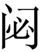
①19.13。大衍 见“大衍之数”。
大菜 ②158.4。
大逵 ⑦19.29。
大辟 ①489.3。
大圜 ⑦145.2，450.5。
“大师兄” ③313.11。
大观园 ④27.17；⑤126.2。
大欢喜 ②165.3。
大典笺 （12）451.3。
“大柱石” ⑦402.5。
“大刀阔斧” ⑤221.4。
“大内档案” ③591.2。
大方之家 ③5.2。
“大师”之流 （13）49.4。
大同古砖 ⑩68.4。
大同古铭 ⑩104.1。
“大同世界” ④233.2。
“大衍之数” ③608.12；（12）413.1。
“大雪纷飞” ⑤583.3。
大理寺卿 ⑥60.5。
大道艺人 （16）218.3。
大学院编辑费 （12）178.2。
大祭祀的值年 ①511.3。
“大丈夫当如此也” ①374.6；③48.6。
“大成至圣文宣王” ⑥330.7。
大钟故事的出典 （12）136.4。
“大成至圣文宣先师” ⑧108.6。
大学院任职的谣传 （12）116.1。
“大学教授，下职官员” ⑤318.4。
大骂人道主义的风潮 ④280.14。
大秦景教流行中国碑 （15）159.3。
大家都变成文学家了 ⑥113.48。
大家搬家去住的处所 ⑥508.7。
大毒使人死，小毒使人舒服 ⑧192.19。
“大众的事情，要大众自己来做” ⑥113.46。
“大清天下得之于闯贼非取之于明” ③187.6。
丈六 ⑥453.29。
丈量家屋 （14）12.1，93.1。
万两 （16）341.2。
万生园 ②247.11；③357.27；（15）4.8。
万民伞 ⑥133.6。
万年笔 ⑥408.4；（16）401.11。
“万姓胪欢” ①231.13。
“万年有道之长” ①147.16。
“万物皆备于我矣” ①197.6；⑥183.32。
“万恶孝为先”的谣言 ①415.6。
“万岁，天上和地上的革命”等语 ④244.5。
“与民同乐” ⑤540.4。
“与父老约，法三章耳” ③558.7。
“与此曹子勃谿相向” ③78.11。
“与其三人不幸，不如一人不幸” ⑩501.4。
“与其信而不顺，不如顺而不信” ④352.2。
“才年”给丁山电 （12）57.3。
寸析 ①110.79。
上升 ③60.4。
上国 ⑤145.8。
上春 ⑦462.2。
上真 ②367.7。
“上流书” ⑥451.8。
上下未形 ①19.16。
上变之嫌 ⑩138.68。
上官大夫 ⑨389.3。
上海三嘘 （12）383.2。
“上流文章” ②497.15。
“上九潜龙勿用” ②292.12。
“上大人孔乙己” ①461.2。
上章困敦之岁 ⑧534.2。
“上了镣铐的跳舞” （14）89.5。
“上穷碧落下黄泉” ②312.43。
上帝身旁吃糖果 ④142.12，244.8；⑧355.11。
“上帝要用日本征服白人”之说 ⑤305.3。
上海交朋友说话须漂亮之说 ⑥391.5。
上海只剩四千四百多个大市民 ⑤93.6。
“上古结绳而治，后世圣人易之以书契” ⑥106.5。
“口含天宪” ④559.6。
“口不臧否人物” ③548.50。
“口生垢，口戕口” ⑤513.6。
“口里含一支苏俄香烟”等语 ②404.18；⑥214.5。
□阀 （13）171.3。
□肱为公孙氏之说 ⑧73.2。
山吹 （14）338.3。
山会邑馆 见绍兴会馆。
山中厉鬼的故事 ④635.3。
“山梁雌雉，时哉时哉” ⑤530.2。
“山中方七日，世上已千年” ⑩440.12。
千夫指 见“千夫所指，无疾而死”。
“千字课” ⑥110.31。
千夫所指，无疾而死 ⑦151.3；（12）256.7。
“千金之子坐不垂堂” ③56.5。
乞妇受诓骗的故事 ⑤401.5。
个体发生学 ①19.12。
义庄 ②146.3。
“义角” ①294.4。
义和团传单 ④48.10。
“久违芝宇，时切葭思” ①339.2。
“久已夫千百年来已非一日矣” ③128.5；⑤398.2；（11）653.3。
“凡为天下国家有九经” ①205.5。
丸泥封关 ②467.18。
“及其老也，戒之在得” ⑥61.8。
门墙 ④237.7。
门罗主义 ⑧420.5。
之不拉 ①109.68。
尸祝 ①38.23。
尸位素餐 ⑧171.3。
“己生须己养，荷担出门去” （12）262.1。
卫宏序《诗》说 ⑨371.33。
卫绾请罢贤良 ⑨425.1。
也么哥 ⑤47.2。
女乐 ⑥199.12。
“女佛山” ④154.2。
“女官公” （11）359.16，371.6。
“女诗人” ⑤293.10，597.11。
“女子与小人” 见“惟女子与小人为难养也”。
“女子书店”开幕 （12）304.5。
“女作家”做招牌 （12）196.3。
“女作家”分为一类 ④167.5。
“女婿问题”的小评 （12）446.4。
女娲造人的神话 ②366.2。
“女娲氏之肠”的神话 ②368.16。
女娲炼石补天的神话 ②368.12。
女人和谎话分不开之说 ⑤447.4。
“女师大领得俄款”的消息 （11）255.5。
“女人讲谎话比男人来得多” ⑤447.2。
女子再嫁遭遇惨苦的故事 ①133.16。
“女学生都可以叫局”的诬蔑 ③249.2；④609.5。
“女媭之婵媛兮，申申其詈予” ③216.6。
女人的才力因男性关系而受影响之说 ⑤596.9。
小市 （15）28.10。
小序 ⑨14.25。
“小取” ②285.21。
“小贫” ⑤94.9。
“小学” ⑤543.3；（12）406.7。
小品 ⑩171.1。
小洋 （16）7.20。
小白象 见“白象”。
“小东人” ③173.7。
小学家 ⑩297.8。
小草斋 ⑩135.38。
“小补之哉” ⑧345.2。
小英雄们 （14）118.3。
小金阮宅 （15）518.2。
“小家碧玉” ④523.6；⑤611.6。
“小姐抛彩球” ⑤280.5。
“小人不欲成人之美” ⑥571.20。
“小时了了，大未必佳” ⑤152.6。
小说千三百九十篇 ⑨13.17。
小说“出于稗官”之说 ⑩4.2。
《小说月报》重出的传言 （13）428.2。
“小资产阶级革命文学” ④649.9；⑤195.22；⑥454.36。
《小说史略》之类我不要看 ⑧193.22。
“小说家合残丛小语”等语 ⑨11.2。
“小资产阶级文学之抬头” ④142.13。
“小三子可乎之及及也”等语 ⑥243.2。
《小小十年》作者不愿称它为小说 ④152.4。
《小说年鉴》对鲁迅小说妄加评论 ③164.7。
小说起源于宋仁宗日进怪异故事之说 ⑩72.7。
飞艇 ④545.9。
飞鸢 见“木鸢”。
“飞脚阿息普”、“飞毛腿奥雪伯” ⑥574.2。
叉袋 ②292.5。
“马头” ②274.14。
“马”郎妇 ⑦460.3。
马梯尼铳 ⑩173.7。
马振华投水 （12）256.4。
马志尼评拜伦 ①111.89。
马占山将军牌香烟 ⑤20.2。
马湘影遇见假“鲁迅” ④76.2；（12）104.2，115.3。
马克思谈到莎士比亚 ⑤601.3。
子时 ②452.3。
子规 见“杜鹃”。
子夜歌 ⑥111.37；⑦143.21。
子见南子 ④56.10。
“子孙绳绳” ③281.8。
“子路负米” ②266.18。
“子路止宿处” ⑤486.12。
“子夏不序诗” ⑨371.31。
“子部医家类” ⑧391.5。
子房为韩报仇 （11）71.1。
子路“结缨而死” （11）22.3。
子路被斫为肉糜 （11）19.2。
子呼父名的故事 ③548.51。
“子有钟鼓，弗鼓弗考” ⑧20.6。
孑 ①60.25。
孑遗 ⑤458.6；⑩36.4。
乡下 （13）37.4。
“幺匿” ⑤394.9。
四画
“丰收成灾” ⑤237.3。
王羊 （11）480.2。
王官 ⑥111.35。
王谢 ⑩156.16。
“王之爪牙” ⑤47.3。
“王祥卧冰” 见“卧冰求鲤”。
“王道政治” （13）299.6。
王道与霸道 ⑥15.17。
“王不死则国亡” ⑦18.9。
王尔德的自述 ⑥429.3。
王妃产铁的故事 ②452.4。
王敬轩的双
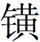
信 ⑤566.6；⑥76.6。王世贞评《子虚》《上林》 ⑨439.18。
“王者之迹熄而《诗》亡” ⑦42.4；⑨378.1。
王独清“Pong Pong Pong”的诗 ④142.14。
王独清谈唤醒“知识阶级” ⑦213.97。
王浮与帛远的辩论 ⑨61.6。
王衍口不言钱的故事 ⑥179.7。
王金发要杀鲁迅的传言 ⑧403.5。
王昶对龙朝夫诗的释文 ⑧68.11。
王公大夫士皁舆隶僚仆台 ①231.20。
王平陵告发何家干即鲁迅 ⑤7.8；（12）428.2。
王士祯欲市《聊斋志异》稿的传说 ⑨225.6；⑩71.5。
“王者欲知闾巷风俗，故立稗官” ⑨18.43。
王世贞为报父仇而作《金瓶梅》说 ⑨194.5；⑩72.8。
开元 ⑩100.27。
开成 ⑩100.27。
开口跳 ⑥201.30。
“开步走” ④72.28。
“开化瑶民” ⑤311.6。
“开放政权” ⑤127.5。
“开风气之先” ③147.10。
井华水 ②452.5。
天王 （12）408.4。
“天讨” ⑤578.8。
天坛 （15）8.5。
天花 ⑥147.5。
天学 ①38.25。
天官 ⑦331.6。
天禄 ①212.5。
天人师 ③5.3。
天择论 ①22.38。
天眼通 ①319.5；③5.3。
天演家 ⑦233.13。
“天之僇民” ②227.2。
天女散花 ⑤477.5。
“天马行空” ⑥433.7；⑩259.10。
“天生蛮性” ⑧432.1。
天夺其魄 ①268.17。
天师作法 见“张天师作法求雨”。
天行自逊 ⑩165.5。
“天何言哉” ⑥381.7；⑧237.10。
天物之学 （11）334.5。
天玺刻石 ⑧67.7。
“天朗气清” ⑤500.4。
天球河图 ③50.21。
“天祸中国” ⑦53.2。
“天道宁论” ①379.2。
“天下之大老也” ②430.23。
“天地玄黄”等语 ①268.12；②496.8。
“天灵盖”的谐谑 ③114.4。
天籁地籁人籁 ⑦57.5。
“天下兴亡，匹夫有责” （11）238.1。
“天下纷纷，何时定乎？” ③421.8。
“天上地下，惟我独尊” ⑤149.7。
天秤称犯人的办法 ④360.3。
“天道无亲，常与善人” ②430.20。
“天下有道，则庶人不议” ⑥297.5。
“天之降大任于是人也” ①255.3。
“天地解兮六合开”等语 ③549.53。
“天之所生，地之所养”等语 ⑥281.4。
“天子重英豪，文章教尔曹”等语 ⑤272.4。
“夫子何为者，栖栖一代中”等语 ⑥303.12。
元年 ⑩13.2。
“元帅” （13）492.11。
元质 ①37.13，392.2。
元谕 （12）451.1。
元禄 ⑧212.5。
“元和体” ⑨91.1；⑩130.1。
元译上谕 ④219.17。
元驹贲焉 ⑧36.4。
元祐党碑 ⑥455.42。
元明两朝崇奉真武帝 ⑨166.4。
元杂剧取材于水浒故事 ⑨155.3。
无常 ②23.12。
无情 ①106.32。
“无事忙” （13）161.2。
“无噍类” （11）99.4。
“无权势者” ③134.6。
无过雷池 ⑩165.6。
“无产”咖啡 见“革命咖啡店”。
“无告之民” ②57.8。
“无枪阶级” ①6.6；③382.5。
“无病呻吟” ①268.14。
无趾之书 （11）342.7。
无支祁故事 ⑨92.16，93.17，93.18；⑩115.4，115.6。
“无何有之乡” （11）79.5。
“无是非之心” ①568.2。
“无为而无不为” ②467.20；⑤468.2；⑥543.16；⑦54.4。
无祖国的文学 ⑦418.4。
无产阶级的定义 ④253.4。
“无刺的蔷薇”等语 ③275.2。
无治的个人主义 ⑩185.10。
无脊椎动物化石 ①23.52。
“无敌国外患者，国恒亡” ⑤158.2。
“无政府是三千年以后的事” ③480.17，599.12；⑤113.7。
“无产阶级作家不一定出自无产阶级”等语 ④69.12。
“无产者未曾从有产者意识解放以前”等语 ④72.26。
云冈石窟 ④593.3。
“云想衣裳花想容” （12）90.2。
“专制使人们变成冷嘲” ③48.9，557.3；④516.3。
“艺术府” 见“艺术之家”。
“艺术之宫” ④68.8，225.44；⑩318.5。
“艺术之家” ⑩357.9，384.4。
木丁 （11）359.12。
木主 ③187.5；（11）104.2。
木鸢 ⑤213.5；⑧359.3。
木鹊 ②484.25；⑤213.5。
木铎 ⑧236.7。
木叶蝶 ①359.7。
“木肤肤” （12）210.2。
“木口木刻” ④627.3；⑦337.5。
木口雕刻 见“木口木刻”。
木兰从军 ②348.11；③118.27；⑤470.5；⑥209.6。
木聚珍板 （11）432.4。
五代 ①231.11。
五印 ⑧20.2。
五伦 见“伦常”。
五材 ①110.79。
“五侯” ④161.8。
五常 见“伦常”。
“五臣注” ⑦142.13。
五色旗 ①489.2；③204.5；④59.4，279.6；⑦217.129。
“五更调” ⑤345.11。
五私大 ③302.6。
五七呈文 见“章士钊五七呈文”。
“五日京兆” （12）22.2。
五世同堂 ③116.15。
五行缺土 ①511.4。
“五经”博士 ⑨425.2。
五族共和 ⑦270.8。
“五夫村”辨正 （15）70.3。
“五分钟热度” ③117.25。
“五鬼闹中华” ⑤83.2。
“五瑞图”石刻 ⑧49.5。
“五十而知天命” ⑥210.10。
五十万元大洋奖 ⑤279.3。
五月人形金太郎 （16）251.4。
“五经纷纶井大春” ⑥397.5。
“五日一风，十日一雨” ⑥380.5。
五十寿辰时所摄的照片 （14）91.4。
“支那通” ②309.15。
不届 （11）394.7。
“不隔” ⑥420.3。
不伏箱 见“服箱”。
“不好惹” ②246.4。
“不抵抗” ⑤21.5。
不鸣条 ⑧539.4。
“不□癞儿” （14）217.1。
“不为戎首” ③157.20。
“不为祸始” ③157.20。
“不为福先” ③157.20。
“不用古典” ④364.9。
“不亦快哉” ⑥199.14。
不周之山 ②367.10。
“不耻下问” ①188.3。
“不耻最后” 见“不为最先，不耻最后”。
“不虞之誉” ④177.4。
“不撤姜食” ④524.10；⑤330.13。
“不朽之大业” ③230.9。
不“再来开口” ⑧382.9。
“不抵抗将军” ⑤158.1。
不骂军阀 ①6.6；④178.11。
“不完全则宁无” ①353.4；⑥330.4；（11）424.12。
“不幸短命死矣” ⑤473.2。
“不学《诗》，无以言” ⑨391.12。
“不能收其放心” ①556.29。
“不齿于四民之列” ③491.9。
“不革命”的语丝派 ⑧271.3。
“不薄今人爱古人” ③34.8。
“不为最先，不耻最后” ③118.29，157.19。
“不孝有三无后为大” ①149.25，556.27；⑦233.6。
“不识不知，顺帝之则” ⑦412.2。
不要再请愿的主张 ⑥456.50。
“不胜屏营待命之至” ②283.4。
不准盗发魏襄王冢 ⑨26.6。
“不负责任的文体”等语 ⑤139.2。
“不战不和不守”的对联 ⑦59.4。
“不满于现状”的“杂感家” ④7.2，198.15，249.2。
不入三教九流的小说家 ①554.9。
“不可与言而与之言，失言” ③486.4；④397.14。
“不图今日重见汉官威仪” ④141.10；⑤479.2。
“不闻夏殷衰，中自诛褒妲” ⑤448.6。
不准做“权威”，只准做“前驱” ③495.4。
“不招待”是最高尚的欢迎 ④516.6；（12）377.9。
不动笔是为了保持自己的身份 ③70.16。
“不得中行而与之，必也狂狷乎”等语 ④524.9；⑧436.2。
“不知周之梦为蝴蝶欤，蝴蝶之梦为周欤” ②496.11；④588.16。
“不是东风压倒西风，就是西风压倒东风” ⑧398.8。
“不很高明而却奋勇的战士的面目”等语 ②382.8。
不含利害关系的文章当在将来另一社会里 ④116.20。
犬儒 ③557.2；（12）109.3。
“犬声如豹” ⑤268.2。
太牢 ①556.24。
太夫人 ⑦300.3。
太古代 ①23.51。
太平歌 ⑥111.39。
太极图 ⑧112.6。
“太狂生” ④339.5。
太平成象 ⑦150.3。
太阳之生日 （11）465.6。
太阳的圆圈 ⑥508.10。
“太实则近腐” ⑨143.7。
太保阿书在杀头 （12）263.2。
太史职守原出道家 ⑨440.25。
太岁在阏逢摄提格九月既望 ⑩37.11。
历代帝王庙 （15）471.4。
“历史癖与考据癖” ①555.15；⑥15.15。
车同轨，书同文 ⑤225.7。
比翼鸟 ⑤213.3。
戈尔 ①59.8。
戈谛克式 ⑥497.29。
戈谛克的精神 ⑦208.58。
“区区”佥事 ①271.31；③215.3。
“匹夫匹妇之为谅也”等语 （11）238.2。
巨（钜）桥 ②429.17。
巨鳌 ②367.8。
巨灵的努力 ⑦382.3。
互助说 ④234.6。
切支丹 （13）119.5。
牙门 （11）358.2。
瓦松 ②211.2。
瓦肆 ①159.6。
瓦将军 ⑧59.3。
瓦棺寺 ⑩145.3。
卝 ⑧23.28。
“止于礼义” ⑥450.5。
“止于至善” ③430.7。
“少兴府” （11）378.3。
“少阿妳” （11）535.4。
少女多丰臀 ⑦460.4。
“少看中国书” ⑤380.2；⑧315.6。
少翁招魂的故事 ⑨426.8。
“少负不羁之名，长习自由之说” ①276.7。
“日者” ⑥459.5。
日曜 （11）298.1。
日本浪人 ②329.7；③182.12。
“日本侦探”说 ⑥136.3；⑦433.7；（12）481.9；（13）106.10，132.3，281.1；（14）260.3，301.2。
日本的报章 ⑥507.4。
“日本古名倭奴” ⑧359.2。
“日本应称贼邦” ⑧359.2。
日本所出玩具集 （13）508.2。
“日本施行征兵之制” ⑧359.2。
日文重译不可靠之说 （13）459.12。
日本报称鲁迅生大病 （13）509.1。
“日军所至，抵抗随之”等语 ⑤67.4。
“日凿一窍，七日而混沌死” ④588.16；⑩290.23。
“日月星辰，取其照临也”等语 ⑧49.4。
日本人称赞饶汉祥的骈文 ③502.11。
日本字新闻对萧伯纳的报导 ④513.12。
“日本见中国南方共产潮流渐起，为之焦虑” ⑤57.6。
中元 ⑧412.2。
中权 ⑤433.19。
中州 ③56.4。
中庸 见“中庸之道”。
中道 ⑩274.14。
中古代 ①23.51。
中交票 ①230.4，569.9；（15）250.1，302.4。
“中日亲善” ⑥278.4。
“中日提携” ⑥278.4。
中央公园 ③359.44；（15）184.1。
中经游涉 ⑩37.6。
“中庸之道” ①294.6；②44.11；③30.16；④279.11。
中焦塞着 ①479.2。
“中国无幽默” ⑤488.3。
“中国的济慈” ⑦284.8。
“中国元气太损” ③501.2。
中国现代圣经 ⑤67.2。
中国的法斯德 ③598.7。
“中国文坛的混乱” ⑤264.2。
“中国画久臻神化” ⑧97.3。
中世纪正教的火刑 ④619.7。
“中国人失掉自信力” ⑥123.4。
“中学为体，西学为用” ①330.5；③33.7；⑤572.4。
中国戏属象征主义说 ⑤614.5。
中国戏用“象征手法”之说 ⑥139.2。
中国人所作之中国文学史 ⑨4.1。
“中国人起码要学狗”的谬说 ⑥416.9。
《中国新文学大系》编者照片 （13）381.3。
“中世纪主义与乌托邦相遇”等语 ⑦375.13。
“中国工人没有外国工人那么苦” ⑤142.7。
“中国历史上标准伟人选举奖学金” ⑤596.4。
“中世纪的东欧是三种思想的冲突点” ④330.15。
贝壳 ②404.19。
内 （15）274.1。
内传 ①553.4。
内籀 ①22.40。
内道场供奉 ⑩250.2。
“内言不出于阃” ①276.10。
“见怪不怪，其怪自败” ⑤608.9。
“见面时一谈，不见时一战” ③416.7。
“见买若耶溪水剑，明朝归去事猿公” ⑤258.4。
牛马走 ⑧440.4。
“牛奶路” ④357.9；⑦460.3。
“牛克司” ⑥271.60。
“牛溲马勃” （12）535.4。
牛声荣的“开倒车”论 ③356.18。
牛李之争的姓应图谶说 ⑩133.25。
手民 ①408.6；⑧162.4；（11）614.2。
手毕 （11）334.2。
手头字 ⑥293.3。
“手执钢刀九十九，杀尽胡儿方罢手” ⑤240.2。
毛边 （13）437.2。
毛角 ①107.43。
“毛丫头” ③129.12，379.7；（12）346.1。
毛瑟枪 ②220.2；（11）68.10。
“气杀钟馗” ②158.7。
升汞 ⑩451.6。
“升中于天” ⑥106.6。
夭阏 ①38.34。
“长毛” ①489.6；②69.5；⑥201.25；⑦233.8。
长城 ③61.2。
“长卷” ④574.2。
长班 ①582.4；②133.3；（15）4.6。
长笛 ⑧539.5。
长方板 ②368.14。
长明灯 ②69.3。
长三么二 ④533.4。
长股奇肱 ⑩166.19。
“长期抵抗” ⑤21.5，299.9。
“长揖横刀出”等语 ④94.8。
“长生天气力里大福荫护助里” ①132.11。
“仁王护国法会” ⑤299.5；⑥123.3。
“仁远乎哉我欲仁斯仁至矣” ②292.12。
什 ①105.21。
“什么马克斯牛克斯” ③598.10；④220.24；⑤590.6。
片上伸和有岛武郎的争论 ⑩308.8。
“仇偶” （11）378.2。
“仍旧贯如之何” ①313.4；⑦328.3。
仂句 ④218.6。
爪哇之猿人化石 ①23.54。
“化生” ③78.6。
“化峭僻之途为康庄” ⑥451.11。
化名写文章为自己的作品辩护 ⑦78.4。
反汗 （12）400.3。
反张 ①112.99。
反种 ①109.67。
反对读书的议论 ⑤496.3。
“反过来征服中国民族的心” ⑤544.6；⑥15.15，297.6。
刈田岳碛河底石小地藏 （16）275.9。
“父兮生我” ①146.8。
“父母之命媒妁之言” ①256.6。
从于唱喁 ⑧37.15。
“从井救人” （11）668.2。
“从优拟恤” ③302.4。
“从前种种如昨日死” ③558.5。
从外国人嘴上抄来的 ⑤327.6。
今夏失业，幽居南中 ⑩90.8。
“今日之我与昨日之我战” ③60.5。
“今日乌合，明日鸟散”等语 ⑤488.4。
今代书店对《今代文艺》编辑的要求 （14）101.1。
“凶兽样的羊” （11）75.2。
公论 ①41.63。
“公民科” ⑦398.2。
公谟学院 （14）169.1。
“公理”和“正义” ②247.9；③6.8，482.3。
“公理战胜强权” ①336.6；⑧107.3。
“公理战胜”的牌坊 ③114.2，515.2；④442.6；（11）306.2。
公子成反对主父改胡服 ①369.3。
分剂及光图 ⑦28.19。
仓颉四目 ⑥106.4；⑦39.5。
仓颉鬼哭体 见“苍颉造字夜有鬼哭”。
“仓颉，黄帝史” ⑥106.7。
月见草 ⑧127.3。
月落参横 ⑦232.2，475.2。
月中有蟾蜍 ①212.4。
“月白风清，如此良夜何” ⑤201.4。
月经毛发等入药之说 ①197.7。
“月黑杀人夜，风高放火天” ⑤201.5。
“勿念旧恶” ⑥644.15。
勿视勿听勿言勿动 见“非礼勿视，非礼勿听，非礼勿言，非礼勿动”。
丹田 ②452.8。
风化 ②465.5。
风轮 ②189.2。
“风马牛” ①428.8；④356.1。
风雨如磐 ⑦447.2。
风终《豳》，雅终《召旻》 ⑥183.28。
勼 （15）200.1。
乌托邦 ①401.9；④141.8；⑦216.122；⑩373.3；（11）332.16。
乌衣巷 ⑩156.16。
“乌托之邦” ①400.5。
“乌鸦主义” ⑤194.13。
乌克兰的怪谈 ⑩515.2。
“乌鸦为记”的刊物 ④577.5。
凤城 ④339.4。
勾萌绝朕 ①103.3。
勾践遗迹 ⑩37.9。
“六艺” ⑨357.5。
“六书” ⑥107.13。
六代 ⑦452.2。
“六法” ⑥377.8。
“六麻” ①401.12。
六臣注 ⑤396.2；⑦142.13；⑩66.7。
六零六 ①332.12。
六三花园 （16）132.2。
六朝译经的和尚 ①421.6。
六朝焚身的和尚 ①373.2。
“六个文学团体之五” （12）225.1。
六个学生自治会职员 ③79.13。
文士（犹太） ②180.5。
文冢 ⑧535.8。
文理 ①38.30。
“文探” （12）470.4。
“文童” ①555.18。
文士们 ③6.10。
“文化城” ②401.6；⑤15.6，455.7。
文曲星 ⑤90.7。
文字狱 （13）69.4。
“文明戏” 见“新戏”。
文学科 ⑦332.9。
文学掾 （11）433.3。
文笔对 ④47.7。
文澜阁 ③501.6；（15）177.1。
“文人无行” ⑥309.2；⑧394.2。
“文人相轻” ⑤580.3；⑥310.4。
“文化统制” ⑥62.16。
“文以载道” ⑦406.4。
“文妖”之说 （13）250.6。
“文学青年” ④334.6。
文学奖金 见“良友文学奖金”。
“文房四宝” ⑥408.3。
文章小道 ③543.23。
“文章病院” （11）7.9。
文人误国说 （13）88.3，132.4。
“文艺的分野” ④113.2；⑧273.3。
“文艺漫谈会” ⑤233.8。
“文以气为主” ③542.17。
“文坛的悲观” ⑤580.2。
文武周公墓 ⑤486.15。
“文学小囡囡” ④334.6。
“文章冠天下” ⑨437.10。
“文艺”是“整个”的 （11）509.7。
“文”和“字”的解释 ⑥294.10。
“文学子游子夏” ⑥110.32。
文学不是宣传说 ⑧426.2。
“文学家”做检查官 （13）264.2。
文章是挤出来的 ⑥370.6。
文稿吞进肚子去 ⑤238.5。
“文人的化名”的议论 ⑤493.2。
文艺鉴赏的四阶段 ⑩265.1。
“文化山”上的学者们 ②401.6。
文法科大学生过剩 ⑤238.6。
文宣王大成至圣先师 ④55.2。
《文化批判》拖住辛克莱 ④72.27。
文坛故事的小说、外史 ⑤391.4。
文艺复兴前期的壁画家 ⑧357.4。
文学不必如奶油的主张 ⑥273.73。
《文学》关于不退稿的广告 （13）474.4。
“文学家究竟有什么用处？” ③105.18。
文章事可以留名声于千载 ③543.22。
文学不问时地永远不变之说 ⑩477.4。
《文学导报》（北平）引“第三种人”为知己 （14）61.6。
文学社不先征同意而登广告 （13）475.1。
“文艺的政治宣传员如宋阳之流” ⑥113.47。
“方糖” ③337.17。
“方巾气” ⑥237.4。
“方向转换” ④226.53。
方孝孺被灭十族 （11）85.1。
方传宗谈毛边装订 ③511.9。
“火云” ⑩288.15。
火刑 ④619.7。
火宅 ②202.2。
火聚 ②202.4。
火牛阵 ⑤358.3。
火克金 ①479.3。
火神庙 ③206.18；（15）51.2。
火线里的寓所 ⑦410.3；（11）7.8。
“火炎昆冈，玉石俱焚” ③307.5。
“为王前驱” ④329.3；⑤121.5。
为人生的文学 ⑥267.24。
“为人陗直刻深” ⑨408.20。
“为人类的艺术” ④317.2。
为艺术而艺术 见“为艺术的艺术”。
“为艺术的艺术” ③543.21；④108.3；⑤27.5；⑦213.101；⑧231.11。
为文学的文学 ⑥267.24。
“为圣天子驱除云尔” ①231.15。
“为战略关系，须暂时放去北平” ⑤34.2。
“为之斗斛以量之，则并与斗斛而窃之” ④601.3；⑤507.6。
“为支配阶级作他底统治的工作”等语 ⑩319.11。
计然以越王鸟喙 ⑩31.7。
户部 ①117.152。
心印 （13）484.2。
心传 ①336.5；④635.1。
心声 见“言者心声也”。
心学 （11）348.2。
“心存魏阙” 见“身在江湖，心存魏阙”。
“心理抵抗” ⑤21.5。
“心事如波涛” ⑥201.27；（13）290.1。
“心上有杞天之虑” ③115.5，491.8；⑦114.4；⑧236.6；（11）501.4。
心死的应该出洋 ⑤108.5。
“心”字辈的文学家 （11）74.4。
“《心的探险》。实价六角” ⑧190.4。
尺蠖斋 ⑨158.25。
“引车卖浆者流” ①199.27，554.8；③146.4；（14）191.3。
《引玉集》作者的名单 （13）102.3。
巴且实 （15）71.7。
巴尔底山 ⑧347.3；⑩357.11。
以脱 （11）88.1。
“以友辅仁” ⑧237.13。
“以夷制夷” ⑤121.2。
“以华制华” ⑥226.2。
以酉为申 （12）372.2。
“以斧斯之” （11）343.13。
“以待来年” ③6.9。
“以党治国” ③597.4。
“以怨报德” ④650.14。
以訾为郎 ⑨436.4。
“以主帅自诩” ③401.4。
以色列的王 ②179.2。
“以孝治天下” ③116.17；⑤324.6。
“以天下与人易” ⑤127.8。
以肖像示青年 （13）56.2。
“以其好喝醋也” ⑧193.23。
以黄老治天下 ⑤324.6。
“以人血染红顶子” ①295.8。
“以眼还眼以牙还牙” ①296.17；⑥128.1。
“以己之心，度人之心” ⑤470.4。
“以子之矛，攻子之盾” ③230.12；⑤388.2。
以窥
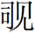
神器为大戒 ⑩138.66。“以意逆志，自谓得之” ⑤241.6。
“以力服人者，非心服也” ⑤385.3。
“以不教民战，是谓弃之” ④490.9。
“以趣味为中心的文艺” ④10.16，115.13。
以《五言古意》为赠秀才诗 ⑩82.5。
“以《红楼梦》为成佛之要道” ⑥570.13。
“以爱及爱，伊父母自作冰人” （14）233.2。
“以德服人者王，其心诚服也” ⑤83.3。
“以马上得天下，不能以马上治之” ⑥163.4。
“允执厥中” ④234.7。
“劝孝”乐府 ①146.9。
“劝百而讽一”等语 ⑨438.13。
“劝治史学”以“保存国性” ⑦240.2。
“双烈合传” ①132.13。
“予岂好辩哉，予不得已也” ⑤259.11；⑦42.5。
“毋友不如己者” ①244.28。
孔庙 （15）9.8。
“孔方兄” （11）99.3。
孔融让梨 ⑤452.3。
“孔子小天下处” ⑤486.13。
孔子周游列国 ④524.11。
孔融讥讽曹操 ③544.26。
孔子作《书》序之说 ⑨367.6。
孔丘不肯谈鬼神 ①206.6。
孔丘对子路赌咒 ①206.6。
孔墨的“天”的观念 ④160.2。
孔子倒肉酱的故事 ⑥332.18。
孔丘排行第二之说 ③141.14。
孔子“厄于陈蔡”的故事 （11）22.4。
孔丘见老子的传说 ②464.3，465.5；③141.14。
孔子删诗问题的不同说法 ⑨370.27。
“孔子作《春秋》而乱臣贼子惧” ③218.20；⑥332.20。
孔安国以今文校古文《尚书》之说 ⑨368.14。
书记 （12）406.5。
“书名” （13）55.2。
书券 ②134.11；（15）294.3。
书脑 ②87.13。
书厨 ⑤496.2。
“书者，如也” ⑨357.5。
“书中自有黄金屋” ④167.4；⑤293.9。
水黾 ⑩298.15。
水道 ①38.21。
“水银浸” ②158.6。
水晶顶 ⑤282.2。
“水横枝” ②236.3。
“水平线下” ①267.10；③218.16。
水灾摄影 ⑧366.3。
“水满金山” ①181.3。
《水浒》《红楼》等新序 （11）451.4。
《水浒传》编撰者问题的不同说法 ⑨155.5，157.16。
五画
“末人” ⑤296.6；⑥274.78；⑩484.5。
末减 ⑦59.5。
末解 ①115.127。
“未达一间” ①344.3。
“未字先寡” ①285.14。
未名社结束声明 （12）377.11，380.1。
未名社欠款归还问题 （12）380.2。
“未名社诸君的创作力并不十分丰富”等语 ⑧178.8。
“玉楼赴召” ①171.4。
“玉皇香案吏” ②86.8。
“正史” ①553.5；②349.16；⑥123.5。
“正人君子” ①6.5；②286.29；③5.4，182.11；④8.7；⑤155.2；⑧307.5；⑩288.12，335.23。
“正始名士” ③546.39。
“正确”的信 见“‘左联’向国际革命作家联盟汇报信”。
正人君子大骂“偏激” ④86.7。
正人君子化为教授主任 ⑤155.3。
功令 ⑤113.4。
功曹 （11）433.3。
“功亏一篑” ③39.11。
“去年不过四十五岁”等语 ②382.8；③501.3；④190.7；⑧178.6。
甘鲷 （16）358.7。
“世” （11）375.12，378.5。
“世纪末” ⑥269.37；⑩491.5。
世界语 ①358.5；⑦38.4；⑧449.2，477.4。
“世故老人” ③401.3，411.6，486.2，521.2；④115.15；（11）623.2。
“世界苦恼” ④25.5。
“世袭云骑尉” ⑥201.26。
《世说新语》的模拟书 ⑦141.11。
“世无英雄，遂使竖子成名” ④563.4；⑤433.18。
世家王源与暴发户联姻的故事 ⑥355.5。
艾思奇谈连环图画 ⑥29.4。
古貌林 ②403.8。
“古已有之” （11）88.4。
古今体诗 ④311.3。
“古尔波夫” ⑩518.10。
“古轩亭口” ①472.1。
古燕半瓦 （16）320.3。
古罗马的剧场 ⑥139.6。
古代言文合一说 ⑤557.4；⑥108.17。
古久先生的陈年流水簿子 ①455.3。
古典主义者与罗曼主义者相骂 见“雨果剧本演出时的冲突”。
“节育问题”的议论 ③312.8。
本生 ④461.7。
“本色” ⑥451.13。
《本草》 ⑩297.9。
“本朝” ③140.9。
本草家 ⑤98.3。
“术擅岐黄” ⑥377.7。
札尔 ①105.16。
“可惜” ③204.4。
“可观者九家” ⑨12.7；⑩4.4。
“可怜无益费精神” ④190.5。
“左士陈阔” （13）439.2。
“左而不作” ④455.6。
左琴科谈创作法 （13）491.3。
左琴科谈自己的思想 ④448.12。
左拉为特莱孚斯辩诬 ③217.15；④550.4；⑥420.6。
“左联”五作家被害的消息 ④503.3。
“左联”向国际革命作家联盟汇报信 （13）459.9。
石炭 ⑧20.8，22.20。
石头城 ⑦452.2。
石墨纪 ①23.51。
“石破天惊” （11）227.2。
石窟诸署令的品级 ⑧78.4。
布尔乔亚 ⑤315.8；⑥397.7；（14）3.2。
布衣暖菜根香 ⑩11.7。
布鲁多既杀该撒 ①62.38。
布袋和尚的故事 （11）436.5。
“布尔乔亚”恶意的嘲笑 ④225.41。
“龙虱” （11）196.2。
龙准 ②453.16。
龙门石佛 ①207.12。
“龙驭上宾” 见“龙御上宾”。
“龙御上宾” ①220.16；③513.17。
龙朝夫诗 ⑧67.10。
“灭此朝食” ④334.11。
平楚 ⑦163.3。
平地木 ①442.2；②300.7；（16）341.2。
平安朝 ⑩247.37。
“平湖调” （15）254.6。
《平定什么方略》 ⑩193.6。
打本 ⑧83.5。
“打发” 见“打发他们去”。
打脸 ①332.11；⑦39.9。
打棚 ⑥316.9。
打醮 ⑤299.5。
“打把子” ①332.11。
打油诗 ②174.2；（12）408.2。
打茶围 ②146.2。
“打结字” ⑥106.9。
打粟干 （16）94.2。
“打落门牙” ③165.17，207.19。
“打发他们去” ⑦218.139；⑧307.3；⑩319.14。
“打是不打，不打是打” ④517.7。
扑落 ⑥370.4。
扑满 ⑤152.7。
“东皮” （12）47.5。
东樱馆 （11）332.13。
“东学西渐” ①344.5。
东交民巷使馆界 ⑦53.3。
“东面而征西夷怨” ⑤145.10。
东方朔的八言七言诗 ⑨429.23。
东吉祥派的正人君子 ③182.11。
《东方杂志》只作附录的文章 （12）319.3。
“卡尔和伊理基” ⑤195.21。
卡莱尔论但丁 ①104.14。
卡尔亲王谈游中国的印象 ⑤327.4。
北军 （12）95.2。
“北大”徽章 （15）294.1。
北平五讲 （12）352.8。
北京传来的话 见“鲁迅等将离开厦门大学的传言”。
北新被封两回 （12）373.2。
《北平笺谱》的广告 （12）470.1。
北边忽地起烽烟 ⑦397.3。
北京大学的谣言 见“林纾等对《新青年》编者的谣言”。
《北平笺谱》出版预告 （12）462.1。
北新书局出书广告 （12）47.11。
北局又有变化的消息 （12）226.5。
北京大学快要关门大吉 ③324.9。
北平关于全国木刻展览的刊物 （13）350.2。
“北京城内的外国旗”使学者愤慨 ③311.3。
“北大教授在女师大兼主任实属违法” ③261.7。
北平中德文化学会拟办德国木刻展览 （13）350.4，389.4，410.1。
占星 ①38.26。
“卢布”说 ③141.18，312.6；④9.12，197.9，478.17，490.6；⑤155.2；⑥202.32，215.10；⑦433.7。
卢弓卢矢 ②382.6。
“卢布换去了良心” ③141.18。
卢梭的儿童教育主张 ④94.10。
卢那察尔斯基主张保存俄国农民美术 ④244.13。
卢那察尔斯基谈古怪的作品的产生和贩卖 ⑦218.140。
“业儒” ①132.9。
“旧瓶不能装新酒” ⑤344.10。
旧小说家以为已经战胜 ⑧140.8。
“归马于华山之阳，放牛于桃林之野” ②430.21。
“目连戏” ②285.22；⑥643.5。
“目连嗐头” ②285.24。
且介亭 ⑥5.9。
甲骨文 ⑥293.6。
甲骑兵官 ⑩501.2。
《甲寅》周刊用吴稚晖、蔡元培之名作广告 （11）511.6。
申年 （16）359.16。
《申报》对《小小十年》的批评 ④234.4。
“电影” ②320.15。
号衣 ①472.3。
叶紫小说遭攻击 （13）610.1。
叶紫的三条请求 （13）513.2。
叶灵凤活剥毕亚兹莱 ⑤608.10；⑦206.36。
叶紫在鲁迅信后附注 （13）331.1。
叶灵凤模仿构成派绘画 ⑦352.6。
叶灵凤讽刺鲁迅的漫画像 ④119.7。
叶灵凤侮称撕下《呐喊》上茅厕 ④314.29；⑥153.11。
“田园诗人” ③552.67。
田、华两公之自由 （13）527.8。
田汉为《调和》辩解 （13）376.6。
田汉等开咖啡店的广告 （12）129.2。
田汉在南京大演其戏 ⑥564.30。
田汉对郑正秋的挽联 （13）527.9。
田汉、野容的两篇化名文章 （14）4.6。
“由艺术的武器到武器的艺术” ④71.18。
“由批判的武器到用武器的批判” ④71.23。
“叭儿狗” ③252.21。
《史记》有缺之说 ⑨441.27。
《史记》补缺之作 ⑨441.28。
史济行化名诓骗 ⑥516.5。
史志元批评《新潮》未提倡科学 ⑦236.4。
“兄弟怡怡” ②147.7。
“兄弟素不吃饭” （11）103.2；（13）198.1。
“兄弟阋于墙，外御其侮” ④198.16。
“只在此山中，云深不知处” ⑥453.21。
“只许州官放火不准百姓点灯” ③172.2。
“只在心里动了恶念，也要算犯奸淫” ⑤302.4。
“四凶” ⑦76.4。
四夷 ①424.3。
“四条” （11）539.1。
四省 ④541.5。
“四海一” ⑥459.7。
“四大奇书” ⑨288.1。
“四条胡同” （11）288.3。
四郊多垒 ③39.5。
四烈士坟 ①430.3；③299.5。
“四十而不惑” ⑥201.28。
四角号码王公 （13）428.3。
“四千余年古国古” ①230.8；④146.12。
“‘四书’，南宋以后之名” ③208.26。
“四十岁以上的人都应该枪毙” ⑦460.2。
“四五十岁的人爱说四五岁的孩子话” ③187.4。
“出版” （11）584.1。
“出相” ⑥462.5；⑦428.4。
“出洋考察” ⑥132.3。
“出疆载质” ③140.7。
“出乎意表之外” ①188.7；③519.1；（11）529.1。
出限定版团体 （14）331.3。
出让《四部丛刊》的广告 （14）67.1。
《出关》是讽刺傅东华之说 ⑥541.4。
生西 ③59.3。
生的 ⑦29.40。
生学 ①22.39。
“生刲驴肉” ⑤521.4。
“生降死不降” ⑧122.2。
“生存竞争，天演公例” ⑧191.9。
“生物自然发生”的实验 ④588.12。
“生儿不用识文字，斗鸡走马胜读书” ⑩120.45。
生活书店要求撤换《译文》编辑黄源 （13）560.2；（16）554.5。
“失掉的童心”等语 ⑥273.76。
“付洪乔” （11）90.1；（12）124.5。
代金引换 （11）374.5。
“代表无耻的章士钊” ③256.45。
“代表无耻的彭允彝” ③256.45。
“代被群众专制所压迫者说了几句公平话” ③134.4。
仙居术 ②112.14。
“仙人下棋”的故事 ⑩439.11。
仙人岛上做皇帝 ⑧355.10。
仪的 ①23.42。
仪凤门 ②308.10。
“白匕” （15）197.2。
白下 ⑦465.2。
白水 ⑧43.13。
“白光” （11）90.3。
白眚 ⑧23.36。
“白象” （11）288.1。
白眼 见“青白眼”。
白摺 （15）27.1。
白云楼 ②165.6；⑧212.8。
白玉佛 ④492.3。
“白名单” （14）252.1。
白塔寺 （15）506.7。
白云苍狗 ③192.7。
白毫毛相 ⑨55.24。
白鹄的歌 ⑩231.7。
“白发三千丈” ⑤63.4。
“白状元祭塔” ①181.3。
“白话的文言” ⑤557.5。
白话“反而难懂”说 ⑤555.2。
白话文“鲁里鲁苏”说 ⑤555.3；⑥349.2。
白话将被“扬弃”或“唾弃”之说 ⑤552.3。
白俄的新闻对萧伯纳的报导 ④512.5。
白整为魏高祖等营建石窟的记载 ⑧78.3。
“他山之石” ③104.12；⑧446.2。
他“家翰笙” ③205.13。
“他的战略是‘暗示’”等语 ⑧178.2。
“他说不能做批评”等语 ⑧178.6。
“他想得到一个‘思想界的权威者’的空名”等语 ⑧178.6。
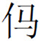
⑧37.13。“斥革功名” ①132.12。
卮言 （15）27.7。
“瓜蔓抄” （11）6.4。
令威来华表 ⑧541.2。
“用夷变夏” ③229.3。
用“阿Q”称鲁迅 ⑤155.1。
用“好事”来打击祷告 ⑩522.5。
“印可” ⑤477.7。
印
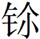
（11）359.10。印鉴 （12）334.3。
印度麻 ①344.2。
“印度诗哲” ⑦78.3。
“印贴利更追亚” ④115.14；⑦213.97；⑩319.12。
“印度波兰马牛奴隶性” ①105.20；⑧95.4。
“匆匆不暇草书” ⑥429.2。
“匈奴未灭何以家为” （11）39.3。
“犯而不校” ①296.16；⑥644.15。
犯人之性欲问题 ⑥17.29，17.30。
犯人可以用英语自由谈话之说 ⑤388.3。
外史 ⑨367.2。
“外典” ⑨193.2。
外籀 ①41.62。
外国文写的序 （14）70.4。
“外国文氓”的恶谥 ⑤444.5。
外洋养病，名山拜佛 ⑤149.8。
外国人所作之中国文学史 ⑨4.1。
“处片” ⑦143.22。
“处于才与不才之间” ⑦271.10。
刍狗 ④145.9。
刍荛 ⑥339.20。
刍豢 ⑧237.14。
刍灵木寓 ⑧90.20。
包公殿 ②283.8。
包拯铡包勉的故事 ①197.10。
包拯“审乌盆鬼”的故事 ⑨289.8。
包拯“断立太后”的故事 ⑨289.8。
“乐户” ⑤229.6。
“乐园” 见“伊甸园”。
乐府令 ⑨401.7。
“鸟尽弓藏，兔死狗烹” ⑥652.6；（13）339.3。
“饥来驱我去” ③78.5；⑥178.5。
主催 ⑧307.10。
“市民”之演说 ⑦303.6。
“立言” ①553.2。
立拨 ①43.81。
“玄圭” ②407.38。
玄念 ①37.17。
玄纽 ①37.19。
玄酒 ⑦468.3。
玄奘父母遇难故事 ⑨175.12。
闪闪如岩下电 ②384.12。
兰学 ⑩274.19。
“兰谱” ③519.2。
“半仇子女” （11）378.2。
“头儿” ⑩440.14。
头陀 ②273.5。
头钱 ②223.2。
“头颅谁斫” ①268.15。
头里
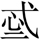
罗卜 （11）408.2。“头戴瓜皮小帽”的阿Q像 ⑥155.3。
“汉官威仪” ④141.10。
汉派篆刻 （12）489.4。
“汉奸”的称号 见“‘日本侦探’说”。
汉武帝获白麟故事 ⑨439.21。
汉武梁祠石刻画像 ①188.8；②349.20；（11）433.2。
汉武帝寻仙山的故事 ②368.18。
汉的大侠与权贵相馈赠 ④161.6。
汉重孝廉而有埋儿刻木 ③224.3。
汉高祖为戚夫人作歌 ⑨401.6。
汉字新闻对萧伯纳的报导 ④513.13。
《汉书·艺文志》录小说十五家 ⑩4.5。
汉人以《书》二十八篇拟二十八宿 ⑨368.8。
宁式床 ①558.43。
宁馨儿 ③157.22；（11）68.11。
“宁古之塔” ①400.5。
宁“雅”而不“达” ⑤217.7。
“宁我负人，毋人负我” （11）204.1。
“宁赠友邦，不给家奴” ⑤130.9。
宁错而务顺，毋拗而仅信 ④396.7。
冯妇搏虎 ③487.6；⑤604.4。
冯起炎投呈 ⑥46.6；（13）135.8。
冯乃超谈北伐以后的形势 ④67.4。
冯玉祥通电实行三民主义 （11）164.2。
冯乃超讥鲁迅跟着弟弟说人道主义的美丽话 ④115.12。
写利 （11）349.6。
写真干板 ⑦27.5。
写两汉的小说 ⑨158.22。
写两晋的小说 ⑨158.23。
写宋代的小说 ⑨158.25。
写唐代的小说 ⑨158.24。
写通史的小说 ⑨158.26。
写东西周的小说 ⑨158.21。
写荒古虞夏的小说 ⑨157.20。
写好外文姓名地址的信封 （12）300.2。
“讨赤” ③302.2；⑩297.2。
讨替代 ②309.16。
“让娘儿们来干一下” ⑧397.2。
礼门义宗 ③116.15。
“礼让为国” ⑤324.5。
“礼拜五六派” ⑤113.9。
“礼部总长” ⑧236.3。
“礼不下庶人” ③235.5；⑤324.7；⑥198.3，333.26。
“礼失而求诸野” ①220.14。
“训” ⑨368.9。
“训政” ⑥424.3。
训方氏 ⑨14.23。
“必也正名乎” ⑥391.3。
永无意必 ⑥204.2。
永乐的上谕 ⑥184.37。
永田一修评凯绥·珂勒惠支 ⑥496.19。
司马迁造赋 ⑨442.31。
司马昭杀嵇康 ③550.58。
司马相如装病不出 ⑦406.2。
司马相如遗封禅书 ⑥358.6；⑨438.14。
司马相如制作迟缓之说 ⑨439.17。
司马相如讽谏游猎信谗 ⑨437.7。
司马温公敲水缸的故事 ⑩439.9。
尼采咒骂妇女 ③217.14。
尼采自诩为太阳 ⑥41.4。
尼采谈弃旧求新 ①103.2。
尼采谈无望于“庸众” ①61.27。
尼采著作中译本只半部 ④227.60。
尼采样的格言式的文章 ⑥273.71。
弗 ⑦28.25。
“民之父母” ⑦242.8。
民众主义 ④271.2。
“民德归厚” ⑤391.7。
“民无信不立” ⑤385.4。
《民报》的广告 ③253.25，472.16。
“民族英雄”的肖像 ⑤45.3。
“民亦劳止，汔可小康” ④577.7。
民气论与民力论之说 ③104.10。
“民族主义文学”者讪笑吴稚晖 ⑤133.3。
“民不出米粟麻丝以事其上则诛” ⑤305.5。
《出关》中的老子是作者的自况说 （14）37.1。
 （11）511.3。
（11）511.3。
“奴” ①249.8。
加罗厘 ⑦29.37。
加答儿 （16）312.6。
加尔玛弱儿 ⑥497.27。
发标 ⑦42.2。
“发热” ②246.5；③251.15，496.7。
发隐地 ①60.22。
“发扬国光” ⑤515.3；⑥41.2。
发昏章第十一 ⑩491.4；（11）168.5。
“发思古之幽情” 见“摅怀旧之蓄念，发思古之幽情”。
发明一个字的古义等于发现一颗恒星 ③173.5。
“边疆” ⑤105.4。
“圣武” ①373.4。
圣觉 ①40.49。
“圣人之徒” ①145.2。
“圣叹外书” ⑨143.9。
“圣之时者也” ③129.10；⑥117.6，331.14；⑧237.11。
“圣祖仁皇帝” ①212.7；③389.3。
“圣人之道，为而不争” ②467.20。
“圣人不死，大盗不止” ⑩481.9。
圣贤将人们分为十等 ①231.20；⑦86.3。
对课 ②292.11。
“对空策” ③429.3。
对于姓的开玩笑 ④467.5。
对付三先生之法 （11）592.2。
“对日妥协，现在无人敢言”等语 ⑤160.3。
“对于学生品性学业，务求注重实际” ⑦304.9。
“对日本的中国文学研究者的期望” （14）376.2。
台隶 ⑧43.11。
六画
式微 ⑦19.26。
“式相好矣，毋相尤矣” ⑥603.5。
“刑名师爷” ③250.9。
“刑不上大夫” ③235.5。
“刑天舞干戚，猛志固常在” ①221.18；⑥450.6。
戎菽 ⑦234.16。
“动机”说 ②247.6；③163.2，318.8；④46.2。
动物说人话有失人类尊严之说 ④296.6；⑧355.9。
圭 ②407.38。
吉旦 ②86.4。
吉祥草 ⑧529.3。
吉士骈填 ⑧237.9。
“老狗” ①249.9。
“老佛爷” ⑤610.3。
“老复丁” ①147.13。
老子尚柔 ⑥543.13。
“老而不死” ⑩511.7。
“老莱娱亲” ②267.23。
“老婆儿女” ②286.30；③312.6。
“老鼠成亲” ②249.23。
“老大的失望” （13）557.1。
老京派的题签 ⑥315.4。
老京派开路的刊物 ⑥316.5。
老子骑青牛的传说 ②466.13。
老子与庚桑楚的对话 ②466.12。
老子西出函谷之说 ②466.10；⑥542.12。
“老娘是指头上站得人”等语 ⑤258.7。
老京派打头小海派煞尾的刊物 ⑥316.5。
“老子犹堪绝大漠，诸君何至泣新亭” ⑤258.5。
考虐杀法 （13）119.4。
地主 ①111.86。
地囱 ①105.26。
地面 ②165.5。
“地上的天堂是在圣贤的经书上”等语 ④533.3。
“耳顺” （11）67.5。
“耳食之言” ③250.7。
共和纪年 ①241.15；⑥581.10。
“共党联日”的谣言 ⑤99.5。
共工怒触不周山的神话 ②367.5；⑨11.3。
“共产是三百年以后的事” ③480.17。
“共产党不妨碍做诗”等语 ④37.5。
芋梗汤 ②319.10。
亚门 ⑤238.8。
亚斐木 ①109.65。
亚当之故家 见“伊甸园”。
亚勒泰米拉洞 ⑥107.11。
亚斐那留斯评凯绥·珂勒惠支 ⑥496.16。
芝宇 ①339.2。
朽索之御六马，懔乎其危 （11）236.2。
朴学 ⑤567.10；⑦428.5。
机心 （11）170.2。
机括 ①64.49。
机兜 ⑦27.8。
机缄 ①62.41。
机关科 ⑦87.8。
“机械的市民” ⑦220.161。
权舆 ⑧37.7。
权贵南迁 ⑤458.7。
“再亮些” ⑤614.7；⑥229.2，398.12。
再作冯妇 见“冯妇搏虎”。
“再而衰，三而竭” ③104.11；④604.4。
西宾 ③79.12。
西崽 ④140.2；⑤522.6；⑥371.8。
西欧名作 （13）558.2。
西施沼吴 ⑥210.8。
西湖吟诗 ⑥620.4；⑧369.4。
西山碧云寺 （11）390.4；（15）433.2。
西伯肯养老 ②428.7。
西京勘磨司 ⑩149.7。
西班牙斗牛 ⑥14.7。
西三条胡同寓所 ②236.5。
“西王母暮必降尊像” ⑨42.6。
西洋人称赞中国菜 ②43.9。
“西洋画无派别可言” ⑧97.4。
西班牙的骑士故事 ⑩385.15。
西湖上写长篇著作 ⑧369.4。
西湖之避暑吟诗堂 ⑩424.4。
《西游》中两提“无支祁” （11）432.7。
西门庆变
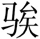
憨男子的情节 ⑨342.2。《西游记》的魔王吃童男童女 ④579.2。
西洋人用神话哄骗土人的故事 ⑦328.7。
朿 ⑧46.3。
“在珠咏隋，于璧称和” ⑧85.19。
“在德国手格盗匪数人” ③187.10，216.9。
“在上为乌鸢食，在下为蝼螘食” ⑥621.5。
“有根” ③216.7，252.20，276.7；④178.8。
有平糖 （14）351.2；（16）369.9。
“有闲阶级” ④8.8，639.2；⑧297.2；⑩159.2，318.7。
“有闲即有钱” 见“有闲阶级”。
“有厚望焉” ③335.4。
“有病之呻” ①400.5。
“有不为”斋名 ⑧436.3。
“有奶便是娘” ⑥603.4。
有齿之大鸟 ⑧23.26。
有枪阶级的打架季节 ③106.22，117.22。
“有产者差来的苏秦的游说” ④68.6，71.25。
百祀 ①36.3。
百昌 ⑧38.23。
“百行之先” ②348.14。
“百宋千元” ③50.20。
“百姓不足，君孰与足” ④337.2。
“而立” ①557.33；③59.2。
“而母婢也” ①249.10。
“存在之可能” （12）527.2。
“达恉” ④397.17。
“达我文” ⑥271.60。
“达尔文的咬狗” ④588.13。
达尔文谈人类始祖 ④587.11。
达尔文著作中译本只一种 ④227.59。
灰棚 ⑦287.4。
“灰色的勇气” （11）610.2。
列巴 （13）511.1。
列宁谈高尔基 ⑦418.3。
列宁爱看冈察洛夫的作品 ④314.28。
“列宁不消说还是过激主义哩” ①365.7。
列宁谈革命胜利后的三件事 ⑧199.7。
列宁劝青年研究普列汉诺夫著作 ④273.23。
“死公” ①249.8。
“死书” ④574.3。
“死地” ③284.3；④490.6；⑧200.12。
“死生有命” ②496.10。
“死而后已” 见“鞠躬尽瘁，死而后已”。
“死之说教者” ⑥5.7，421.9。
“死诸葛吓走生仲达” ⑥515.3。
“死抱住文学不放的人” ④454.3。
死人之力比生人大之说 ③156.14。
“死之恐怖”为古今人相同说 ④129.4。
迈尔 ⑧23.31。
成然 ①43.80。
“成人之美” ③39.9。
成仿吾评“语丝派” ⑧255.3。
成仿吾谈《阿Q正传》 ⑦86.4。
成仿吾谈创造社的功业 ④70.15。
成仿吾批评王统照的误译 ④313.23。
成仿吾谈安慰指导农工大众 ⑦212.96。
成仿吾评《呐喊》为“庸俗”之作 ②355.3；（12）482.12。
夷坚 ⑨25.1。
夷歪 （11）377.2。
夷场 ⑥117.3。
“夷狄之有君不如诸夏之无也” ④330.16。
“托尔斯小” ⑥271.60。
托尔斯泰的“矛盾” ⑩318.8。
托尔斯泰分田给农民 ⑦210.80。
托尔斯泰对艺术的定义 ④273.24。
托尔斯泰致俄国和日本皇帝信 ②320.14；⑤433.14；⑦210.80。
托洛茨基谈勃洛克 ⑦315.10。
托洛茨基谈“革命艺术” ⑦307.6。
“尧问孔子” ⑨11.3。
毕栗 （15）527.8。
“扪虱而谈”的故事 ③545.34。
“臣工” ①384.2。
“臣罪当诛兮天王圣明” ③130.15；④198.13；⑥452.16。
“至尊” （12）147.3。
至心朝礼 ②496.7。
至圣先师 见“大成至圣文宣先师”。
至纫公谊 ③455.17。
“至心归命礼，玉皇大天尊” ⑥453.22。
“过客” （11）19.1。
“过激派” 见“过激主义”。
“过激主义” ①364.2；③33.5。
“过屠门而大嚼”等语 ④423.5；⑩288.8。
过激主义的符牒 ⑩248.4。
“此生或彼生” ⑤528.2。
“此士大夫之孝也” ④588.18。
乩坛 ②86.9。
乩笔 ④48.11。
贞虫 ⑧37.12。
“师古”无用 （11）509.8。
“师严然后道尊” （11）67.1。
“光被四表格于上下” ⑤144.2。
“当面输心背面笑” ③422.10。
“当年唯恐其不起者，今日唯恐其不死” ⑤108.2。
“当我沉默着的时候，我觉得充实”等语 ②165.2；④25.4。
“吁请海内文豪，从兹多谈风月” ⑤201.1；（12）400.1。
虫二 （12）408.3。
“曲律” ①132.11。
“曲辫子” ⑤217.6。
“曲终奏雅” ⑥184.36。
吕洞宾考辨 ⑩100.27，100.28，100.29。
吕洞宾的传说 ③164.6。
吕端大事不糊涂 ③337.13。
吕不韦将孕妇送人得王位 ⑧157.3。
吕蓬尊对《鼻子》译文的意见 （13）258.1。
同门 ⑥571.23。
“同路人” ⑩357.7。
同情文学 ③584.2。
“同情”战略 ③521.2，598.7。
同人的匿名攻击 （13）344.6，450.4。
吊诡 ①61.30。
吊膀 见“吊膀子”。
“吊膀子” ①383.2；④311.12。
“吊民伐罪” ⑥129.7。
“吊膀子秘书长” ⑥105.2。
吃素谈禅 ②111.5。
吃人的筵席 ③478.5。
“吃外国火腿” ⑥133.7。
吃西瓜要想到爱国之说 ⑥626.6。
吸入器 （16）158.3。
团城 ④492.3。
团结的人们“如入无人之境” ④565.3。
“岌岌乎殆哉” ③582.3；④279.5。
回字有四种写法 ①462.5。
“回猪猡普米呀吽” ②309.20；⑤299.3；（12）148.14。
“回资啰” 见“回猪猡普米呀吽”。
回敬他一通骂街 ③223.1，254.31。
“则不得免焉” ⑤217.4。
肉苁蓉 ③358.37。
“肉食者” ⑤246.2。
“年方花信” ⑤359.5。
年红电灯 ⑤526.6。
年必逃走一次 （12）300.1。
朱宅 （15）571.4。
朱拓 ②22.7。
朱寓 （12）306.1。
朱鸟玄武 （11）434.5。
朱育造字 ⑥107.12。
朱育对王朗语 ⑩33.3。
朱熹不信《诗序》 ⑨371.32。
朱熹给官妓吃板子 ⑥213.2。
朱熹斥僧伽降伏无支祁事为俚说 ⑨92.15。
朱家骅要专心办中大的消息 （12）63.6。
朱家骅在中大位置不稳的传闻 （12）60.3，67.3。
先农坛 （15）8.5。
“先意承志” ③422.14。
“先父兄之教” ③128.4。
“先帝爷唉唉唉” ①393.6。
先祖父殿试卷 （15）23.6。
“先安内而后攘外” ④490.7；⑤129.2；⑥560.5。
“先帝爷，在白帝城” ②146.4。
“先生犯了弥天罪，罚往西洋把学流” ⑤353.4。
竹枝词 ⑤611.5；⑥111.38。
“竹林七贤” ③547.45。
竹笋能引起色情的想像之说 ⑥277.3。
伟大尊严的新期刊 ③597.2。
“伟大的作品在废纸簏里” ⑧420.4。
传 ⑤67.3。
伍相随波 ⑦162.2。
伏藏 ⑧37.6。
伏羲八卦体 ②404.22。
伏生藏《书》之说 ⑨367.7。
伏生口传《尚子》予鼂错之说 ⑨367.7，368.11。
伏地看书的好姿势 ⑥181.21。
伏羲朝小品文学家 ②404.18。
优孟 ⑩166.15。
优生学 ④218.13；⑤466.5。
“优伶蓄之” （11）627.8。
“优美的差缺” ③288.11，606.2。
“伥鬼” ②350.28；⑥303.10。
伦纪 见“伦常”。
伦常 ①146.3；②267.30；⑤81.5；⑥391.2。
伦教糕 ⑤526.3。
华工 ①364.3；③140.6；④441.5。
华盖 ③6.6。
华颠 ⑦450.2。
华严界 （11）332.17。
华伊斯奇 ①116.147。
华盖罩命 ③6.6，495.2；⑦151.2。
华惠尔论学术衰微的四个原因 ①40.47。
仿单 ①199.25。
自繇 ①106.36。
自动车 ①189.12；（11）418.4；（15）523.5。
自来火 （16）207.4。
“自求多福” ③157.18。
“自己的园地” ⑥392.8。
自由早被剥夺 ⑥507.6。
自然母的言辞 ⑩230.3。
“自然的不平等” ③580.6。
“自行失足落水” ④433.7；⑤12.2，261.3；⑥163.6。
自杀是“弱者的行为” ②496.5。
“自经于沟渎而莫之知也” ⑤510.5。
自编辞典收入自己的大名 ⑥411.7。
“自弃其先祖肆祀不答”等语 ②429.14。
自编名画集收入自己的作品 ⑥411.8。
“自我得之，自我失之，我又何恨” ③270.4。
“自由自由，天下几多罪恶假你之名以行” ⑤504.4。
伊 ①442.4；②367.3。
“伊凡” ⑥574.4。
伊甸园 ①105.27；⑩166.11。
伊日字典 （13）518.5。
伊阙石窟 ⑧78.5。
伊尹割烹要汤 ⑨32.4。
仰东石杀 （11）362.2。
《伪自由书》的出版是为了一篇“后记”之说 ⑤431.1。
血蝠 ①118.161。
血迹石 ①242.17。
“血流漂杵” ⑥16.22。
“向隅” ③366.16。
“向来不敢狂妄” ⑤233.7。
向罗马教皇诉苦 ③105.15。
“似战似和，又战又和”等语 ⑤127.7。
后 ②367.9。
“后生可畏” ⑧237.12。
“后之视今，亦犹今之视昔” ⑥412.9。
“行状” ①555.16。
行卷 ⑥339.21。
行都 ⑤35.10。
行素堂 （11）568.1。
“行年五十而知四十九年非” ①5.4。
全图 ⑧414.5。
全像 ⑦428.4。
“全部，或全无” 见“不完全则宁无”。
全国木刻展览会的天津报纸专栏 （13）358.1。
会馆 ②133.2。
会考制度 ⑤238.7。
会考复试 （11）348.3。
“会逢其适” ③402.10。
“会稽竹箭” ③358.36。
“会面不止百次” ②382.8；③401.4，521.2。
“会稽乃报仇雪耻之乡” ⑥642.2；⑧450.3；（14）25.3。
“合辙” ①243.23。
“合十赞叹”等语 ⑥604.11。
“合吾人之胃口者则容纳之”等语 ③580.7。
“杀，杀，杀！” ④10.13；（11）324.4。
“杀身成仁” ③569.7。
“杀人如草不闻声” ④68.5。
“企予望之” （11）617.1。
“众口铄金” （12）252.2。
众女嫉蛾眉 ⑦471.2。
“创作冲动” ③163.2，164.3。
“创作是处女” 见“翻译是媒婆，创作是处女”。
《创世纪》作者正误 （11）631.4。
《创造月刊》背了维尼 ④72.28。
创造社君子三人照 ①200.29。
创造社成员称鲁迅为“堂吉诃德” ⑦202.7。
创造社“出马的第一个广告” ④313.22。
“肌肉发源于手指和足趾”之说 ③19.2。
“杂文”是“古已有之” ⑥5.6。
危心 ⑧37.8。
“负弩前驱” ⑤10.3。
“负有指导青年责任的前辈” ②246.3；③261.3，495.5。
名学 ①37.18。
名教 ①367.3；⑩255.5。
“名士”脾气 ②309.21；③479.10。
“名利双收” ⑥541.3。
“名著绍介” ⑥267.21。
名人名教授 ②246.2。
名人选小说 ⑦460.5。
“名者，实之宾也” ②350.26。
“名不正则言不顺” ①553.3。
“多数主义” ①365.8。
“多乎哉不多也” ①462.6。
“多行不义，必自毙” ⑤324.10。
争存说 ④234.6。
色儿路多 ⑦28.28。
色刷木刻 （13）328.4。
“色借日月借烛借……”的标点 ⑤616.2。
庄周梦变蝴蝶 ②496.11；④588.16。
庄子死后被劈棺的故事 ⑤350.3。
庄子轻视有是非的言行 ⑥311.13。
“齐谐” ⑥336.4；⑨25.1。
齐东野语 （11）85.2；（14）76.3。
“齐天大圣”系渔人之子说 ⑩72.8。
“齐天大圣”翻不出如来佛手心 （13）307.2。
齐燮元“放下枪枝拿起笔干” ③191.5。
刘勰谈《离骚》 ⑨391.11。
刘勰的“三才”之说 ⑨358.14。
刘勰论作者的才能 ①107.41。
刘勰梦随孔子之说 ⑤329.2。
刘勰关于人禀五才的话 ①110.79。
刘老老骂山门 ⑤126.2。
刘伯温卜烧饼 （11）68.12。
刘大将军摆“夜壶阵” ⑩434.3。
刘□系“刘玄明”之说 ⑧85.16。
刘百昭居然做骈文 ③216.9。
刘百昭诡称家藏公款被劫 ③206.17。
刘媪得交龙而孕季 ⑨26.3。
刘大杰误点明人小品 ⑥153.6，166.2，307.3。
刘半农自认“没落”的话 ⑤567.15。
刘半农嘲笑欧化句法 ⑥285.5。
刘半农自称“喜为打油之诗” ⑤566.4。
刘半农做打油诗弄烂古文 ⑥77.12。
刘伶裸形见客的故事 ①198.11；③549.52。
刘易士被打了一个嘴巴 ⑧369.6。
刘时中讽刺暴发户的曲子 ①250.13。
刘知几谈《晋书》多取《幽明录》 ⑨54.18。
刘信抛痴儿入火盆的故事 ①256.11。
刘和珍等驳斥薛燮元公开信 （11）39.2。
刘歆向扬雄借《方言》手稿的故事 ⑥109.25。
“交臂失之” ③207.20。
“衣食足而知礼节” ②111.9。
“妄有主张” ③215.3。
“妄谈法理” ①361.2。
“闭门投辖” ⑥182.23。
“问名” ②248.16。
“灯火倍可亲” ⑧420.3。
羊肚 （14）137.1。
羊衒之轻视南人的话 ⑤458.3。
“并云古诗，盖不知作者”等语 ⑨418.22。
关关雎鸠 ⑧236.8。
“《关雎》之次章” （11）390.6。
《关于红笑》的争执 （13）302.1。
关于种胡麻的话 （12）67.1。
“关东觥觥郭子横” ⑥396.4；⑨42.8。
“关外战事不日将发生” ③216.8。
米巫题字 ④47.9。
米点山水 ⑥26.6。
汗不敢出 ③582.4。
汗牛充栋 ⑥234.7；⑩167.22。
江北人 ⑤524.3。
江瑶柱 （11）257.1。
江亢虎误谈“德”的古字 ⑥377.5。
江震亚谈学者教授的文章不该署名 ③19.1。
兴行场 ⑥18.34。
“兴矣摩迦人” ①119.171。
汲古阁 ②111.6。
“汲汲乎殆哉” 见“岌岌乎殆哉”。
“汝旅人兮，我从国法而战死”等语 ⑦19.18。
汤尔和诬蔑爱国学生的话 ③117.26。
汤增敭攻击曾今可的启事 （12）416.2。
“汤汤洪水方割，浩浩怀山襄陵” ②401.2。
“宇宙之大，苍蝇之微，皆可取材” ⑥234.10。
“安内与攘外” 见“先安内而后攘外”。
“安那其主义者” ⑥564.31。
安冈秀夫污蔑中国“淫风炽盛” ②309.15。
冰糖壶卢 ②175.3。
军国民主义 ①283.3。
“军事裁判”的暗示 ⑤432.6；（13）40.5，135.7。
军人骑在马上的封面画 ③511.8；（12）77.2。
许褚赤膊上阵 ③300.6；（13）409.1。
许寿裳谈佛教救国 （14）154.1。
许敬宗观操练的故事 ⑧230.5。
许崇清留任教育厅长的消息 （12）60.2。
讽刺已是前世纪的老人的梦呓 ⑤211.5。
农业救国论 ③319.11。
农事试验场 （15）225.1。
设译社 （13）277.4。
“那摩温” ⑥371.9。
“异端” ③229.2。
“导” ②405.30。
“尽忠报国” ⑤63.5。
阮籍不愿儿子效己 ③551.63。
阮籍借醉辞婚的故事 ③549.54。
阮籍求为步兵校尉的故事 ⑥178.4。
阮籍遇“穷途”大哭而回的故事 （11）17.3。
阳宅先生 ②86.6。
“收之桑榆” ③192.8；（12）290.2。
“收买废铜烂铁” ④146.13。
阴沉木 ⑤113.3。
“阴阳脸” ④125.12。
阴阳五行 ①332.10。
“阴险的暗示” ②248.17。
“如夫人” ①199.26；⑦233.7。
如律令 ②496.9。
“如苍生何” ③205.10。
“如鱼饮水，冷暖自知” ①310.6；（13）198.3。
“如能得到你的助力”等语 ⑧178.5。
“如自谓老人，是精神的堕落”等语 ②382.8。
“如含攻讦个人或团体性质者恕不揭载” ⑤62.2。
“妇者服也” ①133.15。
“妇姑勃谿” ①147.14；③78.11；（11）103.1。
“妇人弱也，而为母则强” （11）367.4。
“妇女园地”的征稿启事 （13）25.6。
“妃红俪白” ③77.3。
“她”字和“牠”字的创造 ⑥76.7。
“好人政府” ④230.5，249.1；⑤71.5，330.9。
“好杜有图” ②403.9。
“好事之徒” （11）161.5。
“好白相来希” ⑤206.2。
“好政府主义” 见“好人政府”。
“好读书不求甚解” ⑤161.5。
“戏剧年鉴” ⑤614.6。
戏场失火丑角打诨的故事 ⑤290.2。
观古堂 ⑩135.36。
观音手 ①511.5。
“欢” ⑦160.3。
“买办意识” ⑥153.12；（13）376.3。
买一本好字典 ③146.8。
“买办”的白话文 ⑤546.2。
红豆 ⑧539.6。
红毛书 （11）403.8。
红绿帖 ②159.9。
红头阿三 ⑤145.9。
红 字旗 ③311.4。
字旗 ③311.4。
红背心 （13）88.1。
红旗勋章 ⑩418.34。
《红楼梦》是作者自传说 ⑥542.9。
《红楼梦》命意的各种说法 ⑧180.3；⑨247.2。
纣王砍脚剖心的故事 ②427.6。
“纣虽不善，不如是之甚也” ③358.35。
纤儿 ⑩166.16。
纪昀指责《聊斋志异》 ④27.18；⑨226.20。
纪昀谈简质的文风 ⑨226.20。
纪昀排击道学先生 ⑥61.12。
纪昀以“浑良夫梦中之噪”解嘲 ④27.19。
孙陵 ④363.8。
孙中山谈邹容 ④132.7。
孙中山逝世后出现的风凉话 ⑦306.2。
孙中山不服中药之类的新闻琐载 ⑦307.5。
孙伏园谈雷峰塔 ⑦244.2。
孙伏园谈鲁迅反对将自己的小说做教科书 ③253.26。
孙福熙称颂林风眠 （12）113.3。
孙传芳禁止裸体模特儿 ②331.24；③356.19。
孙悟空由印度传来之说 ⑨328.2。
孙行者和二郎神斗法的故事 ⑤493.5。
“约翰” ①178.6。
巡抚 ②328.3。
七画
“寿终正寝” ③70.14。
麦考莱评拜伦 ①110.78。
玛察评格罗斯 ④158.6。
形上 ⑧38.18。
形义学 （11）79.2。
形气学 ①60.21。
“进学” ①462.4；④244.12。
进化论 ①421.9；③156.15。
“进退维谷” ⑧391.10。
“进步的青年” ④190.7。
“进研究室”主义 ①220.11；③30.15，464.10；⑩305.2。
“进研究室”问题的异议 ⑩305.3。
“远人” ⑤146.11。
“远览马《史》班《书》，近观王阮《志》《录》” ⑥337.6。
“攻周专号” ③261.2。
赤练蛇 ②175.4。
“孝子” ⑤196.28；⑥416.6。
孝廉 ⑩16.4。
孝光两朝 ①159.8。
孝悌力田 ①147.17。
孝堂山祠 （13）30.11。
孝廉方正 ①147.17；④51.6。
孝子“割股”的笑话 ⑥372.21。
“坟” ②199.3。
志石 ⑤486.11。
志神怪者十五家 ⑨15.29。
“声明误会，表示歉意” ⑤362.5。
劫波 ⑦158.5。
苇 ⑧22.21。
邯郸学步 ⑦412.3。
“花边” ⑤440.6。
花纸 ④529.6。
花信 ⑤359.5。
花调 （15）253.4。
花旗 ④524.12。
花爆 ⑤464.5。
花绿头 ⑥201.25。
花旗国 ④423.8；⑥372.15。
花旗白面 ④524.12。
“花之富贵者也” ①249.7。
芹子 ⑩91.12。
芹茂穉香 ⑧535.12。
《芥子园画谱三集》广告的自夸 ⑧422.2。
芬涅 ⑩288.11。
芬芳□□ ⑩53.5。
苍颉造字夜有鬼哭 ①220.15；②405.23。
“严正态度” ④227.61。
严复“做”《天演论》 ①313.3。
严复关于儿童命运的话 ①313.2。
“严禁转载”的告白 （13）538.1。
“严饬所部切勿越界一步” ⑤67.5。
“严防反动分子乘机捣乱” ⑤136.4，464.4。
苎麻丝 ②112.13。
芦 （12）285.2。
劳什子 ②452.7；⑦368.2。
“劳心者治人，劳力者治于人” ⑤541.6。
苏木汁 ④28.21。
苏州俏 ②75.5。
苏李别诗 ⑨429.26。
苏联书画 （12）300.7，473.7；（13）220.1。
苏联木刻家传略材料 （12）474.8，494.1。
苏联排演莎士比亚剧的“丑态” ⑤601.2；⑥128.5。
苏汶为自己吹嘘 ⑤493.3，614.6。
苏汶反对文人用化名 ⑤493.6。
苏汶攻击杂文 ⑥4.4。
苏汶谈“不敢动笔” ④455.6。
苏汶谈作家被迫“搁笔” ⑤195.24，503.3，614.8；⑥163.7。
苏汶谈莎士比亚剧中的群众 ②405.29；⑤590.5，602.5；⑧429.4。
苏汶讥讽梅兰芳的莫斯科之行 ⑤613.4。
苏汶谈连环图画等不能产生好作品 ④455.9。
苏汶谈被指为“资产阶级走狗”的预感 ④455.4。
苏汶讥讽左翼作家从资本家取得稿费 ④455.8。
苏汶讥讽左翼作家的“偏见”还没有克服好 ④455.7。
苏东坡要客谈鬼的故事 ⑤63.6；⑥183.33；⑨224.4。
苏秦张仪共师鬼谷子的传说 ③117.20。
芧食 ①64.50。
克尔格司管 ⑦29.38。
“克鲁屁特金” ⑥271.60。
克鲁泡特金的照片被弄掉 ①421.7。
杜鹃 ②183.3；⑦463.4，473.3。
巫蛊 ⑨369.15。
“极峰” ①220.10。
“杞天之虑” 见“心上有杞天之虑”。
“杨妃红” ⑦33.2。
“杨家女” ⑥644.13。
杨家将 （11）82.3。
杨妃乱唐 ⑥210.9。
杨朱无书 ③558.6。
“杨树达”事件 （11）455.3。
杨邨人的“自白” ④649.10；⑤401.4。
杨邨人误认徐诗荃文章为鲁迅所作 （13）58.1。
杨邨人诬鲁迅领国民党奖金开汤饼会 ④649.11。
杨府录事李公佐事 ⑩114.3。
杨振声谈《玉君》的修改 ⑥267.19。
杨荫榆以聘职收买师生 （11）13.1。
杨荫榆诋毁学生的“品性” ⑧171.9。
杨荫榆攻击七教员宣言 ⑦303.6。
杨荫榆请警厅派警的信 ⑦303.7。
杨荫榆向学生家长发启事 ⑦303.4。
杨荫榆策划女师大提前放假 ⑧171.8。
杨荫榆的女师大招生广告 （11）98.1。
杨慎伪作《杂事秘辛》之说 ⑨44.20。
李“天才” （13）545.4。
李娥投炉 ②348.9；（12）136.3，137.1。
李徵及第考 ⑩91.11。
李徵化虎的故事 ⑨213.10；⑩91.11。
李桦拟办画展 （13）328.3。
李逵劫法场的故事 ④161.9。
李慈铭攻击赵之谦 ⑤265.4。
李霁野建议写鲁迅传 （14）96.1。
李景林谈他“卷土重来” ③225.10。
李世民射杀建成元吉事 ⑥452.15；⑨166.5。
李鸿章侄是日本驸马之说 ④612.6。
李文范接任民政厅长之红示 （12）60.2。
李四光比女师大风潮为“文明戏” ③127.3。
李四光对京师图书馆副馆长月薪的说明 ③252.23。
李初梨讥鲁迅被板斧劈着“记忆中枢” ④71.20。
李初梨谈参加无产阶级文学要“审察动机” ④70.16。
“更于没字处求之”等语 ⑨288.5。
“束发小生” ①267.7；③118.28，208.26，229.6。
“吾家rky” ③11.5。
“吾家”彦弟 ⑧477.3。
“吾未如之何也矣” ⑧307.9。
豆工 （11）158.2。
两仪 ②87.12。
“两脚羊” ⑤216.3。
“两耳垂肩” ⑤63.3。
两江总督 ②311.40。
两面脱柄 （12）355.4。
两位漂亮太太 ⑩456.3。
两大古文明国的艺术家握手 ⑦78.2。
辰江谈鲁迅在香港的演讲 ③453.3。
“否则要此膝何用” ③20.5。
“否定的否定”等语 ④70.15。
“还我头来” ④102.4。
来孙 ③355.10。
“来者犹可追” ⑩319.17。
“来笃话啥西”等语 ②467.21。
扶乩 ①358.2；②86.9；③33.3；⑥85.2。
扶桑 ⑤60.9；⑦454.2；（12）256.8。
轩辕氏戡蚩尤 ①58.2；⑧39.31。
“抚哭叛徒的吊客” ③480.16。
抟埴 ①20.19。
连弩 ②482.15。
批评与漫骂 ③146.6。
批评家好“漫骂” ⑤452.2。
批评“打拳热”的文章 ⑧273.2。
“批评工作的开始”等语 ⑧190.3。
“批评家的圈子”的议论 ⑤450.2，493.2。
“批评都本于学理和事实”等语 ③183.16，251.11。
抄更纸 （12）499.1。
“医者，意也” ②299.5。
折冲樽俎 ⑤365.8；（13）277.6。
扮演的函件 ⑩289.16。
投壶 ③382.4；⑤567.13；⑥332.22，571.18；（12）406.8。
“投石下井” ①296.18。
投我琼瑶 （12）413.2。
“投畀有北” ③183.18。
“投畀豺虎” ③181.8，183.18，219.22。
“投降”之说 ④226.52，478.18；⑩345.22。
“投笔从戎” ④604.2。
投诸四裔 ③479.9。
投梭之拒 ⑦19.28。
“投降南京”的谣言 ⑥564.29；（14）10.6。
“抗日英雄” ④605.8。
护心镜 ②220.3。
护国寺 （15）372.1。
护教团 （12）349.3。
把总 ①558.46。
“把知识阶级打倒以后”等语 ⑦114.3。
报以数鞭 （14）170.1。
拟古新打油诗 ②174.2。
求神拜佛 ⑥123.3。
“求仁得仁又何怨” ①297.25。
“求仕不获无足悲”等语 ⑤393.4。
步 ⑧23.32。
“步步生莲花” （11）168.3。
卤簿 ②283.3。
“坚壁清野” ①275.2。
县圃 ②3.1。
吴钩 ⑧535.9。
“吴均体” ⑨55.22。
“吴兴才人” ⑨82.18。
吴稚晖的“献策” ⑥569.12。
吴稚晖谈“抗日” ⑤133.3。
吴稚晖大战蔡钧 ③229.7；⑥580.7。
吴稚晖发起“清党” ③480.17，569.5；⑤126.4。
吴稚晖为“献策”事辨解 ⑥581.9。
吴稚晖谈不打死老虎 ①294.5。
吴佩孚入京的报导 ③338.22。
吴佩孚“登彼西山赋彼其诗” ③191.4。
吴谦被误作鲁迅笔名 （13）151.5。
吴三桂等配享太庙之说 ⑥651.3。
吴均撰《齐春秋》失实免职 ⑨55.21。
吴宓反对文学写下流社会 ①243.24；③443.6；④477.12。
时宪书 ①212.8。
“时代错误” ④119.4。
时轮金刚法会 ⑤476.2，506.4；⑥54.8，123.3；⑦473.2。
《时报》的讽刺画 ①310.5。
“时日曷丧，予及汝偕亡” ①231.12；⑤473.4。
“时期性”和“时候性”之说 ⑥562.19。
《时事新报》对鲁迅的谩骂 ①146.5。
里低母斯 ⑧529.4。
吠陁 ⑧38.19。
旷野将军的品级 ⑧78.4。
“男女之大防” ①556.31。
“男女授受不亲” ①276.10，428.5；③33.4。
“男女七岁不同席” ⑤572.2。
“男女骨数不同”之说 ③19.3。
男秉乾刚，女占坤顺 ④56.7。
“足证华人传统的不感觉苦痛性” ④516.5。
《呐喊》“由令弟编了出来”等语 ④115.11。
“员外”说 ⑤192.1。
员峤真逸题字 ⑧67.9。
“听其自然” ②349.25；（11）274.1；（12）212.2。
“听候开审” ②403.13；（11）7.11。
“听候法律解决 见“听候开审”。
“听其言而观其行” ⑤247.3。
“吹箫不用竹，一箭贯当胸” ⑤251.13。
“呜呼哀哉，尚飨” ⑤567.14。
邑犬 ①284.9。
别及不兰 ⑦27.12。
别字问题的议论 ⑥293.2。
别一种维持治安法 ④164.5。
别人批评是报私仇之说 ⑧394.4。
岐黄 ②300.9；⑥377.7。
帐构铜 ⑧88.7。
删节Hugo文的案语 （12）53.5。
删去的几篇讲演 ⑦7.10。
钊 ③69.6。
告帮 ②482.19。
“乱党” ③287.5。
“乱之上也，治之下也” ⑧39.33。
“乱离人不及太平犬” ①230.5；⑤522.7。
利屣 ④523.3。
秀才 ①462.4，554.12；③115.6。
秀才科 ⑩119.38。
“秀才皆是讨债者” ⑧222.2。
私门子 （13）40.2。
私窝子 ①339.3。
“私禀执政” ⑦101.3。
吞藤黄 （11）494.2。
我侭 （11）421.3。
“我大清” ⑥144.7。
“我生不辰” ③48.8。
我家姑奶奶 （13）526.2。
“我爱血写的书” ④25.6，577.2。
“我不生气”的文章 ④253.3。
“我生不有命在天” ③270.5。
“我幸而没有女儿” ⑦97.8。
《我的失恋》的纠纷 ⑦287.3。
“我的朋友胡适之” ⑧374.2。
我们有好几种杂志 ④244.9。
“我穿的也是外国服” ⑤480.3。
“我手执钢鞭将你打” ①557.35。
我在留学时登过几篇文章 ⑦88.16。
我曾经弄过几个文学团体 ④244.10。
我真不能不叹人心之死尽矣 ⑧190.8。
“我们思想上的差异本来很甚”等语 ⑧178.5。
“我有一匹好东绢，请君放笔为直干” ⑦337.7。
“我即以其人之道反诸其人之身”等语 ②382.8；⑧178.9。
“每下愈况” ①267.5；③121.5，318.5。
每斤八文的孩子 ①231.21。
兵阴阳家 ⑨32.6。
“何必改作” ③366.17。
《何典》的广告 ③324.8。
《何典》标点本的空格 ⑦309.4。
何家槐偷稿事 见“何徐创作问题之争”。
何家槐引鲁迅语谈“联合战线” ⑥560.7。
何家槐谈林语堂同情“联合战线” （14）9.3。
何晏服药的故事 ③545.32。
何晏搽粉的故事 ③545.31。
“何以解忧？惟有杜康” ③544.27。
何徐创作问题之争 （13）76.2，107.13。
何曾劝司马昭杀阮籍 ③550.61。
“何物老妪，生此宁馨儿” （11）68.11。
“何立从东来，我向西方走” ④504.13。
“何所闻而来，何所见而去” ⑤501.6；⑥349.5。
何键反对课本中写动物说人话 ④296.6；⑧355.9。
体元表正 ⑥183.29。
佐藤屋 ②319.8。
“作俑” ⑤282.5。
“作之师” ③169.4。
作法求雨 ⑤573.7；⑥105.2。
“作善降祥” ①256.9；（11）255.2。
作壁上观 （11）29.2。
作者姓氏一大篇 ④587.8；（13）94.4。
《作家》目录上的作家小像 （14）53.1。
伯夷叔齐扣马而谏的故事 ⑥16.21。
伯夷叔齐饿死首阳山的故事 ②431.31。
“低徊趣味” ⑩244.5。
“你悔改吧” ⑤433.16。
“你们已经走了从虫豸到人的路”等语 ⑥266.8。
“身心交病” ③501.3，521.2；④115.15。
“身败名裂” ④635.5。
“身在江湖，心存魏阙” ⑦406.3；（12）481.7。
“身后名，不如即时一杯酒” （11）209.1。
“身体发肤受之父母不敢废伤” ③56.5；⑥281.4。
佛陀 ④461.7；⑤355.3。
佛戾 ①59.14。
伽蓝 ②192.4；④135.2。
近古代 ①23.51。
“近视眼看匾” ④89.2；⑦203.16。
“近取诸身，远取诸物” ⑥107.14。
“役夫” ①249.8。
返顾高丘，哀其无女 ①106.38；⑧43.13。
余姚农民迎神求雨 ⑤577.2。
余姚徐某被咬死事 ⑤578.6。
余赵剪窃问题之争 ⑤308.3；（12）423.2。
希特拉 ①23.50。
希特勒谈“权威” ⑤304.2。
希特勒生平勋业的书籍 ⑦426.8。
希腊教徒诅咒托尔斯泰 ⑤433.14。
“坐化” ④504.13。
坐驰 ⑦136.3。
坐馆 ③78.8。
“坐不改名，行不改姓” ⑤258.8。
豸 （15）305.2。
“含电人参胶” ⑤29.2。
“含泪的微笑” ⑥384.2。
“邻猫生子” ③205.9；（13）69.5。
彤弓彤矢 ②382.6。
角黍 （15）119.5。
劬古 ③49.14。
“狂吠” ④605.7。
“狂言” ⑦203.17。
“犹河汉而无极也” ①249.3。
犹太学校要学生行磕头礼 ③49.17。
“狄克推多” （12）53.5。
狄思威路的存书室 （12）464.6。
迎神赛会 ①353.3，555.22；②273.2；⑥14.8。
“迎头赶上” ⑤67.2。
鸠 ⑦157.2。
“饮河不过满腹” ⑩236.2。
言筌 ④609.7。
“言行一致”（陈西滢语） ②266.15。
“言行一致”（施蛰存语） ⑥202.33，411.6。
“言词争执” ⑦402.2。
“言语道断” ③284.2；（12）401.1。
“言者心声也” ①103.4；②264.6。
“言论自由”的通电 （13）299.7。
库券 （12）22.7；（16）7.21。
“应声虫” ①320.13。
庇波地 ⑩173.7。
“这里的广告都是批评” ⑧189.2。
“弃文就武” ⑧426.3。
“忘八” ②405.26；④524.14。
忘忧馆作赋 ⑨416.13。
怀沙自沉 （11）96.2。
“怀铅提椠”搜求方言的故事 ④94.9。
“闲适” ⑤500.3；（13）94.3。
《闲话》的广告 （12）71.9。
《炀帝海山记》题下小注 ⑩145.7。
状元 ①255.4，355.3，555.19。
冷色 （12）378.2。
“冷一冷” （11）89.7。
冷板凳 ③78.9。
“汪踦卫国” ⑤470.5。
汪原放先生“已作古人”案 ③250.8。
汪懋祖的“相煎益急”之说 ③93.3。
汪懋祖致“全国教育界”意见书 （11）86.4。
沙龙 ⑧357.5。
沙袋 ⑥370.4。
汽车 ①189.12；（15）522.1。
泛斯拉夫主义 ⑧39.38。
没药 ②180.4。
“没落” ⑤204.2。
“没出色” （11）653.2。
“没落者” ④8.8。
“没有花，没有诗” ③215.4。
没有“孤独”感觉 （13）257.4。
“没齿而无怨言” ③284.4。
没有敢讲共产党话的勇气 ④197.7。
“没有谈及革命对不起读者”的“附白” ③511.11。
汶汶乡 ②453.14。
沪北小阁 ⑩346.25。
“沉默，金也” ⑧420.8。
“沉自己的船” ⑥269.40。
“沉钟”的故事 ⑥270.44。
沈雁冰批评威纳的《中国神话与传说》 （11）465.4。
“完泽笃” ①132.11。
宋人语录 （13）94.2。
宋的院画 ⑥26.5。
宋代“合生” ①160.14。
宋人印行的丛书 ⑥239.2。
“宋玉含才，始造‘对问’” ⑨393.25。
宋太祖添造《推背图》 ⑤99.6。
宋重理学而有高帽破靴 ③225.4。
“宋江没有受招安平方腊”说 ⑨157.19。
穷奇 ②430.22；（11）338.3。
“穷人哲学” ⑤466.3。
“穷愁著书” ③77.2。
“穷工巧于台榭兮，民露处而寝湿” ⑥450.4。
社戏 ①598.6。
社稷 ①376.4。
《社会日报》对鲁迅答徐懋庸信的议论 （14）134.7。
启节 ②403.15。
启罗 （12）328.4。
启罗格兰 ⑦28.23。
启事文章可使仇头落地的奇想 ⑤255.7。
补苴 （11）196.3。
“识荆” ①199.24。
识玄冬于瓶水 ⑧371.5。
词的解放 ⑤59.2，193.11，232.4。
“良友文学奖金” （14）115.3。
译媎 （11）406.18。
译须信雅达，文必夏殷周 ④395.5。
“君子固穷” ①462.3。
“君车”残石 （13）151.2。
“君子远庖厨” ④537.13；⑤53.8；⑥181.20。
“君子死，冠不免” ⑥332.17。
君政复古时代 ①131.7。
“君子忧道不忧贫” ③39.8。
“君子务其大者远者” ⑤299.7。
“君子劳心，小人劳力” ①219.6。
“君子中庸，小人反中庸” ⑤94.11。
“君子为猿鹤，小人为虫沙” ④565.4。
“君王城上竖降旗，妾在深闺那得知” ⑤448.8。
灵长 ①18.10。
灵台 ①107.47；⑦447.2；⑧40.41。
灵琐 ②3.1。
灵粮 ①39.37。
“灵魂照相” （11）361.4。
“灵魂的战士” ⑦211.81。
“灵魂的冒险” ②355.3；③146.6；⑩279.2。
“即以其人之道，还治其人之身” ①297.23；④164.3；⑥310.6；（11）104.1。
“屁塞” ②158.6。
局脊 ①23.45。
改“遇故”为“射雁” ⑧161.3。
改“越”为“粤”，尤近自扰 ⑩149.2。
张园 ④588.15。
张飞鸟 ②291.3。
张角兽 ⑧23.29。
张睢阳庙 ⑦233.9。
张慧冲谈义军 ⑤68.8。
张天师作法求雨 ⑤578.4；（13）204.4。
张孟闻指责鲁迅 （12）142.1。
张资平攻击《拓荒者》 ④236.2。
张俊被咬死的故事 ⑤578.7。
张献忠祭梓潼神文 ⑥184.38。
张献忠剥人皮的传说 ④601.4。
张献忠考秀才的传说 ⑤450.3。
张顺水淹李逵的故事 ⑦7.13。
张崧年引“罗素之所信” ③130.13。
张若谷谈他讽刺萧伯纳 ④512.9。
张霸伪造古文《尚书》之说 ⑨369.16。
张广定置女于古冢的故事 ⑨43.15。
张歆海见美国兵打中国车夫巡警 ③133.2。
陆王 ⑨262.7。
“陆稿荐” ④87.10。
陆黄恋爱 （12）256.3。
“陆绩怀橘” ②266.20。
陆机荐贺循 ⑩45.2。
阿屯 ⑧22.17。
阿拉 ⑦399.4。
阿堵 ⑧535.5。
阿鼻 ⑧20.5；（11）339.9。
“阿木林” ⑤217.6；⑥392.6；（12）124.4。
“阿其那” ⑤216.2。
阿房宫 ⑥15.12；⑧165.7。
阿弥巴 ①23.47。
阿伽陀药 ⑦104.8。
“阿狗阿猫” ④226.55，234.8，247.2。
“阿尔特肤尔” ②57.6。
阿纯发生机 （16）624.5。
阿强陀石窟 ④461.5。
《阿Q正传》“讽刺”说 ⑦86.5。
《阿Q正传》“病态”说 ⑦86.5。
《阿Q正传》“滑稽”说 ⑦86.5。
《阿Q正传》使人疑惧之说 ③402.7。
“阿哥，你不要再做文章得罪人家了” ③215.5。
陈死人 ②165.4。
陈涉帛书 ④47.8。
陈同福的自杀 ⑤509.3。
陈源的“怀疑” ③90.6。
陈源谈《玉君》 ③357.28。
陈源的批评法 见“陈源称赞鲁迅小说攻击鲁迅杂文”。
陈源以左拉自况 ③217.15。
陈源诬鲁迅“剽窃” ③254.31；⑥479.5；⑩71.3。
陈源给岂明的信 ③250.4。
陈源谈“不管闲事” ③203.3。
陈源一再谈法朗士 ③367.23。
陈源评七教员宣言 ③85.8，166.18；（11）82.1。
陈源谈“多数”与“少数” ③183.15，186.3，187.8。
陈源关于“完人”的议论 ③173.8。
陈源教授的一顿“教训” ③257.50。
陈源比爱国群众为“拳匪” ③134.3。
陈源到南京活动的消息 （12）57.5。
陈源称颂吴稚晖读古书 ③229.5。
陈源以谈威尔士等自炫 ③367.22。
陈源以读过莎士比亚自炫 ③6.10。
陈源以访问过萧伯纳自炫 ③261.4，367.22。
陈源对陈大悲翻译的批评 ③455.15。
陈源谈走“狭窄险阻的小路” ②284.16。
陈源谈著作权和创作动机 ③163.2。
陈源谈塞万提斯“像叫化子” ③255.39，306.3。
陈源为凌叔华抄袭行为辩解 ③255.40。
陈源谈中国重女轻男的“闲话” ③129.8。
陈源颂扬芮恩施所办图书馆 ③207.21。
陈源称女师大强占女大校舍 ①297.27；③173.10。
陈独秀谈《域外小说集》重印条件 ⑩179.3。
陈源引张歆海语攻击五卅运动 ③133.2。
陈源称杨德群不愿参加群众运动 ③311.5。
陈源为《现代评论》收受津贴事辩解 ③280.4。
陈源讥讽进步人士安居东交民巷 ③607.10。
陈源称赞鲁迅小说攻击鲁迅杂文 ②264.7；③306.2；④114.8，279.4。
陈源对梁启超的开刀医生的嘲讽③336.7。
陈源挖苦“思想界的权威者”的名称 ③472.16。
陈源对三一八惨案死难者的诬蔑 ④490.6；⑧200.12。
陈源把章士钊、杨荫榆比做特莱孚斯 ③217.15。
陈源谈章士钊下台后《甲寅》有了生气 ③230.11，281.5。
陈源谈章士钊家藏社会主义德文书甚多 ③206.16。
陈源谈章士钊想到学者应有固定收入 ③207.24。
陈源称徐志摩有中国文学不曾有过的风格 ③276.8。
“陈叔宝全无心肝” ②348.13；⑤49.5。
陈子英登报招寻鲁迅 （12）286.2。
陈济棠提议恢复关岳祀典 ⑤530.4。
陀思妥耶夫斯基赌博的事 ⑤365.5。
陀思妥耶夫斯基谈自己的创作 ⑦109.3。
妓家故事题材的小说 ⑨275.4。
妙峰山香市 （11）292.4。
“努力表现自己” ④71.22。
邵洵美攻击杂文 ⑥4.1。
邵诗人贬落黑诗人 ⑤432.8。
邵洵美骂《北平笺谱》 ⑦442.16；（13）8.3。
邵飘萍为《〈莽原〉出版预告》加案语 （11）56.2。
鸡虫 ⑦450.2。
鸡肋 ④105.2；（12）144.5。
“鸡头肉” ③491.7。
鸡犬飞升 ④236.4，637.3；⑥162.2。
鸡鸣风雨 ⑦474.5。
鸡汤代猪肉 ⑦460.4。
纬书 ⑨367.4。
“纯文艺”的思潮 ③30.15。
“纳采” ②248.16。
纳款 ⑥620.3。
纵横家 （11）349.5。
“纵令有时用其他笔名，均自负
责” ⑤258.8。
纸钱 ①472.5。
纸锭 ①472.5；②283.7。
“纸糊的假冠” ③411.6，471.7；④38.13；⑥643.7；⑧178.7；（11）218.2，623.2。
八画
“奉母命权作道场” ①283.4。
环亚林 ⑩386.21。
环境说 ④257.5。
“玩笑玩笑” ⑥282.6；⑧437.3。
武 ⑧46.5。
武怒 ①105.19。
武士道 ④536.2；⑧105.7；⑩255.4。
武英殿 （15）243.1。
武氏石室 见“汉武梁祠石刻画像”。
武则天造字 ⑥107.12。
武梁祠画象 见“汉武梁祠石刻画像”。
“武装保护苏联” ④254.5。
武官们开的书店 ⑤433.12。
武学家的笑迷迷的期刊 ④72.30。
武官屈打说书人的故事 ④315.34。
武者君关于“糖衣的毒刺”的话 ③68.2。
青蚨 ⑤213.4。
青眼 见“青白眼”。
青白眼 ②87.11；③548.49；⑦450.2。
青酸钾 ①582.5。
“青年必读书” ③191.2；⑦261.2。
“青年指导者” 见“负有指导青年责任的前辈”。
“《青史》由缀于街谈” ⑨32.5。
青年作者出风头 ③147.9。
“青年必读书“启事 ③12.1。
“青年叛徒的领袖” ③496.6；④59.3。
现任的皇宫 （13）545.6。
“现代评论主角” ③479.15；④197.11。
《现代评论》代售处 ③598.11。
《现代评论》改变论调 ⑧200.11。
《现代评论》收受官僚津贴 ③165.16，280.4，515.5。
《现代评论》讨得银行广告费 ③165.16。
《现代评论》赞颂国民政府的广告 ③608.14。
《现代评论》积压周建人等答辩文章 ⑦82.5。
现行教育制度是农村破产的主要原因说 ⑤237.4。
“责备贤者” 见“《春秋》责备贤者”。
“表现自我” 见“努力表现自己”
“表彰节烈” ①131.6。
《表》将编为电影的报导 （13）442.2。
规那丸 （15）85.4。
盂兰盆 ②309.17；⑤299.4；⑥603.3；（11）30.13。
“取乱侮亡” ⑩274.16。
“取纯火精以协其数” ⑧88.6。
耶和华 ①120.180。
耶耶乎 ⑦399.3。
耶彼第之语 ①110.84。
耶稣被钉十字架 ①385.4；②179.3。
耶稣临死前的呼喊 ②180.6。
耶稣被辱骂讥诮的故事 ②180.5。
坦波林 ⑩525.1。
坤之剥 ⑩98.13。
坡罗尼恩 ⑦27.14。
“其妙”在此 （11）509.5。
“其州在尾上” ④38.8。
“其功德不在禹下” ⑤273.8。
“昔之说《书》者序以百” ⑨368.12。
“昔人已乘黄鹤去，此地空余黄鹤楼” ⑤455.6。
“若杀其父兄” ①284.7。
“若敖之鬼馁而” ①556.28。
“若大旱之望云霓” （11）51.5。
“若药弗瞑眩厥疾弗瘳” ⑩259.5。
“若要官，杀人放火受招安” ⑤455.5；⑥297.4。
茇 ①60.17。
茂才 ①554.12。
英洋 见“鹰洋”。
“英文标点” ①415.5。
“英吉之利” ①400.5。
英雄们杀我祭旗 （14）118.4。
英字新闻对萧伯纳的报导 ④513.11。
英国主人主张给甘地吃鞭子 ④588.17。
苟余情之洵芳 （11）339.11。
“苟延性命于乱世” ⑤106.5。
“直接行动”等语 ④68.6。
“直言曰言，论难曰语” ⑨358.13。
“直接或间接用苏俄的金钱” ③312.6；④490.6；⑤155.2。
范丹饭后投钱的故事 ③541.12。
茄门 ④356.7；⑥372.15；（14）127.3。
“茅盾被捕”的谣传 （12）429.3。
苺 （15）119.6。
“林”兄 （11）600.2。
林语堂的“启事” （12）63.5。
林语堂讲“潇洒” ⑥281.3。
林庚白来信谩骂 （16）166.8。
林语堂首译“幽默” ⑩303.2。
林语堂提倡“幽默” ④587.5；⑤362.2。
林语堂错点古文 ⑥349.2。
林语堂与《人言》之争 （13）107.12，135.5。
林语堂谈“西崽口吻” ⑥371.8。
林语堂推崇袁中郎 ⑤500.5。
林纾骂“铲伦常”的言论 ①145.2；⑧107.2。
林语堂称赞《野叟曝言》 ⑥281.2。
林语堂谈不打落水狗 ①294.5。
林语堂推荐廿种书目 （13）378.1。
林语堂提倡“费厄泼赖” ①293.2；④586.4；⑥214.4。
林语堂为洁身自好者辩 ⑤488.4。
林语堂秘密到福建之说 （13）107.11。
林语堂谈各报攻击《人间世》 ⑤489.5。
林语堂谈洋服不合于卫生 ⑤480.5。
林语堂攻击介绍波兰等国文学 ⑥371.13。
林语堂谈请罗曼·罗兰等“治天下” ⑧398.4。
林希隽攻击杂文 ⑤592.2；⑥5.5，303.5，349.3。
林希隽谈作家成了“商贾” ⑤592.3。
林森“微服”购古玩 ⑤137.6。
林纾斥“父子无恩”之说为不伦 ①146.7。
林纾谈欧美家庭无“逆子叛弟” ①147.15。
林纾等对《新青年》编者的谣言 ⑧108.7。
林则徐被英人俘虏之说 ④179.19；⑥77.10。
林庚白评鲁迅悼柔石诗 （13）307.4。
林素园诬徐祖正为“赤化” （11）134.6。
“林回弃千金之璧，负赤子而趋” ③50.22。
枇杷笺纸 （11）310.1。
松茸 （16）218.5。
“枪终路寝” ③455.14。
“枪炮不入” ①326.4。
枪炮战胜了投壶 ③515.4。
杭州岳王坟 ⑤229.8。
“杭育杭育派” ⑥110.33，179.8；（13）91.3。
杭州以“九”、“钩”读音辨杀旗人之说 ④612.3。
“述而不作” ①133.18。
“枕戈待旦” ⑤63.5。
“或
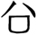
□” （11）380.5。“或消自业，或淡他灾” ⑤476.3。
丧人民元 ⑧39.39。
“丧乱死多门” ④577.6。
画人的特点最好是画眼睛说 ④529.9。
剌伽刻佉夫体 ⑦27.9。
“事大” ⑥371.11。
“事理通达心气和平” ②22.9。
雨花台 ⑦452.3。
雨果剧本演出时的冲突 ⑤265.7；⑥420.5。
卖孝的文人 ⑥416.6。
卖富的文人 ⑥415.4。
卖稿的文人的作品要不得之说 ⑥415.4。
“郁郁乎文哉” ③70.18。
郁达夫北上之说 （12）226.4。
郁达夫关于北新的话 （12）174.3。
郁达夫受反动派攻击的文章 ③512.13；④26.15；（12）71.5。
郁达夫谈翻译《阿河的艺术》之苦 ⑦220.159。
郁达夫谈高尔基的未完的《一封信》 ⑦216.124。
郁达夫谈鲁迅提议选拔青年新作 ③166.20。
矽 ③11.8。
刳木剡木 ⑩165.4。
奔星 ⑦161.5。
奇觚 ⑧39.34；（11）342.5。
奇肱国 ②402.7。
“垄断文坛” ⑥268.29。
拔贡 ②134.12。
“拔宅飞升” 见“鸡犬飞升”。
拔剑逐蝇的故事 ③547.44。
顶子 ①558.48。
顶礼 ⑥604.11。
顶费 （16）194.1。
转轮 ①60.20；⑧43.7。
“转变”的谣传 见“南京盛传转变”。
“斩监候” ⑥47.9。
斩衰凶服 ②283.6。
“斩关羽”的笑话 ⑧217.8。
轮回 ③21.11；⑥636.4。
“轮盘赌” ④167.3；（13）40.2。
“软刀子” 见“软刀子割头不觉死”。
“软刀子割头不觉死” ①6.7；③384.1；⑦328.9。
押牌宝 ①555.20。
“拖鞍” （12）96.2。
“拍花” ⑦287.2。
拆白 ①383.2。
拆灶 ②158.2。
拆梢 ②349.18；③435.7；④311.12。
“拥旗党” ④59.4。
拘于虚 ①62.36。
势所必至，理有固然 ⑧426.1。
抱瓮 ⑧536.2。
抵当辩证法 ⑦460.2。
拉丁化书三种 （13）609.1。
“招贴即扯” ⑥236.1。
“抬阁” ②274.14。
抬驴的寓言 ③463.9。
卧佛寺 （15）436.2。
“卧冰求鲤” ①149.22；②266.22；⑥53.2。
“卧薪尝胆” ⑤63.5。
欧阳兰抄袭雪莱诗 ③256.42。
欧阳晓澜不许剪发女生报考 ③490.2。
“到了汉口” ③455.13；（12）39.6。
“到民间去” ③106.21；⑥494.3；⑦212.95；（11）101.4。
“到底要不要自由” ⑤225.10；（12）420.2。
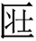
⑧20.3。叔本华咒骂妇女 ③217.14。
叔本华的梅毒药方 ③215.2。
叔本华用梵文记账 ⑥430.5。
叔本华将绅士比作豪猪 ③234.3。
叔本华谈精神伟大与人格伟大 ③41.2。
卓姊 （13）12.3。
虎伥 见“伥鬼”。
虎贲 ②404.21。
“非心” （11）74.3。
“非常处分” ①271.34。
“非人磨墨墨磨人” ⑤334.3。
“非人道主义”的高唱 见“大骂人道主义的风潮”。
“非小人无以养君子” ⑥117.7。
“非徒无益，而又害之” ③39.10；⑦426.4。
“非其鬼而祭之，谄也” ⑤486.17。
“非亲是亲，我官府权为月老” （14）233.2。
“非常之人必能行非常之事” ②111.11。
“非礼勿视，非礼勿听，非礼勿言，非礼勿动” ①220.13；⑤324.9。
“贤者避世” ⑥215.11。
贤母良妻主义 ①283.3。
尚古 ①63.43。
尚宅 （16）298.3。
“昊天不吊” ①269.23。
“果然” ⑥459.6。
果戈理谈诨名 ⑥396.3。
果戈理谈《死魂灵》的结构 ⑩454.3。
昆仑山上古森林的大火 ②368.13。
“国步” ⑤121.4。
“国朝” ③592.9。
国库券 （15）111.2。
国粹戏 ⑩491.3。
“国民之敌” ①330.3。
“国民公仆” ⑤103.5。
国事鞅掌 （12）321.3。
“国家博士” （12）534.4；（13）74.2。
“国民之母之母” （11）45.1。
“国军一致拥段” ③216.8。
“国难后第六版” ⑥38.2。
国防文学“最中心之主题” ⑥561.10，626.3。
“国防文学”以外是“汉奸文学”之说 ⑥561.10。
明社 ②273.8。
明治 ⑩245.10。
明前 （16）244.1。
明器 ⑧59.1；（11）359.10；（15）51.1。
明日黄花 （11）30.8。
明末小品 ④593.9。
明因果者九家 ⑨15.30。
明亡归罪于东林 见“文人误国说”。
“明人好刻古书而古书亡” ⑤285.7；⑥200.20。
“明于礼义而陋于知人心” ③551.62。
明亡后坚持抗清的志士 ③187.9。
“明见侮之不辱，使人不斗” ⑨33.11。
明嘉靖以来的说部丛集 ⑨224.2。
明太祖对于元代势力不肯放肆 ⑤229.5。
明季大臣跑在安南还打牌喝酒 （13）512.3。
“易子而食” ①455.5。
“易地则皆然” ①568.4。
易卜生“救出自己”的遗训 ①270.27。
“易卜生——是个天才的问号‘？’” ④587.10。
“迪威将军” ③366.14。
“典” ⑨368.9。
“忠孝仁爱信义和平” ④524.13；（13）84.2。
咏知县老爷探梅诗 ⑥214.9。
“咈哉” ⑦39.8。
罗曼 ①63.43。
罗生门 ⑩252.1。
罗汉豆 ①598.7。
罗曼·罗兰的日记 ⑥430.4。
罗曼·罗兰评《阿Q正传》 （12）521.7。
罗曼·罗兰评凯绥·珂勒惠支的画 ⑥496.15。
罗家伦称赞芮恩施 ③204.8。
罗清桢学生的作品 （12）422.1。
罗丹谈艺术中“性格”美 ⑩189.9。
罗振玉买卖大内档案资料 ③591.3。
罗马字母代替人名地名的争议 ②43.5。
罗加切夫斯基谈契诃夫和安特莱夫 ④108.4。
罗贯中著《水浒》“子孙三代皆哑”的传说 ⑩71.5。
帖括 ③225.5。
“岣嵝碑” ⑥107.10；⑨357.6。
岣嵝禹碑 见“岣嵝碑”。
凯白勒 ⑩297.10。
罔象 ⑧89.15。
制艺 ①575.3；②256.6；⑥16.25；⑧420.9。
制军 ③455.16。
制艺的选家 ③166.19。
“知难行易” ④349.8。
“知人论世”说 ⑨372.35。
“知识是罪恶” ①392.3。
“知耻近乎勇” ④632.10。
“知有母不知有父” ⑤302.2。
“知其不可为而为之” ③486.4；⑥543.15。
“知命者不立于岩墙之下” ③56.5；（12）417.1。
迭逢纪 ①23.51。
“和番” ⑤596.6。
和歌 （12）234.2。
“和长虹战” ④114.4。
“和平老翁” ⑤41.3。
“和西滢战” ④114.4。
“和光同尘” ③84.3。
“《和平与战争》” ⑤593.4。
和尚被焚的故事 ③454.8。
“竺震旦” ①198.17；③365.4。
“牧” ⑤386.5。
牧师劝说“生前受苦死后赐福”的故事 （11）16.1。
“物相杂，故曰文” ⑨358.15。
“物质文明吃穿居住享用还是咱们黄帝子孙内行” ⑧437.2。
岳飞奉旨不抵抗 ④537.12。
岳武穆王脊梁刺字 ⑩439.10。
供奉 ⑤610.4。
供奉（日本名称） ⑩250.2。
“侦心探龙” （11）365.6。
侦察的眼光 ⑩289.16。
“使之闻之” ③382.3。
侏儒 ②453.12。
侨俄 ⑩359.30。
“侨民文学” ⑥271.55。
侂 ①108.59；⑧37.10。
“依定律请若尝试此六阅月间” ⑩481.7。
侅事 ⑧55.7。
“帛” ①271.32。
“卑污的说教人” ④67.3；⑦211.88；（12）141.3。
的中 ②218.2。
征申公枚乘 ⑨425.2。
质力 ⑧38.24。
质学 ①38.30；（11）346.2。
“质点论” ①36.8。
质力不灭律 ①24.56。
爬翁 （11）375.10。
“彼得” ①178.6；⑥574.4。
“彼可取而代之” ①374.6；③48.5。
“彼亦一是非，此亦一是非” ③91.10；④588.16；⑤266.8；⑥311.11；⑦140.3。
“径一周三” ⑥269.36。
所得税 （15）438.4。
“舍密学” ④218.10。
金文 ⑥294.8。
金石 ⑤282.4。
金款 ③169.5。
“金心异” ①443.14；⑧127.2；（11）377.1。
“金石例” ③390.10。
金鸡那 ⑥408.5。
“金刚怒目” ⑥450.7，604.14。
金华斗牛 ⑤10.2。
金鸡纳霜 ⑩276.26；（11）124.8。
“金铁主义” ①60.15。
金玉的粉末 ②367.6。
“金光明道场” ④537.11。
金屋贮阿娇 ⑧539.3。
金圣叹删《水浒》 ④544.5。
金圣叹批改《西厢》 ④544.4。
金圣叹批《三国演义》 ①499.3；⑤139.4；⑨143.9。
金圣叹抬起小说传奇 ④544.3。
金老鼠的笑话 ③157.16。
金山程氏藏镜释文 ⑧88.4。
金兵骂孔丘像的故事 ④330.16。
“金淑姿是鲁迅小姨”之说 （13）284.2。
“命” ⑨368.9。
“采菊东篱下，悠然见南山” ③552.67；⑥178.5。
“采诗之官，王者所以观风俗知得失” ⑩4.3。
“受一廛而为氓” ④56.12。
“受了帝国主义者的指使” ⑥85.4。
“念兹在兹” ③593.19。
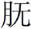
⑧23.34。“肺腑而能语，医师面如土” ⑥22.4。
“朋友，以义合者也” ⑤482.2；⑥392.7。
服箱 ①109.69；⑧24.40。
服辩 ①462.7。
服散作假的故事 ③546.36。
昏黄 ①39.43。
周 （11）338.5。
周晬 （16）272.9。
“周连兄” （12）330.2。
周尺一丈 ②428.12。
周召共和 ①241.15；⑥581.10。
周作人的自寿诗 （13）88.2。
周木斋指责学生逃难 ⑤90.8。
周立波谈苏汶态度好 （14）9.2。
周作人谈不打落水狗 ①294.5。
周文抗议傅东华删改小说 ⑥563.28；（14）15.4；（16）589.7。
周建人与王蕴如相爱之事 （11）547.2。
周作人谈各阶级都要升官发财 ④102.3。
周作人谈“载道”文学和“言志”文学 ④484.3。
周作人对《域外小说集》新版的说明 ⑩178.1。
周建人谈在商务印书馆情况的字条 （11）499.2。
鱼与熊掌 （11）67.4。
鱼龙曼衍 （11）339.12。
狉獉 ①105.17。
兔死狗烹 见“鸟尽弓藏，兔死狗烹”。
“狐狸吃不到葡萄，说葡萄是酸的” ⑤362.6；⑥415.4。
忽遭寇劫 ⑩68.3。
狗监 ⑨437.5。
狗儿年 ⑧413.2；（13）385.1。
《狗儿年杂文》的拟名 （13）385.1。
“饰小说以干县令” ⑨11.1。
“饱食终日，无所用心” ④38.14；⑤459.8。
“变动说” ①21.32。
“京瓦技艺” ①159.6。
京式的流言 ⑩289.16。
享保 ⑨156.11。
庙会 ①581.2；②134.5。
庙讳 （11）457.1。
庙祝 ②23.15。
“庙谟” ⑩193.3。
夜台 ⑧541.3。
府县志书 ③140.3。
“底平趾敛” ④523.2。
“庖人虽不治庖，尸祝不越尊俎而代之” ①269.18；⑤299.8。
卒业之券 ①107.48。
庚子冬杪 ⑧4.3。
“放心” ①556.29。
“放冷箭” ②285.19；③275.4；④650.13。
“放郑声” ⑨372.40。
放焰口 ②309.17；⑥603.3；（12）148.14。
“放诸四夷” ①424.3。
“放屁放屁” ⑤126.3；⑦402.3。
放鬼债的资本 ②452.10。
“放进了应该去的地方” ③276.10，384.2。
於铄 ⑦18.12。
於菟 ⑦464.2。
“妾”字的谬解 （11）71.4。
刻陨石以诅始皇 ⑨397.5。
“废历” ⑤464.2。
废止朝食 ②382.7。
废止汉字和提倡罗马字的主张 ①554.13；④17.9。
“盲目盲心”的美术家 ①358.6。
“性灵” ⑤605.5；⑥63.20，433.6；⑧433.4；（13）378.1。
“性官” ⑤320.3。
性解 ①106.33；⑧38.17；⑩169.5。
“性相近” ①568.3。
性非如桮棬 （11）24.1。
“怪哉” ②292.10。
“怪力乱神”之书 ⑨288.4。
炎汉 ④523.5。
“炎黄之胄” ⑥47.10。
郑孝胥讲“王道” ⑧433.3。
郑振铎谈《阿Q正传》 ③401.2。
“郑康成行酒伏地气绝” ③542.14。
单幺 ①18.7。
净火天 ⑦376.19。
“浅薄的人道主义” ④103.7；⑩510.3。
“浅薄的社会主义者” ④86.9。
法王 ①20.20，60.18。
法事 ②110.3。
法皇 见“法王”。
“法眼” ①480.4。
法源寺 （15）65.3。
“法兰西派” （12）244.8。
法鲁的嘲笑 见“到底要不要自由”。
“法立然后知恩” ⑧255.2。
法兰西的乐剧 ⑩385.16。
法朗士在左拉改葬时的讲演 ④550.5。
“河间妇” （14）371.1，451.4。
沮核 ①36.2。
油浸曹白 （16）247.1。
油漆布雕刻 ⑦355.6。
泠然 ⑩165.8。
“泡制醉虾” 见“醉虾”。
学宫 见“孔庙”。
学宪 （11）336.8。
“学匪” 见“学棍学匪”。
学洋务 ①442.5。
“学于古训” ①149.24。
“学而一章” ④586.3。
学费之事 （12）285.1。
“学棍学匪” ③218.16，224.2；④254.10，522.1；（12）5.3。
“学而优则仕” ③141.15。
“学校犹家庭” ③78.7。
学者们的排挤 ②237.7。
“学笈重洋，教鞭十载” ⑦303.8；（11）101.2。
“学笈单洋，教鞭17载” （11）101.2。
学生自治会职员六人 ⑧171.6。
“学而时习之，不亦说乎” ③155.3；⑤201.2，552.4。
学生因投稿被教授谋害之事 ⑦113.2。
泥金 ⑦19.22。
“沼吴” ⑥210.8。
“泼赖妈” ②309.13。
波的 ⑦29.39。
波黎版 ⑧422.3。
波尔雪维 ⑦280.10。
波希米亚文 ⑩463.4。
波希米亚者流 ⑩432.2。
波斯诗人的酒杯 ④447.6。
泽畔吟诗 ⑦153.3。
治外法权 ①376.2。
“治国平天下” ④348.3。
治饼饵守囹圄之术 ①120.182。
“治于人者食人，治人者食于人” ①219.7。
宝历 ⑧212.5；⑨156.11。
宝永 ⑩49.2。
宝相花 ①412.3。
宝珠山茶 ②186.3。
“定要有自信的勇气，才会有工作的勇气” ④456.13。
“空穴来风，桐乳来巢” ③91.9。
实录 ③593.16。
“实际解决” （14）139.3。
“实繁有徒” ⑤526.2。
“官话” ⑤433.15。
官品 ①19.14；⑧38.27。
“官僚” ④609.4。
“官奴分直上下” （14）269.2。
官准的“作者”连姓名也“已忘却” ⑩476.6。
试帖诗 ①575.3；②256.6；（12）510.1。
“试他一试” （11）42.3。
“诗囚” ⑧535.11。
诗史 ⑥5.8。
“诗孩” ⑦249.2。
“诗哲” ③192.6；（12）71.8。
《诗》大序 ⑨371.30。
《诗》小序 ⑨371.30。
诗言志 ①106.34。
诗的指数 （12）265.4。
诗的解放 ⑤232.3。
《诗》学三家 ⑨370.28。
“诗赋欲丽” ③542.17。
诗持人性情 ①106.35。
诗三百，思无邪 ①106.35；⑤473.5；⑨372.40。
“诗为人生评骘” ①107.52。
“诗歌和游戏一样”之说 ⑦250.7。
“诗人就像赛跑的马”等语 ⑦252.18。
“诗者，非有少许稳定者也” ⑦250.7。
《诗经》的编次寓微旨之说 ⑨372.39。
《诗》大、小序的作者问题诸说 ⑨371.30，371.33。
“诘
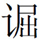
聱牙” ⑩179.4。“诚于中，必形于外” ⑥139.5。
“诛心” ①556.32。
诛少正卯 ④56.6。
诡形之龙类 ⑧23.25。
“询于刍荛” ⑥339.20。
建中 ⑩99.19。
建初尺 见“虑傂尺”。
建安竟 ⑧89.17。
“建安七子” ③543.25。
肃王射杀张献忠之说 ⑤251.12，251.13；⑥183.30。
隶书 ⑥107.16，294.11；⑨396.3。
居士 ④38.11。
“居移气，养移体” ⑤455.4；⑨391.16；（14）139.4。
屈原怀疑自遂古之初 ①106.40。
弥洒 ⑥268.25。
妲己亡殷 ①556.30；⑥209.7。
始元 ⑨430.27。
“始制文字，乃服衣裳” ④556.4。
弩机 ②382.6。
“孥戮” ⑥411.3。
“孥孥阿文” （11）511.1。
“承重孙” ②110.2。
组织 （11）332.18。
细辛 ③20.4。
“细胞说” ①22.37。
细腰蜂 ①218.2；②465.5。
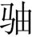
③118.29。“驷不及舌” ⑥77.9。
“孟宗哭竹” 见“哭竹生笋”。
孟子羞谈霸道 ⑥16.24。
孟森评清代《字贯》案 ⑥46.4。
驸马 ⑤311.7。
孤哀子 ⑥481.15；（12）120.3。
“孤桐先生”即章士钊 ③206.15。
“绊脚石” 见“绊脚石式的开倒车”。
“绊脚石式的开倒车” ④190.4；⑧178.8；（12）254.2。
绋讴 ⑧371.3。
“绍兴师爷” ②284.15。
绍兴酒坛后 ⑧284.3。
绍伯攻击鲁迅“调和” ⑥153.10；（13）302.2，376.4。
经学家 ⑩297.7。
“经验”的利器 ①335.3。
“经营腐烂事业” ⑩288.14。
经书能驱邪却敌之说 ③140.5。
九画
契诃夫斥不识羞耻，傲视一切 ⑥349.4。
春江 ⑦149.2。
《春秋》笔法 ①428.12；③479.11；⑥183.31。
春×三月某日 ⑤68.10。
《春秋》之义 见“复仇乃春秋大义”。
“《春秋》责备贤者” ③38.2，208.29；⑦307.3。
“春非我春，秋非我秋” ⑥269.41。
春台为叭儿辈效力 （12）57.9。
“帮闲文学” ⑥357.2。
珂罗版 （16）254.6。
珂勒惠支四种连续画 ⑧351.4。
玻璃镜不如铜镜好之说 ①213.12。
“毒逋四海” ⑩193.4。
“毒蛇化鳖”等奇闻 ⑧435.2。
封翁 ⑦300.3。
“封建余孽” ④8.8；⑤563.3；⑥397.6；⑧300.6。
封豕长蛇，荐食上国 ⑧40.40。
城下之盟 ④330.17。
城狐社鼠 ③183.20。
“城门失火，殃及池鱼” （11）501.3；（12）97.4。
《城与年》木刻插画题字 （14）97.2，99.1。
“赵钱孙李” ②496.8；⑥152.4。
赵与陞题名 ⑧67.8。
赵子昂画马 ③251.17，606.6。
赵景深驸马 （12）312.5。
赵景深氏的“鸟瞰” ⑦219.146。
赵景深谈“文艺论” ⑧369.3。
赵代秦楚之讴 ⑨426.5。
“政如飘风，民如野鹿” ⑤42.8。
政府权力庞大是世界的潮流之说 ⑤305.4。
“某系” ③85.8。
“某翁” 见“鲁迅翁”。
“某籍” ①248.2；③85.8，607.7；⑦97.7；（11）101.1。
某生者 ①412.5。
“某刊物”解 ⑥316.6；⑧430.2。
“某籍”小姐 （11）101.1，501.2。
“某校”和“□□□” ⑦96.3。
“某女士”说了留学生的不好受讨伐 ⑧307.7。
荆有麟捧林风眠 （12）113.3。
“革党” ①295.7；③287.4。
“革命小贩” ⑥398.11。
“革命成功” ④144.2。
“革命后方” ③470.3。
“革命文学家” ⑩309.10，335.24。
“革命咖啡店” ④119.2；⑩494.4；（12）129.1。
“革命策源地” ⑩297.3。
“革命尚未成功” ③429.6；⑦307.4；⑧195.3。
革命的批评家 ⑦348.6。
“革命文学家”的警告信片 ⑧314.3。
荐绅 ①401.10。
荛翁三跋 ⑩63.25。
带句 ⑧88.7。
“带住！” ③261.3。
草标 ②134.7。
“草字头” ③115.8。
草露易晞 ⑧349.3。
“草野小民，生逢盛世”等语 ⑤146.12。
“荃不察余之中情兮” ⑤124.5；⑦447.3。
茶腿 （16）250.1。
“茭白” （12）57.2。
垩笔 ⑧23.27。
荒鸡 ⑦475.2。
“药渣” ⑤134.4。
故宫 ④491.2。
胡须的名号 ①188.4。
胡须的样式问题 （13）69.2。
胡须颜色的警告 ③566.7。
胡适进见溥仪 ④348.4。
胡适推崇清代学术 ⑤543.2。
胡适提倡“文学革命” ④16.7。
胡适的英国庚款答问 ③356.17。
胡适受国民党当局“警戒” ④164.5。
胡适攻击民权保障同盟 （12）377.10，406.2。
胡适谈对萧伯纳的“招待” ④516.6；（12）377.9。
胡适批评“知难行易”学说 ④349.8。
胡适对王统照译诗的批评 ③146.8。
胡适谈《庄子·天下篇》的作者 ⑨380.16。
胡适应何键之邀至长沙讲演 ⑤52.5。
胡适要《新青年》“不谈政治”的信 （11）387.2；（15）423.3。
胡适称赞蒋汪“言论自由通电” （13）299.7。
胡适等反对北大脱离教育部 ③182.11。
胡适忠告日本“不能用暴力征服中国” ⑤84.4。
胡蝶嫁人的报导 （13）574.6。
胡应麟谈唐宋传奇文 ⑩90.2。
胡怀琛改削《尝试集》 ①412.4。
胡梦华批评《蕙的风》 ①427.2；②355.2；④529.8。
胡汉民谈青年应养“力”勿使“气” ④334.4。
胡绳谈三篇用土话写的文章 ⑤586.4，587.6。
南画 （14）256.1。
南镇庙 （13）77.2。
“南方之强” ⑤458.5。
南北两京 ④437.3。
南江店友 （16）244.4。
南星精舍 （16）640.2。
“南腔北调” ④429.1。
南普陀寺 ①303.2；（15）639.3。
南无阿弥陀 ⑦451.2。
南阳魏公桥 （14）129.2。
南京盛传转变 （14）15.3。
南边整天开大会 ⑦397.2。
南阳汉墓石刻画像 （13）519.1。
南北朝时演剧的“假面” ⑥139.3。
南京中央监狱寄来的邮片 （14）10.6。
“标准美人” ⑤477.6。
标点古文谬误四例 ③337.14。
枯煤 ⑩420.49。
“柯伯坚” ①420.4。
“相人术” ⑥139.4。
相对论 ①421.10。
“相斫书” ③20.8。
“相濡以沫” ⑥508.8；⑧423.4；（14）404.2。
“相反而实相成” ⑥214.6。
“相视而笑，莫逆于心” ③519.3。
枳首之鹰 ⑧39.36。
柏栗丛边 ⑦473.2。
柏勒思 ⑦406.5。
柏梁台 ⑨429.24。
柏拉图一流的欢喜 ⑩398.10。
柏拉图式的恋爱论 ⑧392.11。
柏拉图《共和国》不是“文艺论”之 说 ⑧369.3。
柳枝词 ⑥111.38；⑦462.3。
柳毅传书故事的杂剧 ⑨93.19。
柳下惠与盗跖见糖水的故事 ⑤201.3。
柿油党的顶子 ①558.48。
“勃谿”见“妇姑勃谿”。
勃劳绥特尔评阿霍 （11）403.6。
勃朗宁夫妇是讲恋爱的模范 ③217.13。
勃尔根骂中国学生忘却孔子之教 ③280.2。
要人赠飞机给朋友 ⑤136.5。
要登文坛，须阔太太 ⑤293.6。
“要以‘今雅’立国”等议论 ④627.4。
咸肉庄 ⑥563.23。
“咸与维新” ①295.9，558.44。
“威武不能屈，贫贱不能移” ⑥501.2。
研究古代舞法 ⑤573.9。
研究系宣传鲁迅为“语丝派” ③478.8。
“砒霜，大毒” ⑤98.3。
面有蚩尤氏之雾 ②404.18。
“耐自家写子出来末哉” ②467.22。
“耐阿是勒浪勿要面孔哉” ①383.3。
虿盆 （11）13.2。
残念 （13）545.7。
“残酷的天才” ⑦109.4。
“殃及池鱼” 见“城门失火，殃及池鱼”。
“挂脚韵” ①401.11。
挂冠归隐 ②405.24。
“挟天子以令诸侯” ③270.2。
拾煤渣的老太婆灵魂中的拜金主义 ③572.2，597.3。
指挥刀下的“革命文学” ③569.6。
“挑剔风潮” ②111.10；③85.8，250.5；⑩289.21；（12）5.3。
挦撦 ③122.6。
垫鹿台脚 ②497.12。
轻二硫 ⑦28.20。
“轻清者上浮而为天” ⑥381.6。
战士和苍蝇 ③40.1。
战时共产主义 ⑦279.2；⑩356.5。
战略家谈“战略关系” ⑤34.4。
点金术 ①38.27。
“临时抱佛脚” ③205.13。
“临睨夫旧乡” ⑦429.11。
“省试” ⑥453.26。
“尝粪心忧” ①149.22；②349.19。
“是乃天授，非人力也” ③117.23。
“显学” ⑨378.2。
显镜衡机 ①43.79。
冒头 ⑩373.6。
禺 ①64.50；②403.12。
禺彊 ⑧89.12。
映午 ⑦233.4。
星表 ①38.32。
星云说 ①106.31；⑧22.14。
星气凝聚 见“星云说”。
星斗阑干 见“月落参横”。
“星期标准书” ⑥587.3。
“昨日的文学家” ④87.11。
昭代 （13）56.1。
昭君出塞 ⑥209.5。
昭陵六骏 ①212.6。
毗心 ①189.14。
毗卢帽 ②309.18；⑥603.3。
胃加答 ⑩451.6；（12）340.2。
思士 ⑦136.2。
“思无邪” 见“诗三百，思无邪”。
思归其雌 ①106.29。
“思想自由” ④164.4。
“思不出其位” ⑥47.11。
“思想界先驱者” ③495.4；④77.5。
“思想界的权威者” ③253.25，495.4；④59.7。
“思想昏乱”“是我们民族所造成的”等语 ①331.6。
“‘思想界权威者’的大广告便登出来了”等语 ⑧178.6。
“贵为天子” ③47.2。
“虽覆能复” ③116.19。
“虽有忮心，不怨飘瓦” ②286.28；⑥271.57。
“虽有周公之才之美”等语 ①271.35。
“虽小道，必有可观者焉”等语 ⑨13.18。
《品花》考证之宝书 （11）430.14。
骂倒一切古今人，只留下自己之说 ⑥236.2。
骂人文字流行使正经文章没人看之说 ③393.2。
哈德门 （11）39.6。
哈雷慧星 ⑩496.4。
哈姆生被列为左翼作家 ⑦348.3。
“贻尘谤于后王” ③542.16。
“骨肉归于土，命也”等语 ④637.2。
幽闭 ①489.3；⑥180.16。
“幽默” ④587.5；⑩303.2。
“幽默”既非国产 ⑤47.4。
“幽涷三商”的解释 ⑧89.8，89.9。
“幽默与批评的冲突” ⑧190.5。
看假洋 ⑩454.5。
“看见别个捉去被杀比自己被杀更苦恼” ⑩225.3。
“钞刊文” ⑤599.3，599.4。
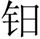
⑦26.1。绿二 ⑦28.22。
炭养三 ⑦28.21。
硫养四 ⑦28.21。
钟鼎碑版 ②310.26。
钟离为会稽望族 ⑩42.5。
钢叉叉舌头的封面画 ④142.16。
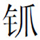
验 ①21.27。“钩辀格磔” ①408.3。
拜伦评彭斯 ①111.93。
拜伦谈权力之剑 ①110.76。
拜伦述离英的原因 ①110.80。
拜伦临终时说的话 ①112.97。
拜伦关于爱自然的话 ①115.132。
拜伦对世俗舆论的批评 ①110.81。
拜流氓做老子的文学家 ④315.35；⑤596.7。
拜服约翰生博士的教授 ⑤590.6。
拜伦谈为他国的自由而战 ①110.84。
拜伦称希腊人为“世袭之奴” ①111.93。
选体 ⑤555.4。
“选学妖孽” ⑤345.12；⑥397.9；⑦142.14。
香象 ⑩90.6。
香港总督 ⑤41.5。
香港余蕙卖文广告 ③456.21。
种人 ①103.5。
种族发生学 ①18.11。
秋门 ⑦150.3。
秋油 ⑧528.2。
秋胡歌 ⑩83.10。
秋瑾案的谋主 ①295.13。
“秋风秋雨愁杀人” ⑥182.24。
科道 ⑥456.45。
科斗字 ②368.16。
重九 ①269.19。
重言 ⑧39.35。
“重适” ①132.10。
重台花 ②368.15。
“重上征途” ④152.2。
“重女轻男” ③129.8，252.19。
复古（欧洲） ①40.53。
复仇文学 ③443.5。
“复仇乃春秋大义” ⑦59.3；（11）62.5。
段祺瑞的《内感篇》、“外冒篇” ③335.2。
“顺民”说 （13）509.2。
顺我者“通” ③226.12。
“顺”的翻译 ⑦396.13。
“俏皮刻薄” ①206.7。
修能 ①106.39。
修多罗 ⑦104.6。
修善寺温泉浴场 ⑦213.98。
保甲 ②497.13。
保俶塔 ①181.4。
保氏教国子 ⑨357.5。
“保障正当舆论” （13）604.1。
保守文言的第三道策 ⑥376.3。
保罗生谈海格尔的著作 ①18.8。
促狭 ⑩434.4。
俄捕 ⑤261.2。
俄国人姓名的组成 ⑩171.4。
“俗语不实流为丹青” ⑩156.18。
信士像 ①188.9。
信仰自由而又特别尊孔 ①362.6。
“皇汉医学” ④144.1。
“皇帝的新衣” ⑤512.4。
皇皇然若丧家 （12）66.7。
皇帝何在，太妃安否 ③29.11。
《皇汉医学》出版预告 ④145.4。
皇甫谧自述吃散后的苦痛 ③547.43。
“皇天平分四时兮窃独悲此廪秋” ③393.4。
禹穴 ⑤486.14。
禹陵 ⑧42.4；⑩37.9；（13）77.2。
禹祠 ⑧46.2。
禹域 ⑦468.2。
禹鼎 ⑥455.38。
禹是一条虫 ②401.6；⑤15.4，273.8；（12）65.3。
禹生“偏枯之疾” ②405.27。
禹化为熊的传说 ②406.35。
禹过家门而不入 ②405.25。
禹捉无支祁的传说 ②406.36。
“禹入裸国亦裸而游” ③38.3。
禹与舜及皋陶的谈话 ②407.40。
“鬼才” ⑤257.3。
鬼见怕 ①511.5。
“鬼打墙” ③79.14。
“鬼画符” ③33.2。
鬼的颜色是红的之说 ⑥644.12。
“鬼神者二气之良能也” ②23.11。
衍圣公 ⑧107.4。
须头 ⑩452.9。
须弥 ⑧36.3。
俞樾谈《女仙外史》的作者 ⑧212.10。
剑仔 ④47.3。
剑树 ②206.4。
“俎豆之事”等语 ①276.3。
“食蛤利” ③266.3。
“食肉寝皮” ①362.3，455.6；④524.8。
“食菜事魔” ⑥143.4。
食菽而已 （12）323.8。
“食不厌精，脍不厌细” ④524.10。
“食桑而吐丝，前乱而后治” ⑩53.6。
胜民 ⑧37.14。
“胜朝遗老” ①362.7。
“胖女”表演 ⑤573.8。
脉望 ⑧535.6。
“狭斯丕尔” ⑤589.2。
独乙 （11）332.19。
“独头茧” ②111.8。
独鹤与飞 ⑧4.3。
“独夫的家谱” ③20.8；⑥123.5。
独孤后的故事 ①369.4。
“狮吼” ⑥604.15。
狮子身中的害虫 ⑤196.27；⑦220.162。
“怨诽而不乱” ⑨372.37。
急急如律令 ②496.9；③33.3；（12）65.5。
急于换几个钱 （13）515.5，521.1。
“哀莫大于心死，而身死次之” ⑤108.3。
“庭训” ①557.39；②56.5。
庭燎 ②404.20。
疯狂状态产生艺术作品之说 ⑦250.8。
“施担囊而坐” ⑩100.30。
施蛰存攻击杂文 ⑥4.3。
施蛰存的“动机论” ⑦140.3。
施君美即施耐庵之说 ⑧173.4。
施蛰存对《集外集》的评论 ⑥449.2。
施蛰存答“目下所读之书” ⑤374.6。
施蛰存为“忠而获咎”者鸣不平 ⑥47.13。
施蛰存谈从《庄子》《文选》寻字汇 ⑤394.8，474.6，590.8；⑥310.7；（12）481.6。
施蛰存讥讽鲁迅也刻佛经考版本 ⑥310.9。
施蛰存讥笑鲁迅翻印珂罗版木刻 ④624.7；⑤393.3。
施蛰存谈大众文学是文学中的旁支 ⑤394.7。
施蛰存讥鄙薄佛教是“想为儒家争正统” ⑤394.5。
施蛰存谈用古字和外来字拼成新文学 ⑤394.10。
施蛰存谈苏联“沾染了资产阶级的余毒” ⑤590.7。
亲策贤良 ⑨425.3。
“亲戚或余悲”等语 ③295.9。
“亲是交门，五百年决非错配” （14）233.2，531.2。
“‘亲见亲闻’者，亦可自旁观者之口言之”等语 ⑨248.14。
帝江 ②256.9。
帝王将相的家谱 见“独夫的家谱”。
“帝城不禁东流水，叶上题诗欲寄谁” ⑩154.4。
恒河沙数 ⑦205.34。
恒河边上杀人祭天的传说 ③70.20。
恺多图线 ⑦29.38。
“恨人” ①379.2。
“恨恨而死” ⑥85.3。
“闻之喜而不寐” （11）165.3。
闻讳而哭的故事 ③546.37。
“闻诛独夫纣矣，未闻弑君也” ④279.10。
炸大 ③257.49。
炮烙 ②23.17。
“养生主” ⑥586.4。
养花天 ⑧540.10。
“养生有五难”等语 ⑩84.23。
“养就祸胎身始去” ⑤474.8。
“养生者不足以当大事” ⑧398.3。
“养成一种‘看热闹’的情趣” ⑥416.11。
“美人鱼” ⑥302.3；（13）204.2。
美育代宗教 ①362.4。
“美国驻兵中国为条约所许”等语 ⑤160.2。
美国富豪称北京捡煤渣老婆子为“同志” 见“拾煤渣的老太婆灵魂中的拜金主义”。
“叛徒的首领” 见“青年叛徒的领袖”。
送灶 ②22.2；③266.2；⑧533.1。
“类” ②465.5。
类书 ②349.23。
迷阳 ⑦473.3；（11）342.3。
娄公子被张铁臂骗取白银的故事 ④536.4。
“前驱” 见“思想界先驱者”。
“前不见古人，后不见来者” （13）9.4。
首善 ②75.2；③106.23；（12）132.2。
首善之区 见“首善”。
“首若飞蓬，非无膏沐” ⑦19.20。
“将欲取之必先与之”的战略 ④114.7。
总督 ②311.40。
举孝 ①147.17。
洞庭木落 ⑦153.2。
“洗煤炭” ①342.2。
洗刷牺牲者罪名的议论 ③103.3。
“活烤鹅掌” ⑤521.4。
“活字”与“死字”之说 ⑥294.7。
济慈被批评文章骂死之说 ⑤503.2。
“洋米” ⑥105.2。
洋钱 ①472.2。
洋烈士 ⑤20.4。
“洋场恶少” ⑥398.11。
洋装二十五六史 ⑥178.2。
“浑良夫梦中之噪” ④27.19。
觉罗 见“爱新觉罗”。
“觉今是而昨非” ⑤530.3。
“宣外” （11）509.4。
宣德炉 ①558.45。
宣付国史馆立传 ①553.6。
宣统三年九月十四日 ①557.41。
室女 ①133.19。
室女不应守志殉死的议论 ①133.19。
宫刑 ①489.3；⑥180.16。
宫保 ⑥636.8。
宫人斜 ⑦251.15。
宫川方 （11）332.24。
宫川宅 ②319.9。
宫为土，商为金 ⑧89.10。
宪政国家 ⑤93.5。
“突变”说 ④257.4；⑦217.131。
“突而弁兮” ①401.8。
穿 ⑧66.3。
穿着崇正皇帝的素 ①558.42。
“客卿” ⑤225.4；⑥200.22。
冠礼 ⑥604.12。
“语录体” ②404.18；⑤433.11；⑥320.6，349.2，630.2；（13）94.2。
“语丝派” ⑧255.3。
“语丝派首领” ③478.8；（12）71.9。
《语丝》与《现代评论》是“兄弟周刊”之说 （11）93.4。
“祖述尧舜” ⑨379.8。
祖述释迦牟尼的哲人 ③215.2。
神矢 ⑦447.2。
神思 ①37.20。
神堂 ②146.5。
“神童” ①319.4。
神器 ⑩138.66。
“神道设教” ①284.5。
神赫斯怒 （11）342.6。
神农尝百草的传说 ④556.3。
神农氏重八卦为六十四爻 ⑨357.3。
祝由 ①59.12。
“祝福” ②22.6。
祝秀侠谈“新八股” ⑤113.5。
祝秀侠等攻击《辱骂和恐吓决不是战斗》 （13）449.3。
“诰” ⑨368.9。
“诱敌深入” ④536.7。
“说话” ①159.2。
“说不出”的诗 ③130.14；⑦42.1。
既望 ⑩37.11。
叚 ⑧89.11。
“费厄泼赖” ①294.3；④586.4；⑥214.4。
眉绿 ①213.11。
眉间尺复仇的传说 ②451.2。
“除恶务尽” ④524.8。
“姨副” （12）65.1。
姚锦屏化男 ⑥298.8。
怼世俗之浑浊，颂己身之修能 ①106.39。
羿射十日的神话 ②384.13。
羿射封豕长蛇的神话 ②382.5。
《勇敢的教义》的诗句 ⑦340.10。
绑票 ②43.4。
“绑急票” ①276.9。
“结婚纪念册” （12）110.9。
结发临阵的风俗 ⑦18.8。
给同籍人帮忙 ③85.9。
绛灌冯敬毁贾谊 ⑨406.6。
“绛即东雍为守理所” ①408.5；⑥109.26。
“绝对不能言抗日” ⑤108.4。
“绝望之为虚妄，正与希望相同” ②183.2，183.6；④471.8。
骈体文 ③77.3。
骈四俪六 ④632.11。
十画
“耗痢窝” （14）521.3。
秦女 ⑦160.4。
秦醉 ⑦148.2。
秦篆 ⑨396.3。
秦时杂赋九篇 ⑨397.7。
秦始皇封松树 （15）70.3。
秦始皇寻仙山的故事 ②368.17。
秦重小儿赵重妇人 ⑤225.5。
秦桧用麻条鱼鳔逼供的故事 ④601.2。
“泰山” （12）153.2。
“泰水” （12）153.2。
泰东 ⑩171.2。
泰茄 ⑩369.5。
泰陵 ⑥47.7。
“泰山石敢当” ⑤461.5；⑧59.3。
泰噶托士之谷 ⑦19.25。
泰戈尔对“撒提”的态度 ⑩219.5。
泰戈尔自称“英国治下的印度人” ⑤617.3。
泰纳《艺术哲学》不是“文艺论”之说 ⑧369.3。
班陀黎那 ①23.48。
班固谈枚皋文 ⑨428.20。
班彪非议《史记》 ⑨440.24。
“珰鲁迅” ④125.13；⑦202.7。
“珠花”的订正 （14）348.1。
“素人” （13）433.2。
素心 ⑧539.8。
素描 （12）427.6。
“顽民” ⑥16.23。
“载飞载鸣” ⑥397.10。
“载道”的梦和“言志”的梦 ④484.3。
起今随今 ⑨123.6。
盐谷温谈中国神话少的原因 ⑨28.20。
袁朝 （11）365.7。
袁世凯银元 （11）99.3。
袁宏道赞《金瓶梅》 ⑥237.8。
袁宏道做官叫苦 ⑦141.12。
袁绍杀田丰的故事 ④94.7。
袁世凯看特印的报纸 ③513.15。
都督 ②330.17。
“都是音乐” ⑦57.4。
都察院刻本 ⑨18.50。
恐鸟 ⑧23.29。
“盍各言尔志” ④485.4；（11）45.4。
壶矢代兴 ①163.36。
聂绀弩谈“民族革命战争的大众文学” ⑥562.18。
恭人 ⑧122.3。
莱蒙托夫谈拜伦 ①114.125。
“莲姊家” （14）87.1。
莲蓬笺纸 （11）310.2。
莲花似六郎 ⑦474.4。
莫愁湖 ⑦452.3。
“莫谈国事” ①220.12；②273.10。
“莫斯科的命令” ③479.15；④115.9，197.11。
“莫作乱离人，宁为太平犬” 见“乱离人不及太平犬”。
荷锸而随的故事 ①303.3。
荼
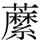
⑧540.9。“获得大众”“保障最后的胜利” ④68.9。
“莘莘学子” ③39.7；⑤604.3。
晋人赤身露体 ①198.11。
“恶札” ⑨157.18。
“恶党” ⑥17.28。
“恶魔派” ①108.57。
“恶郑声之乱雅乐也” ⑨372.40。
真笔板 （12）25.1。
“真勇主义” ⑩467.1。
“真理哭了” ⑥310.5。
“真正的艺术家的面目”等语 ②382.8。
梆子面 （11）324.5。
“桂花蝉” （11）196.2。
《桂公塘》被说成“民族文艺” （13）106.7，135.3。
桓桓 ⑧43.8。
 鱼 ⑧535.6。
鱼 ⑧535.6。
桐城气息 ④397.15。
“桐城谬种” ⑤345.12；⑥397.9；⑦142.14。
格五 ⑨427.11。
格兰 ⑦28.24。
格物 ③20.6；⑤113.6。
格致 ①442.6；②310.25。
“格致之书” ⑨288.4。
格尔歌王后与夷国女王应答之言 ⑦19.21。
“桃之夭夭” ③393.6。
校雠 ①59.5。
根干细胞 ①23.46。
“根本不懂唯物史观” ⑦212.93；⑩319.15。
索虏 ⑧43.10。
速死 （14）155.3。
速斋 （11）377.3。
贾子祭诗 ⑧535.3。
“贾生晁错明申商” ⑨408.19。
“贾谊升堂，相如入室” ⑨437.9。
贾谊请改正朔易服色 ⑨407.18。
“辱骂”与“恐吓” ⑤113.10。
夏言 ⑩458.3。
“破罗” ④478.19；⑥397.8。
破坏“联合战线” ⑥541.6。
原肠 ①23.49。
原质 ③11.7；⑦26.2。
原被两造 ⑤308.4。
轼 ②465.7。
捞儿 ②430.26。
匿名信件、化名文章 ⑤255.7。
“捏合” ①160.16。
捏诀 ②309.19。
“捏蚊”的投稿 （11）511.4，511.5。
“捉住了心中所实验的事实”等语 ⑦109.6。
捐班 ⑤92.2；⑥354.2。
“轿夫含笑”之事 ①232.22；③502.8。
换帖 ②158.3。
“挽狂澜于既倒” ⑤474.12。
热汤 ⑤60.4。
热电柱 ⑦29.35。
“匪今斯今，振古如兹” ③49.12；（12）114.2。
“致远恐泥” ⑩5.8。
“柴愚参鲁” （11）45.3。
虑傂尺 ③575.5；⑧66.2，88.3。
监生 ②22.3；③115.6。
监学 ①489.9；⑧402.3。
“党同伐异” ①296.20；②247.12；③6.7，606.4；（11）247.4。
“逍遥游” ⑤374.3。
晁错请削吴 ⑨407.14。
晁公武谈《周秦行纪》的作者 ⑩132.17。
晏殊删并《世说新语》 ⑨69.5。
“蚍蜉撼大树，可笑不自量” ⑥571.21。
蚊子负山 （11）347.6。
“蚬，缢女” ⑥643.4。
恩格斯论小说的倾向问题 ④570.6。
哭丧棒 ①556.26。
“哭秦庭” ④363.7。
“哭竹生笋” ①149.22；②266.21；⑥53.2。
“罢工” ④396.10。
圆图 ①575.2。
圆明园 ③299.5。
“圆机活法” ⑥133.8。
圆桌会议 ④587.6。
“贼来如梳，兵来如篦，官来如剃” ④545.8。
钱王登假 ⑦162.2。
钱大王逼捐滥刑 ④612.4。
钱杏邨和茅盾扭结 ④247.8。
钱杏邨谈标语口号式文学 ④224.36。
钱玄同用篆字抄《小学答问》 ⑥110.30。
钱玄同谈前辈应多听后辈的教训 （11）477.2。
钱曾并《灯花婆婆》等十五种谓之“词话” ⑨131.4。
铁线蛇 ②202.3。
铁铉被油炸事 ⑥184.34。
“铁公妻女以死殉” ⑥202.37。
铁铉二女入教坊 ⑥184.35。
铁铉女诗的订讹 ⑥184.39。
《铁流》被称为“诗史” （13）491.2。
“铁如意，指挥倜傥”等语 ②293.13。
铃语 ⑧539.2。
铅 ④94.9。
缺笔 ③408.6；④283.8；⑥182.27；⑧92.3。
“造谣者的卑鄙龌龊更远过于章炳麟” ③134.4。
笔海 ⑧535.8。
笔、刀、木札 ②467.19。
“笑人齿缺曰狗窦大开” ②292.12。
“笑吟吟”的天才的讽刺 ③251.12。
积山长波 ⑩165.3。
积毁销骨 ⑦466.2。
“积善不报，终自欺人” ①256.10。
“秩秩斯干幽幽南山” ①597.5。
秘阁 ⑥109.23。
秘魔厓的传说 （11）449.2。
称娖 ②273.7。
“特别国情” ①219.9；③336.12；⑤41.7；⑦328.2。
“特殊知识阶级” ①219.8。
特制钢刀九十九赠送前敌将士 ④536.5；⑤240.5；⑥120.3。
借大众语打击白话文的论者 （13）189.2。
“倚老卖老” ⑥415.3。
“倾向派作家” ⑩518.3。
“倒悬” ⑤521.3。
俳谐 ⑩244.8。
“俳优蓄之” ⑥358.5；（11）257.2。
“倘若无我，不知有多少人称王称帝” ③541.11。
“俱分进化” ⑥569.10。
“倭奴” ④333.2。
“倭支葛搭” （12）124.2，347.3；（14）118.2。
“臬司” ③454.6。
“臭毛厕” ③85.10，251.13；（11）89.6。
皋比 ⑦233.12。
射人 （11）339.10。
“射天” ③270.6。
射的谚 ⑩47.7。
息壤 ②406.31。
“倡予和女” ⑤353.3。
“倡明文化” ⑤353.2。
候补 ①455.2。
候补道 ②329.5；③70.12。
“健全的精神，宿于健全的身体之中” ⑤569.2。
徐志摩的神秘诗 ③146.7。
徐志摩的神秘谈 ⑦56.2。
徐志摩介绍《妇人论》 ③173.9。
徐志摩向《语丝》投稿事 ⑦6.7。
徐志摩谈各人身上都有鬼 ③262.9。
徐志摩以读过莎士比亚自炫 ③6.10。
徐志摩赞美曼殊斐儿的漂亮 ⑦134.3。
徐志摩称看鲁迅作品等于白看 ③276.9。
徐志摩称陈源是有耐心的天才 ③218.17。
徐志摩谈他上过曼殊斐儿的坟 ③367.23；④141.7。
徐志摩称赞陈源谈法朗士的“闲话” ③215.5，252.20。
徐志摩对“打倒帝国主义”口号的感慨 ③276.6。
徐志摩称陈源“才当得起学者的名词” ③276.7；④178.8。
徐树铮等人逃匿日本公使馆 ③307.6。
徐懋庸批评新口号“标新立异” ⑥561.13。
“拿出货色来看” ⑤586.2。
脊令 ⑥452.14；⑧537.3。
爱智 ①38.30。
爱之神 ⑦32.1。
“爱世语” ①358.5。
“爱和平” ⑤10.4。
爱美的 ⑧150.6。
爱日精庐 ⑩62.18。
爱客地恩 ⑦28.18。
爱智之士 ①18.9。
爱新觉罗 ⑤130.6；⑥60.5。
“爱国歌舞表演” ④334.5。
“爱憎不相离”等语 ⑩189.8。
爱罗先珂关于“沙漠”的议论 ①404.3。
“爱情定则”讨论中的怪论调 （11）435.3，436.4。
爱罗先珂谈自己“悲哀的微笑” ⑩223.3。
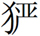
狁 ①206.9。“狸猫换太子” ③164.4；⑤362.4。
“胸中不正，则眸子眊焉” ③434.2；⑤194.18。
脏躁症 ⑤613.3。
“脑膜炎” 见“鲁迅患脑膜炎的谣传”。
“脑子里给别人跑马” ③464.12；⑤496.3。
逢蒙射羿的传说 ②383.10；④631.2。
“饿死事小失节事大” ①132.9。
“恋爱”和“鲤鱼”双关语 ⑩228.2。
高岑 ⑦163.3。
“高照” ②274.13。
“高跷” ②274.14。
高丘无女 见“返顾高丘，哀其无女”。
“高头讲章” ③165.10。
高长虹指责韦素园 ②382.8；⑥71.6；⑧192.15；（11）175.7，595.1。
高长虹称赞周建人 （11）649.3。
高长虹自比亚拉借夫 ⑧190.6。
高长虹自比绥惠略夫 ③402.9。
高长虹要鲁迅学果戈理 ⑧190.6。
高长虹争“他妈的”之发明权 ⑧191.14。
高长虹诬蔑鲁迅反对批评 ③415.4。
高长虹关于“太阳”、“爱人”的议论 ③521.2；（11）282.1。
高长虹要未名社诸君接触罗曼·罗兰 ⑧190.6。
高尔基谈大众语是文学的毛胚 ⑤558.6。
高尔基谈巴尔扎克小说中的对话 ⑤560.2。
高仁山称不许兼任教员干涉学校事务 ③128.7，169.2。
“郭歌里” ①420.2。
“郭巨埋儿” ②267.24；③224.3。
郭沫若谈“国防文学” ⑥561.12。
席子 ②481.5。
“席卷天下” ⑤569.3。
“效颦” ①433.3。
“离骚”的含义诸说 ⑨389.6。
《离骚》的不同评价 ⑨390.10。
唐餐间 （11）283.1；（12）18.3。
唐餐楼 见“唐餐间”。
唐虞之世 ⑥380.5。
唐宋八大家 ③121.4；⑤474.9；⑥106.3。
唐有壬的信札 ④197.11。
唐宣宗放宫人 ⑩155.7。
唐人小说的分类 ③254.34。
唐朝火烤醋灌的酷刑 ⑤18.4；（13）119.6。
唐弢文章被误为鲁迅之作 （12）506.7。
唐朝砍下臂膊布施的和尚 ①373.3。
“站在云端里呐喊” ⑥179.6。
“剖西瓜”的恐吓 ④467.6。
剖南山之竹，会有穷时 ⑩481.10。
“旁观” ⑩319.16。
“畜生” ③78.6。
“畜神奇于温厚，寓感怆于和平”等语 ⑨418.24。
“悖谬” ⑥433.8。
悟新秋于坠梧 ⑧371.6。
“悔其少作” ⑦6.2。
“悔不该，酒醉错斩了郑贤弟” ①557.35。
阃 ⑤293.8。
烧香拜龙 ⑤573.7。
烟篆 ②231.8。
“烟士披里纯” ③164.8；⑤293.4；（12）510.2。
“羞恶之心” ⑧244.6。
凌叔华剽窃小说图画的问题 ③256.43，495.3。
粉本 ⑦351.3。
兼爱无父 ②481.9。
“资本家的乏走狗” ④253.2。
“资产是文明的基础” ④221.28。
“酒酣耳热而歌呜呜” ③266.3。
浙派篆刻 （12）489.4。
浙水的涛声 ②407.39。
消魂 ⑧537.6。
涅伏 ⑦6.5。
涅槃 ③49.13；④504.14；⑧237.15；（11）174.3。
浩歌 ⑦453.4。
海子 ②496.4。
海青 ⑥603.6。
海禁 ①58.4，322.2。
“海乙那” ①455.7。
海山仙馆 ⑧130.3。
“海宁观潮” ⑤595.2。
海州常山 ⑧46.6。
海关外人 （11）114.2。
海草国门碧 ⑦450.3。
“海岳精液，善生俊异” ⑧42.3；⑩36.2。
海克尔谈人和人的差别 ①256.8。
海克尔谈罗马教史之大欺罔 ①20.21。
海婴出生被骂了两三回 （12）254.3。
《海上花列传》人物皆有所指说 ⑨277.14。
“浮世绘” ④311.11；（13）373.2；（16）128.4。
浮一大白 （11）79.6。
“流火” （13）227.4。
“流产” ③147.9。
流沙 ②466.11。
流质力学 ①36.9。
“流弊流弊” ⑦82.7。
润笔 ①568.7。
“浴盘的水糟了就连小宝宝也要倒掉” ⑤388.4。
浪漫古典 ④230.4。
“害马” ③389.2；（11）82.4；（12）7.2，340.8；（15）611.7。
“请君入瓮” ①296.19；③253.27。
请酒开会 ③204.6。
“请大家认清界限”等语 ⑧178.8。
诺亚方舟 ①62.40；⑦348.7。
诺贝尔奖金 ⑦207.44；（12）74.1。
诺亚时洪水之难 ①21.29。
读曲歌 ⑥111.37。
“读经救国” ③141.12，155.2。
“读游侠传即欲轻生”等语 ⑨440.26。
“读书者”、“思索者”和“观察者”的议论 ③464.11。
被炉几 （14）342.3。
“被侮辱和被损害的” ⑥529.6。
“被发大叫，抱书独行”等语 ⑦6.4。
“被昏蛋所称赞，不如战死在他手里” ⑥303.4。
冥昭瞢暗 ①19.16。
“谁能为此谋？相国齐晏子” ③318.4。
“调和”说 见“绍伯攻击鲁迅‘调和’”。
谈风月 ③266.3。
“谈人闺阃五十过” ①284.6。
“谈言”宣言停止讨论大众语 （13）181.4。
“剥猪猡” ②430.24。
“剥极必复” ⑥62.15。
剥制的鹿 ①359.8。
展堂同志血压高 ⑦402.6。
“剧秦” ⑤225.6。
弱水 ①353.2；③49.11；⑧20.4。
陵天毁羽翮的故事 ⑦136.2。
蚩尤“即赤化之祖” ②404.18；③355.13。
蚩尤的脸子不能印在文章上 ①206.8。
陶宅 （16）619.4。
陶然亭 （15）4.9。
“陶斯道” ①421.5。
陶元庆纪念堂 （14）142.1。
陶潜关于“死”的诗文 ③553.70。
陶潜令官田种秫的故事 ⑥178.5。
陶孟和谈“现代教育界的特色” ③218.19。
陪都 ⑤35.10。
能力保存说 ⑦26.3。
“能创窈窕之思” ⑨81.18。
“能言距杨墨者，圣人之徒” ④56.9。
“通人” ③6.5。
通事 ③454.8。
“通虏” ④198.12。
“通品” ③6.5，187.7。
通幽 ①38.27。
“通海” ④198.12。
“通信从缓”等语 （13）171.1。
桑门 ⑧39.32。
桑间濮上 ①379.4。
绣像 ②293.14；④311.9；⑥462.5；⑦428.4；⑧361.3，414.5；⑩370.14；（12）426.3。
骏骨 （13）106.3。
十一画
理学 ②22.3；③225.4；⑤500.2；⑦328.4。
域外奇书，沙中残楮 （12）323.3。
《域外小说集》的寄售处 ⑩179.2。
《域外小说集》译文被抄袭 ⑩179.7。
“教坊” ⑤229.6；⑥184.35，199.12。
教士的公证 ③105.14。
教堂斯拉夫文 ④395.3。
“教育之前途棘矣” （11）509.1。
教人安分的老婆子 ③379.6。
教育家提倡民族主义 ③365.7。
教员要薪水“不清高”之说 ③38.4。
《教科书大倾销》引起的争论 （12）423.2。
《教育纲要》“说帖”讨论的各种意见 ⑧64.2，64.3，64.4。
“教员一手挟书包一手要钱不高尚” ①568.5。
培根（弗兰西斯）谈研究的方法 ①41.64。
培根（罗吉尔）谈造成人类无知的四原因 ①40.46。
职方氏 ⑨14.23。
基督 ③116.14。
基础系统 ⑧22.16。
“著之竹帛” ①554.11。
勒浪 ⑥288.4。
黄历 ②69.2。
黄鸟 ⑩298.13。
黄族 ⑩166.12。
“黄伞格” ①558.47。
“黄祸”论 ④330.12；⑤355.2；⑧40.42。
“黄口小儿” ③229.5。
黄元工房 （14）366.2。
黄羊祭灶 ⑧533.2。
“黄香扇枕” ②266.19。
黄帝乐词 ⑨370.22。
黄神啸吟 ⑧23.36。
黄神徙倚 ⑥204.3。
黄胖摏年糕 （11）410.2。
黄帝伐蚩尤 见“轩辕氏戡蚩尤”。
“黄书”文士的手杖 ④447.6。
黄巢时候人相食 ④86.8。
“黄仲训霸占公地” ③415.3。
“黄昏到寺蝙蝠飞” ⑤214.7。
“黄帝之灵或当不馁” （11）332.11。
黄坚等人散布的谣言 ③421.7，479.12。
“黄金万两”拼成的怪字 ③11.9。
“黄帝即亚伯拉罕”的考据 ③356.20。
黄震遐受了傅彦长的熏陶 ④329.9。
“萌科学之芽” ⑤353.2。
菊月吉旦 ②86.4。
营卫 ⑧37.9。
营搰 ①59.13。
营造尺 ③575.6。
乾隆的“无名臣亦无奸臣”说 ⑥61.11。
“乾隆皇帝是海宁陈阁老的儿子” ⑤595.3，596.5。
萧艾 ⑦469.3。
萧索 ⑧37.6。
萧三给“左联”信 （13）602.1。
“萧伯纳宣传共产” ⑤41.4，444.2。
萧军不必加入“左联” （13）544.2。
萧军拟作鲁迅漫画 （13）423.1。
萧伯纳答“打听印象” ⑤326.3。
萧伯纳与梅兰芳的问答 （12）376.4。
“萧伯纳——是个伟大的惊叹号‘！’” ④587.10。
萧纯锦为捣乱会场辩解的启事 ③182.14。
菰蒲 ⑦470.2。
菑 ⑧24.39。
械具学 ①37.11。
梦为隐士渔樵的名人 ④485.7。
梵文 ⑥430.5。
梅姑庙 ②274.16。
“梅郎”之流 （13）49.6。
梅兰芳赴苏催进“象征主义”之说 ⑥41.3。
梅兰芳等为时轮金刚法会演出的报导 ⑤477.4；⑦474.4。
梯 ⑧528.4。
“梯子”之论 （12）228.1。
梭罗古勃所写的早熟的少女 ④579.3。
啬夫 （11）433.3。
曹操杀孔融 ①148.19；③544.28。
曹操的遗令 ③542.15。
曹操的求贤令 ③541.13。
曹操七十二疑冢的传说 ⑤485.7。
曹操尸不在七十二冢之说 ⑤486.9。
曹公子的演说 ②482.14。
曹丕评论孔融 ③544.26。
曹娥投江觅父 ②348.15。
曹白函询鲁迅病情 （14）109.2。
曹聚仁对《蜜蜂》的批评 ④553.2。
曹聚仁征求大众语意见的信 ⑥80.1；（13）189.1。
副放射线 ⑦29.34。
殒颠 ②208.3。
龚果尔奖金 ⑤608.7。
袭用《金瓶梅》取书名方法的小说 ⑨202.1。
雪莱关于“死”的话 ①113.113。
雪莱自言“吾诗为众而作” ①113.107。
描红纸 ①461.2。
掉文袋 ③90.3；⑤530.5。
辅车相依 ④272.9。
“排货” ③105.16。
排错讲义千余条 ⑧300.5。
推事 ⑤261.4。
“捭阖飞箝，今之常态”等语 ③117.21。
“掏腰包”自办刊物 ⑥411.5，415.5。
“掠袖擦掌” ③68.3。
接脚 （11）423.8。
掷瓶礼 ④616.4。
救世主 ⑥15.13。
“救救老人”等语 ⑧178.8。
“救国必先求学”的名言 ③173.4。
“虚君共和” ①130.2；⑤401.6。
“虚无的反抗者”等语 ⑥274.77。
堂·吉诃德掘坟 ⑦426.5。
堂·吉诃德战风车 ④536.3。
常燕生称《狂飙》停刊是鲁迅的阴谋 ④115.10。
常燕生讥评鲁迅作品还有“十年生命” ④278.2。
野蓟 ②230.6。
野火饭 （16）379.4。
“《晨报副刊》特约撰稿员” ③455.12。
“眼学” ②273.11。
眸子能判断人心之说 见“胸中不正，则眸子眊焉”。
“悬剑空垅” ⑥606.6。
“悬诸日月而不刊” ⑥378.13。
曼陀罗花 ②206.5；③390.7；⑩219.6。
唵 ④609.9。
“啮镞法” ②384.11。
唱歌迎邹韬奋 （13）572.1。
“唱尽新词欢不见” ⑦160.3。
“唯识” （11）174.3。
“唯饭史观” ③607.11。
“唯女人与小人为难养也” 见“惟女子与小人为难养也”。
“唯辟作福，唯辟作威，唯辟玉食” ①219.5。
啸唫阮宅 （15）423.2。
崇陵 ⑦455.2。
崇效寺 （15）65.2。
崇奉关岳 ③359.43；⑤530.4。
“崇拜创作” 见“翻译是媒婆，创作是处女”。
崇拜孔丘关羽 ①350.5。
“崇拜失败的英雄”等语 ⑥529.10。
崇拜教授名流的脾气 ⑦82.8。
“婴儿杀戮” ⑤359.6。
婴孩自己药片 （12）244.9。
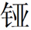
二硫 ⑦28.20。铜盏 ②75.3。
铜和银 ②203.2。
铜钱祀鬼的习俗 ⑤461.6。
“铜板换角子，角子换大洋” ③598.9；（11）168.4。
银氏 ⑧458.5。
银绿二 ⑦28.26。
笛福带架示众 ⑤365.6。
笛卡尔谈几何学方法 ①41.65。
“笙歌归院落，灯火下楼台” ③569.8；⑥453.21。
第四阶级 ④70.17。
“第四阶级文学家” （12）110.5。
第三顶“纸糊的假冠” ③411.5。
犁然 ①19.13；⑩169.4。
“犁然有当于心” ⑩169.4。
移祸东吴 （11）88.5。
偾事 （12）194.2。
“做鸡蛋糕” （11）584.3。
“做好白话须读好古文”的议论 ①304.4。
“偃武修文” ④348.2；⑤90.6。
悠悠我思 （11）372.3。
“悠哉游哉，聊以卒岁” ⑥233.3。
偈子 ④504.13。
兜牟 ①59.9。
“假名” ⑥112.43。
“假想敌”之说 ⑥454.37。
“假冒王麻子灭门三代” ⑤63.9。
盘古开天劈地 ①19.15。
斜角纸 ②111.12。
盒子炮 ②220.2。
敛衽 ②86.4。
彩票 ①569.11；⑤255.5。
翎子 ⑥62.13。
“象意” ⑥107.15。
“象牙之塔” ②264.8；④196.5；⑥420.2；⑦122.5；⑧231.12；⑩273.6。
“象征主义” ⑥41.3。
“逸兴遄飞” ①355.2。
“猫鬼” ②248.21。
“猫婆” ②248.20。
“猗欤休哉” ③91.11。
祭酒 ②430.28；（11）365.6。
祭司长 ②180.5。
“祭如在祭神如神在” ①206.6。
“庶几得免于罪戾” ④197.8。
麻将 ①557.37。
鹿台 ②429.17，497.12。
鹿奶的传说 ②431.33。
“康党” ①295.7；③287.3。
“康白度” ⑤280.4，552.8。
“康圣人” ③20.5。
康缪尼斯脱 ⑥610.2。
康有为谈外国常有“弑君”的原因 ④560.8。
章和 （11）434.4。
“章士钉” （11）93.2。
“章疯子” ③116.18。
章士钊谈政法 ①271.34。
章士钊五七呈文 ③69.5。
章士钊主张读经 ③140.2，155.2。
章士钊压迫北大 ③169.8。
章士钊谈“开倒车” ③230.13。
章士钊潜逃天津 ③226.14，318.9，607.9。
章士钊在保障“民权” ⑤582.2。
章士钊暗地做总长 ③169.7。
章士钊挽孙中山的对联 （11）57.3。
章士钊等逃匿东交民巷 ③607.9。
章士钊侮辱女学生的呈文 ①285.13；③134.5。
章士钊谈吴稚晖的白话文 ③229.5。
章士钊关于“二桃杀三士”的辩解 ③319.10。
章士钊称藏书为示威群众所毁 ③206.16。
“章小人nin”时代 （11）437.3。
章学诚攻击袁枚 ⑤265.3。
章廷谦之父被拘捕的谣传 （12）63.8。
章衣萍讽刺感叹号是“亡国之音”说 ⑦241.3。
章炳麟的狱中诗 （14）155.2。
章炳麟与梁启超的论争 ⑥569.11。
章炳麟对蓝公武的批评 ⑥570.13。
章炳麟谈“七被追捕”等情况 ⑥571.19。
章炳麟斥责吴稚晖的“献策” ⑥569.12。
章炳麟指责吴稚晖“诈为自杀” ⑥580.8。
章炳麟谈“用宗教发起信心”等 ⑥570.15。
“商人与贼” ⑧395.5。
望帝 见杜鹃。
“望江南” ⑩146.9。
“望门投止思张俭” ⑥182.23。
“率尔而对” （11）25.5。
“情面者，面情之谓也” ③266.4；（12）100.3。
“悻悻的狗” ③251.18。
悼柔石诗 （13）307.1。
惟精惟一 ⑥204.6。
“惟女子与小人为难养也” ④616.2；⑤152.4，471.6。
惊叹号是“亡国之音”说 ①205.3；③33.6；⑦242.7；⑧164.2。
阏逢 ⑩37.11。
“粗疏的美人” ⑧299.3。
“断发文身” ⑥581.11。
断指和晕倒 ③105.17。
剪柳春风 ⑦159.2。
剪集报载的谣言 （14）45.3。
“减膳”执政 ③226.13。
兽环 ②482.18。
兽炭 ②453.15。
敚 ⑧90.19。
“敝精神于无用之地” （11）156.2。
“盗泉” ⑥133.9。
“清言” ④593.6。
清流 ①297.22。
“清道” ③513.18。
“清一色” ②87.17。
清平山堂 ①161.26；⑥360.3。
“清封什么人” ⑦300.2。
“清封什么大夫” ⑦300.2。
《清人杂剧》的广告 （12）470.1。
清刻《容斋随笔》的删削 ⑥199.18。
“清算无益之抗日”等语 ⑤161.4。
清重帖括而有“且夫”“然则” ③225.5。
“淌牌” ①383.2。
混成旅 ③70.19。
“混沌初开，乾坤始奠”等语 ⑤272.5。
“涸辙之鲋” ①172.9；⑥508.8，510.2。
淦 ③69.6。
“淡淡的血痕中” ③480.18。
深文周纳 ③287.6。
“婆理” ①297.21。
梁尘踊跃 ⑦160.4。
梁实秋谈“人性” ③582.2。
梁实秋谈人的差别 ③579.5。
梁实秋攻击“骂人的人” ⑥213.3。
梁实秋攻击“硬译”、“死译” ④217.4；⑥285.4。
梁实秋批评两首译诗 ④219.17。
梁实秋等讥讽鲁迅怕死 ④556.5。
梁实秋反对文学写人力车夫 ⑦122.6。
梁实秋不愿因他而牵连白璧德 ④429.6。
梁实秋谈穿橡皮鞋是“第三种人” ⑤214.9。
梁实秋歪曲阶级斗争学说 ④220.25。
梁实秋谈文学表现基本人性 ④222.30。
梁实秋翻译马克思著作片断 ⑤590.6。
梁实秋反对以文艺为斗争的武器 ④224.35。
梁实秋在青岛大学取缔鲁迅译作 ⑥450.3。
梁实秋谈作者的阶级与作品无关 ④222.31。
梁实秋翻译莎士比亚剧本得高酬 ⑤602.4。
梁实秋关于革命不能永久等议论 ④221.29。
梁实秋谈无产文学理论“比天书还难” ④220.21。
梁实秋谈好作品是少数人的专利品 ④223.34；⑤563.4。
梁实秋谈无产阶级不应争夺文学领域 ④225.43。
梁实秋谈无产者应辛辛苦苦地取得资产 ④220.25；⑤279.2。
寅半生大骂林译《迦茵小传》 ④312.14。
“寄沉痛于幽闲” ⑥320.3。
“寄意一言外，兹契谁能别” ③338.23。
窒扶斯豫防药 （15）302.1。
密里 ⑦29.33。
密栗 ①107.42。
“密斯” ③366.15；④344.2；⑤477.9；⑥77.11；⑧244.4。
密达尺 ③575.4。
“密斯偷” （12）364.3。
“密斯得” ③366.15。
密里格兰 ⑦28.29。
“密集突击” （13）560.1。
密茨凯维支会见歌德 ①116.146。
“谋隐谋官两无成” ⑥234.8。
谑画 ⑦214.107。
“祸水灭火” ⑨43.17；⑩155.12。
谒灵 见“谒陵”。
谒陵 ⑦400.2，455.2。
“谓偷闲学少年” （11）67.6。
《隋志》录《后汉书》八家 ⑩8.13。
《隋书》《经籍志》所著录的别集 ⑩82.2。
《隋书》《经籍志》所载会稽典籍 ⑩36.3。
堕民 ⑥199.12。
堕裀 ⑧539.7。
“堕马髻” ④533.2。
“堕落文人” ④492.4。
堕民的“解放” ⑤230.10。
堕三都，出藏甲 ④55.5。
随喜 ①342.6。
“随波逐流”的玩意 ⑤605.5。
随文帝恶随从辵之说 ⑧85.17，85.18。
“随语成韵，随韵成趣” ⑨418.24。
 ⑨26.7。
⑨26.7。
隐鼠 ②248.18。
“隐君子” ⑥234.6。
“娵隅跃清池” ⑥180.11。
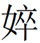
③127.2。绪言 ⑦450.6。
“绮语戒” ①428.9。
骑士精神 ④536.2。
绰古辣 （16）6.10。
“绳其祖武” ①109.66；③21.10。
“维止”之事 （14）76.1。
维他命W ②404.17。
绵连 ①410.3。
绿营兵 ②220.2。
绿林大学 ②331.20。
绿林书屋 ③7.12。
十二画
“琴心”问题 ③84.6；⑦78.4，284.4；（11）52.4。
“琴心”批评“芳子” （11）57.10。
“琴心”批评向培良 （11）53.5，57.10。
“琴心”的红绿信纸抒情诗 ⑦284.5。
琼 ⑦234.15。
“替天行道” ④161.10。
越女 ⑦160.2。
越吟 ⑦148.2；⑧370.2。
越王城 ⑩37.9。
越界筑路 ④581.2。
越俎代谋 ①269.18。
“趋时” ⑤565.3。
超人 ⑩484.4。
超形气学 ①60.21。
“超时代”说 ④86.6。
“超然象外” ③355.14。
喜神 （12）454.3。
“喜笑怒骂，皆成文章” ④467.8。
博物 ③463.3。
裁厘加税 ③502.12。
“联合战线”（霉江语） ③280.4。
“联合战线” ⑥620.2。
联华书局有关鲁迅等人著译的广告 （14）166.1。
“斯基” ⑥202.32。
斯拉夫文人 ⑩501.5。
“斯亦不足畏也矣” ①557.40。
期期 ⑧299.4。
“散胙” ①430.4。
散拿吐瑾 （11）126.2；（13）333.1。
“散漫”居士 （14）272.1。
募捐救国 ②484.26。
董仲舒的祈雨法 ⑤578.3。
敬鬼神而远之 ④25.3。
蒋腿 （12）171.3。
蒋光慈谈中国的重译 ④227.57。
萱帏 ⑧541.4。
“落伍” ④67.2，77.5；⑧307.6；⑩319.13；（11）302.4。
“惪”字解 ⑥377.6。
韩彭报施之说 ⑧216.4，217.7。
韩侍桁和徐懋庸的辩论 （12）527.1。
朝笏 ①576.4。
朝议大夫 ⑧122.3。
朝北的楼上 （12）464.3。
朝南的房子 （12）464.3。
朝阳等五校给段祺瑞的呈文 ③180.6。
辜鸿铭赞小脚 ⑧432.2。
葭思 ①339.2。
“棒喝主义者” ④8.8。
森林民族 ⑧20.9。
焚《史记》于国子的故事 ⑧222.4。
椒兰 ⑥453.27。
椒芽葅 （16）380.14。
皙人 ①58.4。
惠格纳讲训练动物 ⑤385.2。
“逼死”别家副刊 ③251.16，318.6。
“厨川白村的灰色” ⑧192.21。
厨川白村对于文学的见解 ⑩279.3。
厨川白村谈创作不必亲身经历 ④314.31。
厦门的石屋 ②356.5。
厦门大学革新的消息 ③415.6。
厦门大学要夫妇分居的谣言 （11）627.3。
皕宋 ③49.15。
“硬译乱译”、“不知所云”等语 ⑤275.2。
确荦 ⑧22.23。
雁鹅为礼 ②466.9。
厥目之坚 （11）336.5。
“厥土下上上错厥贡苞茅橘柚” ②292.12。
“揩油” ④311.12。
揩洋商的油 ⑤270.2。
“暂署佥事” ③254.30。
“暂勿离粤，以俟开审” ③471.10。
“提破” ①160.16。
“提倡风雅的封藩大臣” ③208.26。
插棘 ⑧539.4。
搥 ②134.9。
雅命三种 （13）123.1。
髡 ①489.3。
“紫色
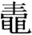
声，余分闰位” ④631.7。“悲哉秋之为气也” ⑤332.2。
“凿壁偷光” ⑥54.4。
最人涅伏 ⑦29.41。
“最合时的书” ⑧409.2。
遇了洪乔 见“付洪乔”。
“遇见森林，可以辟成平地” ⑦93.2。
景行 ⑩37.10。
景教 ①58.3；⑧39.29。
景教父师 ①58.3。
景清被剥皮 ④601.5；⑥181.19。
“嵌字格” ③502.10。
“遗臭万年” ⑤13.7。
赋 ⑤68.9。
赋九篇 ⑨392.22。
赋萌于《骚》说 ⑨392.24。
“赋得革命，五言八韵” ③569.9。
赋得“冬至阳生春又来” （12）510.1。
赐同进士出身 ⑤93.7。
“赐也尔爱其羊，我爱其礼” ⑤324.8。
“黑土” ④479.25。
黑臀 ①267.9。
黑口本 ②218.4。
“黑幕小说” ⑨305.25。
“黑暗与虚无乃是实有” ②170.1。
骫骳 ⑨428.20。
“喀杰特” （12）279.5。
销毁友人信件 （13）575.2。
《铸剑》黑色人的歌 ②452.11。
《铸剑》故事的出典 （14）31.2，386.1。
锄烧 （16）328.2。
“短毛” ⑥201.25。
短书 ⑦429.12。
“短书不可用” ⑨11.3。
短柱天净纱 ⑤60.5。
“智者千虑必有一失” ⑤293.5。
犊鼻裈 ⑥643.10。
等身 ②199.2。
等身著作 （11）67.7。
策论 ⑤599.2。
嵇康怠慢钟会的故事 ③551.64；⑥349.5。
“嵇康师心以遣论，阮籍使气以命诗” ③552.66。
程朱 ⑨262.7。
程门飞雪 （11）540.2。
程雄家婢故事 ⑩97.4。
程演生与章衣萍的聘约争执 （11）315.2。
傎 ⑧38.25。
傅斯年关于“理想家”的议论 ①335.2。
蜑户 ⑩288.13。
《集外集》重出之文 （13）394.2，590.4。
《集外集》被删的文章 （13）363.2。
《集外集》书名被颠倒 （13）364.5。
《集外集外集》的拟名 （13）385.4。
储蓄票 （15）146.1。
“粤若稽古” ①408.4。
粤军阵亡将士纪念碑 ⑦452.3；⑧199.4。
奥陶纪 ⑧22.19。
“奥伏赫变” ④71.21。
御沟 ⑩155.6。
御车女 （14）269.2，426.2。
御赐菜帐 ③357.30。
“御女”长生之说 ⑤254.3。
“循规蹈矩”之道 ③502.7。
“舒愤懑” ⑥199.13。
番 （15）320.2。
番地 （11）332.24。
番饼 ②86.7。
番番良士 ⑧43.12。
释迦牟尼见宫女睡态而出家之说 ④152.3。
“貂不足，狗尾续” ⑤296.5。
腊丁 （11）332.20。
欿然 ①63.47。
鲁拜 ⑩318.10。
“鲁迅翁” （13）400.4。
鲁迅病重之说 （13）509.1；（14）145.2。
“鲁迅相当于杜甫” （14）327.1，327.2。
“鲁迅被捕”的谣言 （12）252.1，254.1，257.2，261.3。
“鲁迅不懂唯物史观” 见“根本不懂唯物史观”。
《鲁迅全集》出版广告 （14）224.1。
“鲁迅是不朽了”等语 ④116.19。
鲁迅漫画像被禁用 （13）437.3。
鲁迅与门肯相像之说 ④429.4。
鲁迅“公馆在租界口上” ⑩319.18。
鲁迅逃到青岛的谣言 （14）254.2。
鲁迅受聘中大的报导 （11）213.1。
“鲁迅是第几阶级的人？” ④70.13。
鲁迅患脑膜炎的谣传 ⑥404.2；⑦471.1；（13）44.1，49.1，252.1；（16）441.4。
“鲁迅遁往香港”的谣传 （13）45.2。
鲁迅与许广平相爱之事 （11）547.2。
“鲁迅即教育部佥事周树人” ③253.29，401.4；⑤6.7；⑧403.7。
“鲁迅始于‘呐喊’而终于‘彷徨’” ④178.13。
《鲁迅翁之笛》引起的小风波 ⑤432.9。
鲁迅等将离开厦门大学的传言 （11）627.1。
“鲁迅是一个深刻的思想家”等语 ③401.3；⑧178.4。
“鲁般门前掉大斧” ⑦250.4。
鲁共王坏孔子旧宅得藏书之说 ⑨368.13。
猹 ①511.2；（12）163.2。
猩红色的栀子 ②168.2。
“猩猩与猩猩战” ④225.46。
猴头 （14）137.2。
“颍考叔可谓纯孝也已矣”等语 ②309.12。
“蛮子骨气，江浙人不大懂” ⑧432.1。
“敦伦” ⑥179.9。
敦睦邦交 ⑥659.2。
敦煌千佛洞 ⑦428.3。
惰民 见堕民。
“慨自欧风东渐以来” ⑤400.2。
“阔的聪明人种种譬如昨日死” ③558.5。
焰口 ②309.17；⑤299.4；⑥603.3。
焰摩天 ②284.12。
善书 （11）638.3。
善生 ①107.50。
善女人 ②23.14。
善知识 ④609.8。
善种学 ①147.11。
羡画 ⑧89.14。
普罗 见“普罗列塔利亚特”。
普罗文学 （12）314.1。
普罗列塔利亚特 ④218.8；⑧306.2；⑩359.29；（12）314.1。
“普天之下，莫非王土” ②431.30；③270.3。
普洛克路斯忒斯之床 ⑥230.8。
“普通的批评看去象广告” ⑧189.2。
“普罗塔列亚特苦理替开尔” ⑩392.3。
“普罗列塔里亚特意德沃罗基” ⑩318.9。
“粪车” ③252.24。
尊王攘夷主义 ①283.3。
尊孔子拜活佛者 ⑥54.8。
道台 ①511.7。
道场 ⑦473.2。
道学 ①332.9；③50.18。
道冠 ②496.3。
道情 ④28.23；⑤500.5。
道学先生 ②267.31。
“道路以目” ④516.4；⑤77.6。
“道可道，非常道” ②467.20；⑦42.3。
“道不同不相为谋” （11）57.4。
“道不行，乘桴浮于海” ④56.11，311.4；⑥332.16；⑦328.8；⑧236.7。
道登谈文学的作用 ①107.49。
道士诡称长生不老的故事 ⑤400.3。
“道家者流皆出于史官”等语 ⑨379.7。
道学先生以“和尚”为小儿贱名的故事 ⑥603.2。
遂古 ①106.40。
曾今可自辑“好评一束” ⑤233.6。
曾今可自白可怜和无用 ⑤257.2。
曾今可退出文坛的启事 （12）420.5。
曾今可用崔万秋之名为自己诗集作序 ⑤195.20，233.6；（12）416.4。
湘灵鼓瑟 ②482.17。
“湘省共产党省委破获”的报导 ④108.2。
“湮” ②405.30。
“温柔敦厚” ②431.29；⑤60.3；⑨372.37。
游仙诗 ⑨397.6。
游戏三昧 ③164.5。
游侠的“死”的观念 ④161.5。
“割去舌头” （11）61.3。
“割股疗亲” ①148.18，456.10。
“割不正不食” ④524.10；（11）25.6。
“富有天下” ③47.2。
富家赘婿 ⑤596.7；⑦442.16。
“富是使个人加强的”等语 ⑦109.10。
富翁想进天国比骆驼穿过针眼还难 ④574.6。
谟 ③38.1；⑨368.9。
“遍掘七十二疑冢，必有一冢葬君尸” ⑤485.8。
“裤子后穿” ⑤126.3；⑥580.8。
“裙带官儿” ⑤30.3。
谢小娥故事的平话 ⑨92.14。
谢承虞预为讥于世 ⑩37.7。
“谣言不可信，大批要人来” （13）574.4。
“谦逊之力” ⑦109.9。
属对 ⑦233.3。
孱头 ③53.2。
强水 ⑤390.2。
“强聒不舍” ③28.6；④397.13。
强汝询谈小说 ③359.42。
“巽语之言，能无说乎” ⑥128.4。
“隔壁戏” （15）253.5。
媟黩 ①285.13。
登假 ⑦162.2。
“登徒子” ⑥180.10。
登楼陨涕 ⑧537.5。
“骗一口饭” ③183.17。
缇萦救父 ③118.27。
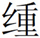
出 （15）215.5。编丛书 （13）277.4。
缘督 ①60.24。
十三画
魂魂 ⑦19.27。
鼓铸 ⑦18.13。
“鼓动学潮” ③166.18。
跫然的足音 ③408.3。
“塘报” ②274.12。
蓝尾 ⑧539.8。
蓝翎 ⑤282.2。
蓝青官话 ③420.2。
墓碣 ②208.2。
幕府时代 ⑤18.2。
“蓬鬓荆钗世所稀”等语 （12）54.5。
蒲陶 ①211.2。
蒲鞭 （12）530.3。
蒲松龄强执行人谈异闻的故事 ⑨225.5。
蒙泉剥果 ④56.8。
蒙古人焚燹的记载 ⑥15.11。
“傒父之蛊” ②406.32；⑥294.9。
楷书 ⑥107.16，294.11。
楚辞 ⑦140.5；⑨389.2。
楚虽三户必亡秦 ⑨400.3。
楚霸王饮酒作诗 ③191.3。
禁称“密斯”的主张 ⑥77.11。
禁止中学生使用“时髦字眼”的主张 ⑤575.2。
槐蚕 ②177.2。
榆关 ⑤12.3。
“榉树，山中处处有之”等语 ⑩298.12。
 ①23.43。
①23.43。
“感慨系之矣” ④37.6。
碓 ⑧59.4。
“碎割”之说 （13）95.10。
“碰壁” ②283.10。
雷峰塔 ①181.2。
摄提格 ⑩37.11。
“摸金校尉” ⑤485.6。
“搢绅先生难言之” ①401.10。
“摅怀旧之蓄念，发思古之幽情” ③456.18；⑤602.8；⑥200.23。
“搬到外国去” ③90.2，146.3。
频那夜迦 ⑩481.8。
虞预本名犯讳之说 ⑩18.4，39.2。
虞喜驳难郑玄谯周等 ⑩27.3。
“睹史之陀” ①400.5。
“睚眦之怨” ②265.14；③318.7，606.5。
“嗜痂之癖” ①424.2。
愚人节 （13）69.1。
“愚者千虑，必有一得” ⑤512.3。
暖国 ②186.2。
暖红室 ⑩132.11。
“歇后郑五作宰相，天下事可知” ⑥628.3。
照影成三 ⑦19.19。
跨灶 ④619.9。
“遣唐使” ⑩275.21。
“蜗牛庐” ④196.6；⑦468.2。
跪香 ④565.2。
路透社报导北京学界的新旧冲突 （11）375.11。
“路漫漫其修远兮，吾将上下而求索” ④471.9。
“跳加官” ⑥643.9。
“跳黄浦” ⑥109.25。
“跳到半天空”等语 ②264.5。
鄙倍 ⑦429.7。
罪齐田恒 ④55.4。
罪状十条 ④103.9。
“罪孽深重不自殒灭” ①242.19；②300.11。
“罪孽深重祸延父母” 见“罪孽深重不自殒灭”。
蜀石经 ③594.22。
嵩山三阙 （13）151.3。
错 ③11.8。
锦帙 ①410.3。
锦绘 （16）406.12。
雉堞 ②452.6。
筹安君子 ⑧108.5。
签子手 ②467.17。
简放 ②403.14。
简狄吞燕卵生商的传说 ⑨25.2。
稘 ①113.108。
稗史 ⑩360.2。
稗官 ⑩4.2。
“愁眉啼妆” ④533.2。
魁星阁 ②158.5。
魁星像 ②265.11。
“微行” ⑤213.2。
“微服” ⑤137.6。
《微言》“改组启事” ⑤391.8。
鉤拒 ②482.11，483.24。
“貉子” ①249.9。
“遥遥茫茫的目的地” ③496.8。
“腰斩张资平” ⑤193.10；（12）430.1。
“腹地” ⑤105.4。
觥觥大谈 ⑩166.13。
触著 ⑩244.7。
“解散方” ③547.42。
“猿公”的故事 ⑤258.4。
 来带者 （11）627.9。
来带者 （11）627.9。
瘄子 （11）356.2；（15）286.1。
“新戏” ⑤362.3；⑩417.23。
“新坑” ②158.6。
新闻 ⑩205.4。
新宫 ⑦145.3。
新党 ①197.9；②22.4，310.27；⑤344.3。
新剧 （15）8.2。
新土地 ④342.8。
新大陆 ⑤35.11。
新华门 ①568.6。
“新娘茶” （13）405.2。
新月博士 （14）2.2。
新旧三都 ④437.3。
新亭饮泣 ⑤258.5。
“新定画帖” ⑩460.2。
新台门周家 （13）262.2。
新江户艺术 ⑩245.11。
新经济政策 ④448.10；⑩356.6，385.18。
“新流氓主义” ④311.10。
新拉马克主义 ④257.6。
“新鬼大，故鬼小” ⑤323.4。
“新时代的青年” ③422.11，501.3，521.2。
“新时代”的“文学家” ⑤232.5。
《新生》杂志的筹备者 ①443.11。
新年第一回的《申报》 ④432.2。
新月社的声明 ④218.7。
新月社主张“宽容”的宣言 ⑧420.11。
新月社争“言论自由”的文字 ④217.3。
《新青年》六卷二号出版广告 （11）374.9。
《新青年》第五期有拙作少许 （11）362.3。
新安虞氏刊本全相平话五种 ⑨142.1。
新月书店关于苏俄的书籍广告 ④148.3。
新月社批判家憎恶“不满于现状” ④7.2，164.2，198.15，249.2；⑥213.3。
新年不停刊的报章的感慨 ⑤464.3。
意力 ①62.39。
意在投降 见“投降”之说。
“意表之外” 见“出乎意表之外”。
“意德沃罗基” ⑥451.10；⑩318.9。
意大利式的团体 （12）244.7。
意大利的教皇宫 ④461.2。
雍正令他兄弟改名的故事 ⑤216.2。
煔灼 ①17.2。
数理 ①38.30。
慈禧太后赏识谭叫天 ⑤610.2。
“慈悲而残忍的金苍蝇”等语 ⑦57.6。
满邮 （12）331.3。
“满口黄牙” ④119.6，225.46。
“满洲国地图”禁止入口 （13）387.2。
“溥仪弟妇恋奸案” ⑤144.3。
滒淖 （11）342.2。
“滥竽充数” ⑤390.3。
“塞思黑” ⑤216.2。
“塞翁失马安知非福” ①555.21。
“塞意斯完成四部曲” ④356.6。
谨避“学者” ③454.9。
福地 ⑩165.10。
福橘 ②256.3。
“裸体游行” ④360.6。
“裸体运动大写真” ⑤470.2。
“谬以千里” ③141.13。
群学 ①108.54。
“群居终日，言不及义” ④38.15；⑤459.8。
“群众领袖应负道义上的责任” ③299.3。
“殿板” ③389.4。
殿试 ③593.15。
辟邪 ①212.5。
缝纫先生要当校长 （11）68.9。
缠足见于后汉说 ④523.2。
缢鬼与溺鬼争找替代的故事 ⑧190.7。
十四画
静女 ⑦136.4。
碧云寺 见西山碧云寺。
“赘阉遗丑” ①249.10。
嘉靖 ②218.4。
嘉禾章 （15）162.2。
“截指” ④363.6。
“赫尔岑之家” ⑩358.21。
赫尔库来斯紧抱巨人安太乌斯 ⑥349.6。
“聚而歼旃” ④103.6。
“聚宝之门” ①400.5。
“斡罗斯” ⑥145.9。
蔡宅 （13）1.2。
蔡元培与林纾的辩难 （11）375.11。
蔡元培关于“埋头研究”的谈话 ③276.5。
“榛楛弗剪” ⑥454.35。
“模范县” ①296.14；②284.13。
模特儿 ④374.3。
模范的名城 见“模范县”。
槁梧 ⑧36.2。
榜人 （11）354.7。
榜陀罗之万祸箧 ⑧22.24。
歌吟动地哀 ⑦472.2。
歌德称赞拜伦《该隐》 ①109.64。
“碟仙” ⑤506.2。
“愿汝持盾而归来”等语 ⑦19.24。
“愿在丝而为履，附素足以周旋” ⑥450.5。
舆台 ①61.32；⑤522.5。
舆地 ②310.26。
“舆榇” ④363.6。
“舆论界的新权威” ⑤362.5。
“誓” ⑨368.9。
“誓不签订辱国条约” ⑤142.4，160.3。
裴多菲谈自己的写作 ①119.172。
裴多菲谈他在奥地利革命后的心情 ①119.173。
裴启《语林》记谢安语失实事 ⑥338.13；⑨69.2。
“夥颐，涉之为王沉沉者” ⑥108.20。
踊跃三百 ⑦18.17。
踆乌退舍 ⑦18.14。
蜡人和活人下棋 ④559.7。
“锲而不舍” ③157.21；（11）48.4。
锻炼 ③299.4。
锻炼周纳 ①427.4；④10.17。
箑 （16）342.5。
箪食壶浆以迎王师 ⑦233.10。
管城侯 ⑧535.7。
“管中窥豹” ③218.18。
僢驰 ①108.55。
僦思 ①38.24。
僦罗纪 ①23.51。
僧正 ①60.19。
僧伽降无支祁的附会 ⑩116.11。
僧志彻得《隋遗录》稿于瓦棺寺阁 ⑩145.3。
鼻烟壶 ②159.10。
鼻子垂下 （12）174.2。
膜拜曼殊斐儿的绅士 ④478.15。
蜰虫 （15）3.4。
雒诵 ④26.9。
“敲了旧时代的丧钟”等语 ②382.8。
塾师咏“花”的故事 ④632.9。
旗人 ①242.18；④612.3。
旗籍 ⑥61.6。
“辣椒虽辣，辣不死人”等语 ⑤77.5。
“韶乐” ⑥117.4。
端平 ①159.9。
慢藏 见“慢藏诲盗，冶容诲淫”。
慢慢交 （14）298.2。
“慢藏诲盗，冶容诲淫” ①276.5；⑧23.35。
鲞头 ②177.3。
精卫 ⑦158.4。
“精神的冒险” 见“灵魂的冒险”。
精卫先生糖尿病 ⑦403.7。
“精卫衔微木，将以填沧海” ⑥450.6。
漆妃 ⑧535.7。
漫与 ④604.1。
《漫画和生活》的“献词” （13）589.3。
“演讲录” ③557.4。
“漏巵” ⑤334.4。
赛会 见“迎神赛会”。
赛神 见“迎神赛会”。
“寡妇”舍监 ①284.10。
“寡妇”校长 ①284.10。
察入 （11）331.3。
“察见渊鱼者不祥” ③250.10；（11）34.6。
蜜蜂排衙 ②452.9。
“嫩棣棣” （11）509.2。
“缧绁之忧” ③471.11。
“缩短阵线” ⑤57.5。
“缩小像细菌放大像炮弹” ⑦242.7。
十五画
“趣味文学” 见“以趣味为中心的文艺”。
“聪明误” ④190.6。
“聪明正直之谓神” ②286.27。
樊仲云谈鲁迅小说 ③456.20。
飘风 ⑤42.8；⑥204.5。
醇酒 ①38.31。
“醉虾” ③478.6；④102.2。
“醉眼陶然” ④67.2；⑩302.5。
醉心的大乐 ②206.2。
震旦 ①36.4；⑧39.30；（11）331.10。
撒但 ①105.23。
“撒提” ⑩218.4。
“撒芷波” ①239.4。
“撒园荽” （12）54.4。
撒酸铋重曹达 （15）237.2。
撮影 ⑧542.2。
撰稿人名单一大串 见“作者姓氏一大篇”。
“暴殄天物” ③478.4。

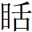
⑦333.18。“瞎嘴”攻击鲁迅的信 ③90.2。
影画 ⑦366.18。
影国 ①103.6。
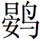
枪鹊起 ⑥204.4。踣傹 ①59.6。
“踔厉风发” （11）48.5。
“蝼蚁尚且贪生” ③172.3；⑤105.2。
蝶装 ③409.9。
蝶尔飞 ⑦20.31。
“蝴蝶铰” ④605.6。
蝙蝠的寓言 ⑤214.8。
颛蒙 ⑧37.11。
墨刑 （11）79.4。
墨面 ⑦472.2。
墨憨斋 ①163.32。
墨子之徒为侠 ④160.3。
墨子赴郢的故事 ②482.12。
“墨翟为印度人”之说 ⑤193.12；⑧374.3。
墨翟为飞机鼻祖之说 ⑧359.3。
墨子坐不暖席的故事 ②482.20。
墨子献书楚王的故事 ②483.21。
墨子和子夏之徒的对话 ②481.6。
墨子见“歧路”而哭的故事 （11）17.2。
墨子与公输般关于行义的对话 ②483.22。
墨子与公输般关于予天下的对话 ②483.23。
墨子与公输般关于鉤拒的对话 ②483.24。
镇南关 （11）660.7。
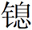
③11.8。《靠天吃饭图》的碑 ⑥380.2。
箱船 ⑦348.7。
篆字 ⑥107.16，294.11。
稽察觉罗学 ⑥60.5。
稻子豆 ⑩499.3。
“稻香村” ④87.10。
黎锦明评《柚子》 ⑥272.61。
黎锦明谈文体家 ④529.7。
黎明书局拟印《译文》 （14）23.3。
黎明书局印行法西斯书籍 （14）22.2。
“儀”字缺笔 ⑥182.27。
德律风 （15）104.2。
德莫克拉西 ⑦376.26。
“鹡鸰在原” ②147.8。
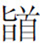
⑨26.7。鲧治水的故事 ②401.4。
鲧化三足鳖的传说 ②405.26，406.34。
“熟”而不“信” ⑩522.4。
“熟悉商情的朋友”说“某”字 ⑥316.6；⑧431.3。
摩罗 ①105.22。
摩登 ②406.33。
摩托车 ②134.8；③337.19；（16）137.7。
摩托卡 ⑥462.2。
“颜厚有忸怩” ②247.10；（12）406.3。
颜师古谈计然 ⑩30.6。
颜之推关于学鲜卑语的议论 ③454.7；⑧236.5。
遵命的批评家 ⑦348.6。
“潭腿” ④523.4。
潘叶之流不算“革命文学”之说 ④125.11。
潘汉年挖苦《在上海的鲁迅启事》 ④119.8。
潠酒救火的故事 ⑨42.8。
额黄 ①213.11。
“翩然一只云中鹤，飞去飞来宰相衙” ⑥233.2。
鹤膝风 ②405.27。
“慰情聊胜无” ②249.24。
“履穿踵决” ③77.4。
十六画
磬口的蜡梅花 ②186.4。
“燕巢危幕” （11）255.7。
“燕山雪花大如席” ⑥243.6。
“薛禅” ①132.11。
颠倒阳春曲 ⑤60.7。
翰林 ①558.49。
翰林院大学士 （12）412.6。
“整理国故” ①177.3，220.11；③30.15，464.10；⑩305.2。
“整顿茶馆” ⑤210.3。
“ ，彣彰也” ⑨359.17。
，彣彰也” ⑨359.17。
霍布草 ⑩298.14。
霍普特曼剧本演出时的冲突 ⑤265.7。
霍普德曼评凯绥·珂勒惠支的画 ⑥495.14。
操人形 （16）317.3。
臻臻至至 ②273.6。
冀州启节 ②403.15。
螓首 （13）5.2。
“噫嘻吗呢之为障也” ③146.5。
圜钱 ②497.14。
鹦鹉救火的故事 ⑤52.3。
黔首 ③48.3；⑨12.4。
“骸骨的迷恋” ⑤343.2；⑥515.2。
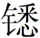
③11.8。赞颂悠闲，鼓吹烟茗 ⑥234.9。
篷然测热器 ⑦29.36。
穆那罗 ①23.53。
穆木天反对写游记 ⑤532.2。
穆木天反对“间接翻译” ⑤532.3。
穆木天谈“一劳永逸”的翻译 ⑤535.2。
穆木天怀疑自己的重译本《塔什干》 ⑤536.5。
“穆穆重华，託心五弦”等语 ⑩53.7。
“儒行” ①284.8。
“儒者柔也” ①133.17；④161.4；⑥543.14。
《儒林外史》人物的原型 ⑨234.4。
“儒以文乱法，而侠以武犯禁” ④161.7。
“雕龙” ③145.1。
雕镂画 ⑦366.20。
磨勘司 ⑨113.17；⑩149.7。
瘰疬病 ②404.17。
“燔灭文章以愚黔首” ⑨12.4。
羲皇上人 ①370.7。
羲皇时代 ①559.52。
澡雪 ①113.110。
壁克耳 ①23.41。
“避讳” ①320.10。
“避逆从顺”之教 ⑨33.10。
十七画
“鳌载山抃，何以安之” ①19.17。
戴季陶“讲文德” ⑤49.4。
戴季陶发起“法会” ⑤299.5，330.12。
戴季陶捐款修孔庙 ⑥54.8；（13）84.2。
戴季陶造塔藏主义 ⑤149.6，299.5，330.12。
戴季陶反对国学家掘墓 ⑤485.4；（13）84.2。
戴季陶命学生向鲍罗廷行鞠躬礼 ⑤27.7。
戴着白玫瑰花圈的耶稣基督 ⑦315.12。
觳 ①173.11。
“鞠躬尽瘁，死而后已” ③48.7；⑤250.8。
藏室史 ②465.6。
“藏诸名山，传之其人” ③165.11；⑤232.2；⑥454.34。
“藏之秘阁，副在三馆” ⑥109.23。
檀越 ③373.3。
磷光体铀盐 ⑦27.7。
“龌龊的农工大众” ④119.3。
“瞰亡往拜” ③140.7。
“嚎丧” ④605.5。
《嚓》的两幅画 （13）61.2。
“髀肉复生” ①268.15。
魏猛克嘲笑鲁迅的《萧伯纳颂》 ⑧382.9。
魏金枝讥讽茅盾的亲戚到教会学校谋职 ⑥311.10。
篾片 ③217.15。
“黛玉葬花”的照相 ⑤561.4。
“爵” ①271.32。
襄城小童 ⑩85.31。
“膺惩” ④318.2。
貘 ⑧23.29。
孺子牛 ⑦151.3。
十八画
瞽瞍害舜的传说 ⑨26.4。
藤黄 （11）494.2。
“藩司” ③454.6。
覆载 ⑧38.22。
瞿秋白全集事 （13）521.3。
瞿秋白纪念册的提议 （13）502.1。
颢气 ①106.28。
曜灵 ⑧89.13。
 仓别邸 ⑩262.2。
仓别邸 ⑩262.2。
“翻译年” ⑥285.2。
“翻译是冒险”之说 （12）122.2。
“翻手为云覆手雨”等语 ⑥391.4。
“翻译是媒婆，创作是处女” ①178.4；④477.13；⑤296.3；⑥285.3；⑧315.4。
鹰洋 ②23.16，299.3。
“襟上杭州旧酒痕” ⑥355.4。
十九画
《孽海花》的续书 ⑨304.24。
“警犬” ⑤192.1。
警视总监 ⑥332.15。
“攒十字” ⑤345.11。
蠉飞蠕动 ⑧37.5。
鼗鼓 ②267.25；⑧391.7。
爆击 ⑤77.4。
瀛洲 ⑦157.3。
二十画
躄 ①60.25。
鼯鼠蒲桃镜 （15）166.1。
二十一画
“蠢迪检柙” ④632.8。
“趯趯毚兔，遇犬获之” ④490.12。
霸王鞭 ③390.8。
露布 （15）28.13。
露西亚 ⑥530.20；（11）418.7；（13）403.3。
霹雳手 ⑩277.2。
夔以相欺 ⑩165.7。
二十二画以上
“囊萤照读” ⑥54.4。
《鱻苍载》 （11）378.4。
其他
5·4的装饰画 （14）62.1。
“CF男士” ④51.3。
④478.21；⑥147.4。
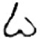
（12）57.4。